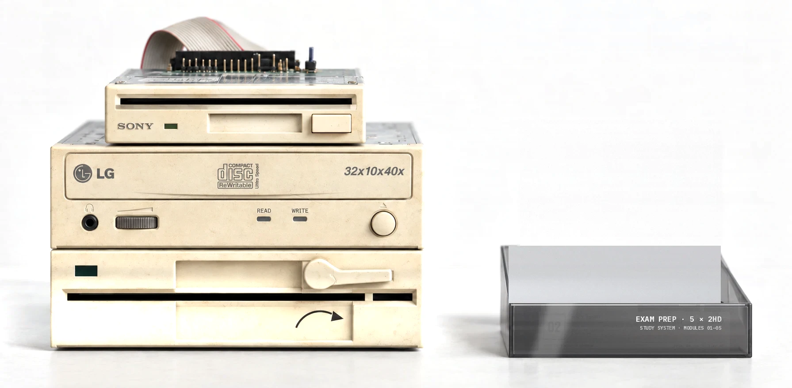
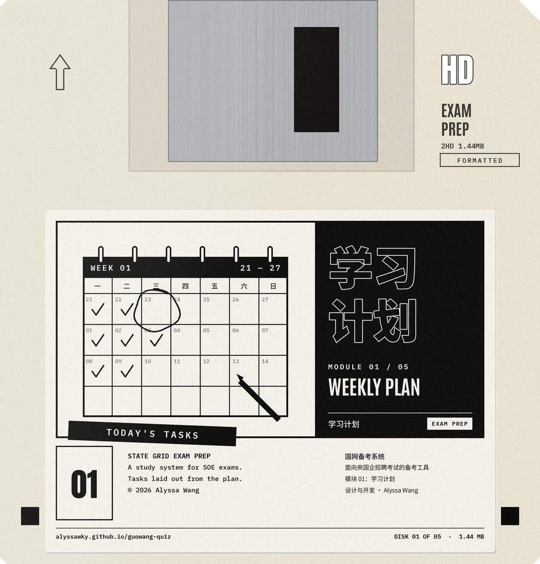
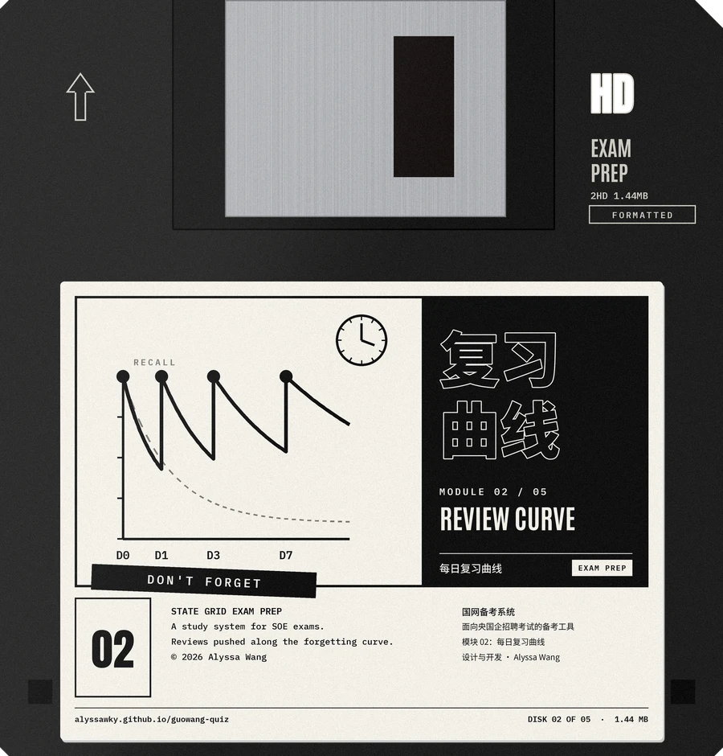
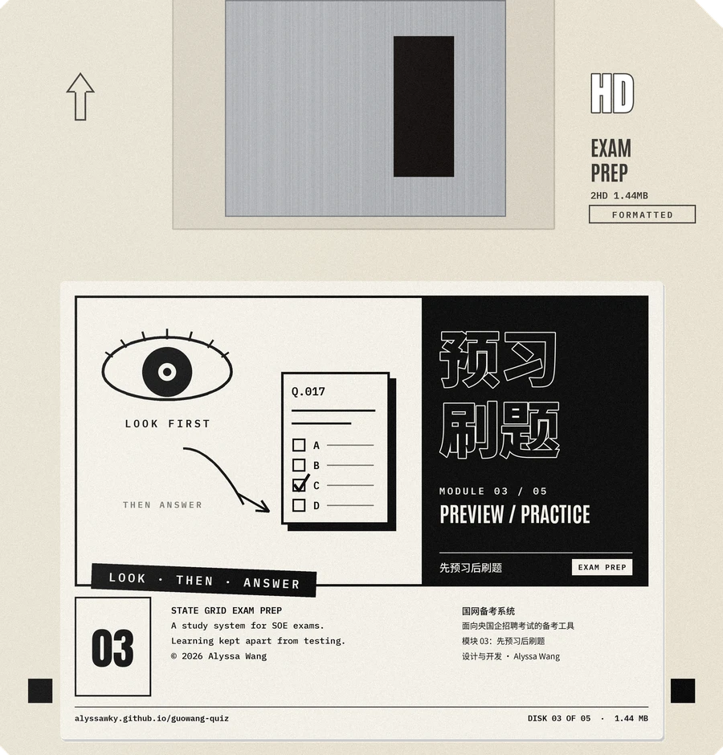
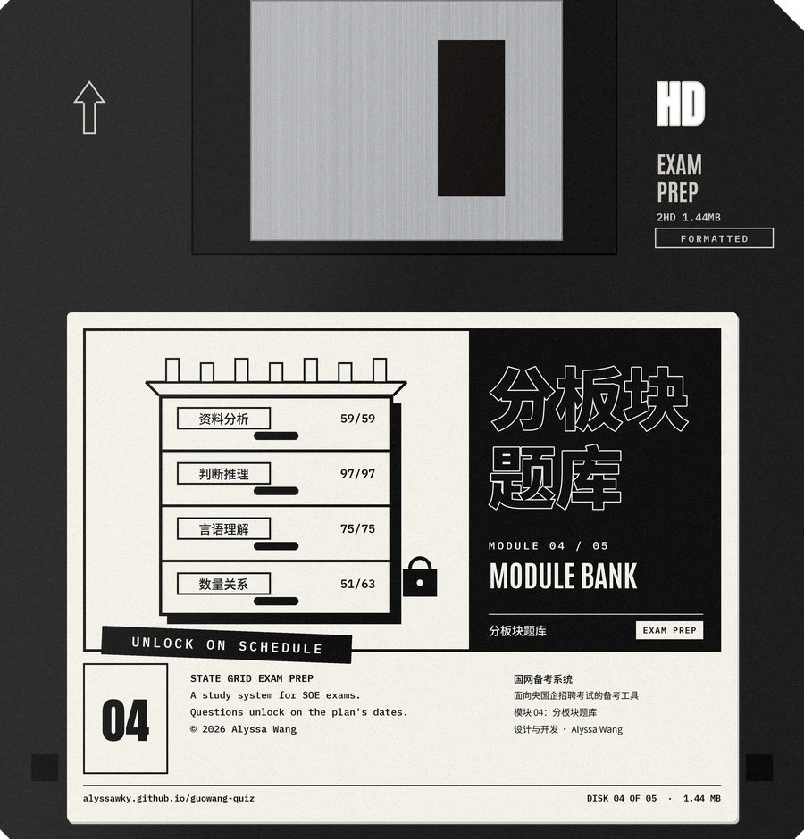
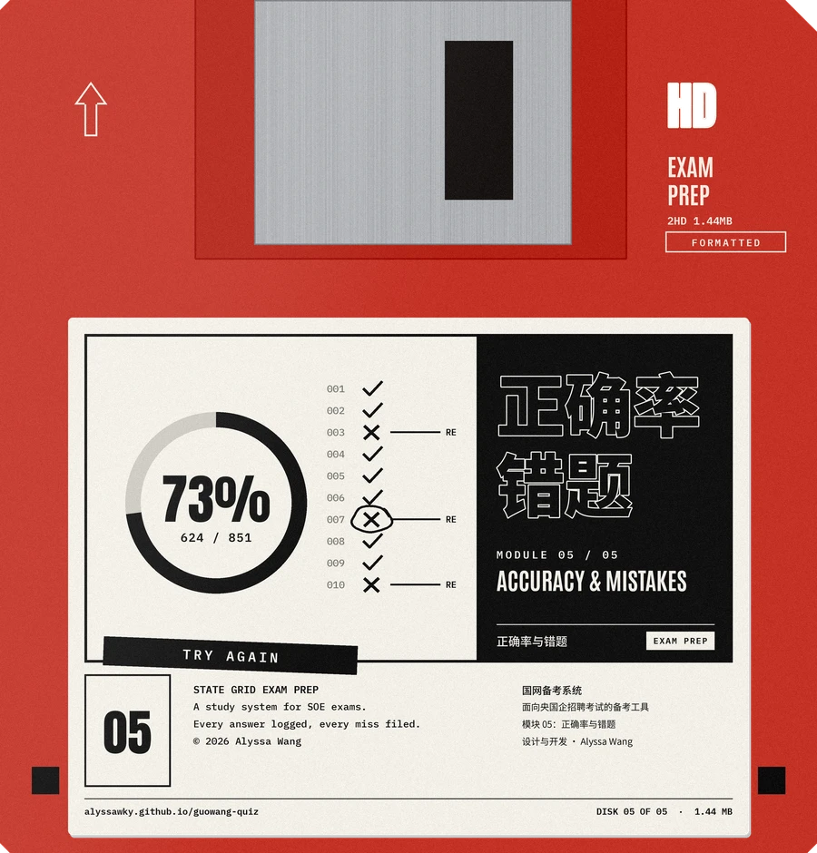

<meta charset="utf-8">
<meta name="viewport" content="width=device-width, initial-scale=1">
<meta name="description" content="Alyssa Wang (王柯予) — films, interactive work and writing. 影像、交互与写作作品集。">
<title>Alyssa Wang · Works</title>
<link rel="preconnect" href="https://fonts.googleapis.com">
<link rel="preconnect" href="https://fonts.gstatic.com" crossorigin>
<link rel="stylesheet" href="https://fonts.googleapis.com/css2?family=IBM+Plex+Mono:wght@500;600&family=Courier+Prime:wght@400;700&family=Caveat:wght@500;600&family=Long+Cang&family=Instrument+Sans:wght@400;500;600&family=Instrument+Serif:ital@0;1&family=Noto+Sans+SC:wght@400;500&family=Noto+Serif+SC:wght@400;600&display=swap">
<style>
:root{
  color-scheme: light;
  --paper:#EDECE8;
  --paper-2:#E4E2DC;
  --ink:#111111;
  --ink-2:#3A3936;
  --muted:#77756F;
  --rule:#1A1A1A;
  --hair:#CFCCC4;
  --jade:#2F6B5E; --jade-soft:#E3EEE9; --screen-line:#DCE5E0; --app-ink:#1E2B27;
  --serif:"Instrument Serif","Noto Serif SC","Songti SC",Georgia,serif;
  --sans:"Instrument Sans","Noto Sans SC","PingFang SC","Helvetica Neue",Arial,sans-serif;
  --zh-serif:"Noto Serif SC","Songti SC",serif;
  --ease:cubic-bezier(.22,.8,.2,1);
}
*{box-sizing:border-box}
html{background:var(--paper)}
body{background:var(--paper);color:var(--ink);font-family:var(--sans);font-size:15px;line-height:1.6;padding-inline:clamp(16px,2.6vw,40px);overflow-x:hidden;
  background-image:url("data:image/svg+xml,%3Csvg xmlns='http://www.w3.org/2000/svg' width='220' height='220'%3E%3Cfilter id='n'%3E%3CfeTurbulence type='fractalNoise' baseFrequency='.9' numOctaves='2' stitchTiles='stitch'/%3E%3CfeColorMatrix values='0 0 0 0 0 0 0 0 0 0 0 0 0 0 0 0 0 0 .06 0'/%3E%3C/filter%3E%3Crect width='220' height='220' filter='url(%23n)'/%3E%3C/svg%3E")}
body[data-lang="zh"] .en{display:none!important}
body[data-lang="en"] .zh{display:none!important}
a{color:inherit}
button{font:inherit;color:inherit;background:none;border:0;padding:0;cursor:pointer}
:focus-visible{outline:1.5px solid var(--ink);outline-offset:4px}
.label{font-family:var(--sans);font-size:10px;font-weight:600;letter-spacing:.22em;text-transform:uppercase;color:var(--ink-2)}

/* ---------- nav ---------- */
.nav{position:relative;z-index:30;display:grid;grid-template-columns:1fr auto 1fr;align-items:center;gap:16px;padding-block:18px}
.brand{font-family:var(--serif);font-size:22px;letter-spacing:.01em;text-decoration:none;justify-self:start}
.links{display:flex;gap:28px;align-items:center;font-size:15px;font-weight:500}
.links a,.links button{text-decoration:none;color:var(--muted);position:relative;transition:color .2s}
.links a:hover,.links button:hover,.links .on{color:var(--ink)}
.links .on::after{content:"";position:absolute;left:50%;bottom:-8px;width:4px;height:4px;border-radius:50%;background:var(--ink);transform:translateX(-50%)}
.idx-wrap{position:relative}
.idx-btn{display:inline-flex;align-items:center;gap:6px;color:var(--ink)!important}
.idx-btn svg:not(.loop){width:11px;height:11px;transition:transform .25s}
.idx-btn[aria-expanded="true"] svg:not(.loop){transform:rotate(180deg)}
.idx-menu{position:absolute;top:calc(100% + 14px);left:50%;transform:translateX(-50%);min-width:260px;background:var(--paper);border:1px solid var(--rule);padding:8px 0;list-style:none;margin:0;box-shadow:0 18px 40px -20px rgba(0,0,0,.35)}
.idx-menu button{display:flex;justify-content:space-between;gap:18px;width:100%;padding:9px 16px;text-align:left;font-size:14px;color:var(--ink)}
.idx-menu button:hover{background:var(--paper-2)}
.idx-menu .idx-text{display:inline-block;position:relative;min-width:0;line-height:1.5}
.idx-menu button:hover .idx-text .loop path,.idx-menu button:focus-visible .idx-text .loop path{stroke-dashoffset:0;transition:stroke-dashoffset .75s cubic-bezier(.6,.05,.3,1)}
.idx-menu small{color:var(--muted);font-size:12px}
.lang{justify-self:end;display:flex;gap:2px;font-size:12px;font-weight:600;letter-spacing:.14em}
.lang button{padding:4px 8px;color:var(--muted)}
.lang button[aria-pressed="true"]{color:var(--ink);text-decoration:underline;text-underline-offset:4px}

/* ---------- hero / disc stage ---------- */
.hero{position:relative;height:clamp(640px,57vw,940px);margin-inline:calc(-1 * clamp(16px,2.6vw,40px))}
.credits{position:absolute;z-index:12;left:clamp(16px,2.6vw,40px);top:4px;width:min(26vw,380px);pointer-events:none}
.credits h1{margin:0 0 10px;font-family:var(--serif);font-weight:400;font-size:clamp(30px,3.1vw,50px);line-height:.95;letter-spacing:-.01em;text-transform:uppercase;text-wrap:balance}
.credits h1 small{display:block;font-family:var(--serif),var(--zh-serif);font-weight:400;font-size:.42em;letter-spacing:.02em;color:var(--muted);text-transform:none;margin-top:6px}
.crow{display:grid;grid-template-columns:auto 1fr;gap:12px;border-top:1px solid var(--rule);padding-block:8px 6px;align-items:baseline}
.crow .v{text-align:right;font-size:16px;line-height:1.35}
.fade{animation:fade .45s var(--ease) both}
@keyframes fade{from{opacity:.001;transform:translateY(6px)}to{opacity:1;transform:none}}

.slot{position:absolute;width:var(--w);aspect-ratio:1;left:var(--x);top:var(--y);z-index:var(--z,1);perspective:1700px;display:block}
.slot:hover,.slot:focus-visible{z-index:20;outline:none}
.disc{position:absolute;inset:0;transform-style:preserve-3d;
  transform:translateY(0) rotateZ(var(--rz)) rotateX(var(--rx)) rotateY(var(--ry));
  transition:transform .7s var(--ease)}
.disc::before{content:"";position:absolute;inset:0;border-radius:50%;background:#A9A8A4;transform:translateZ(-9px)}
.disc img{position:absolute;inset:0;width:100%;height:100%;border-radius:50%;display:block;transition:transform 1.4s var(--ease);-webkit-user-drag:none;user-select:none}
.shade{position:absolute;left:6%;right:6%;top:30%;bottom:18%;border-radius:50%;background:radial-gradient(closest-side,rgba(0,0,0,.34),rgba(0,0,0,0));transform:translate(3%,16%) rotate(var(--rz)) scaleY(.62);filter:blur(10px);opacity:.75;transition:transform .7s var(--ease),opacity .7s var(--ease)}
.scribble{position:absolute;inset:-14%;width:128%;height:128%;overflow:visible;pointer-events:none}
.scribble path{fill:none;stroke:var(--ink);stroke-width:.5;stroke-linecap:round;stroke-linejoin:round;stroke-dasharray:101 101;stroke-dashoffset:101;transition:stroke-dashoffset .35s ease-in}
.slot:hover .disc,.slot:focus-visible .disc{transform:translateY(26px) rotateZ(var(--rz)) rotateX(var(--rx)) rotateY(var(--ry))}
.slot:hover .disc img,.slot:focus-visible .disc img{transform:rotate(16deg)}
.slot:hover .shade,.slot:focus-visible .shade{opacity:1;transform:translate(1%,12%) rotate(var(--rz)) scale(.88,.5)}
.slot:hover .scribble path,.slot:focus-visible .scribble path{stroke-dashoffset:0;transition:stroke-dashoffset .9s cubic-bezier(.6,.05,.3,1) .05s}
.slot .cap{display:none}
.hint{position:absolute;right:clamp(16px,2.6vw,40px);bottom:10px;font-size:12px;color:var(--muted);letter-spacing:.04em}

.quotes{position:absolute;z-index:12;left:50%;bottom:clamp(12px,2vw,34px);transform:translateX(-50%);display:grid;grid-template-columns:1fr 1fr;gap:clamp(24px,4vw,70px);width:min(62vw,860px);text-align:center;pointer-events:none}
.q .label{display:block;margin-bottom:8px}
.q p{margin:0;font-family:var(--serif);font-size:clamp(20px,2vw,30px);line-height:1.04;text-transform:uppercase;text-wrap:balance}
body[data-lang="zh"] .q p{font-family:var(--zh-serif);font-size:clamp(17px,1.5vw,22px);line-height:1.4;text-transform:none}
/* Keep the first film’s theme clear of its sinking disc. */
#quotes[data-film="human-factory"] .q:first-child{position:relative;left:clamp(120px,11vw,190px)}
#quotes[data-film="human-factory"] .q:last-child{position:relative;left:clamp(32px,3vw,52px)}
body[data-lang="en"] #quotes[data-film="human-factory"] .q:last-child{position:relative;left:clamp(85px,7vw,120px)}
body[data-lang="zh"] #quotes:is([data-film="immature-co-evolution"],[data-film="final-deadline"]) .q:first-child{position:relative;left:clamp(80px,7vw,130px)}
body[data-lang="en"] #quotes:is([data-film="immature-co-evolution"],[data-film="final-deadline"]) .q:first-child{position:relative;left:clamp(80px,7vw,130px)}
body[data-lang="en"] #quotes .q:last-child{position:relative;left:clamp(50px,5vw,90px)}
/* Keep disc proportions within the available height on wide, short screens. */
@media (min-width:981px) and (min-aspect-ratio:3/2){.slot{width:min(var(--w),calc((100vh - 92px)*.48))}}

/* ---------- sections ---------- */
section.block{border-top:1px solid var(--rule);padding-block:56px 72px}
.sec-head{display:grid;grid-template-columns:1fr 1.4fr;gap:clamp(20px,4vw,64px);align-items:end;margin-bottom:36px}
.sec-head h2{margin:0;font-family:var(--serif);font-weight:400;font-size:clamp(40px,5.4vw,84px);line-height:.92;text-transform:uppercase;letter-spacing:-.01em}
body[data-lang="zh"] .sec-head h2{font-family:var(--zh-serif);font-weight:600;text-transform:none;font-size:clamp(32px,3.8vw,56px);line-height:1.1}
.sec-head p{margin:0;color:var(--ink-2);max-width:40em}

/* product case (quiz) — ink-on-paper, same language as the disc stage */
.pm{display:grid;grid-template-columns:minmax(220px,1fr) minmax(0,2.1fr);gap:clamp(24px,4vw,64px);align-items:start}
.brief .crow{grid-template-columns:7.2em 1fr;align-items:start}
.brief .crow .v{text-align:left;font-size:15px;line-height:1.55}
.demo{min-width:0}
.tabs{display:flex;gap:6px;justify-content:space-between;border-bottom:1px solid var(--rule);padding:10px 12px 12px;overflow-x:auto;scrollbar-width:none}
.tabs::-webkit-scrollbar{display:none}
.tab{position:relative;flex:none;padding:8px 14px;font-family:var(--serif);font-size:21px;line-height:1;color:var(--muted);white-space:nowrap;transition:color .25s}
body[data-lang="zh"] .tab{font-family:var(--zh-serif);font-size:15px;padding:9px 14px}
.tab:hover,.tab[aria-selected="true"]{color:var(--ink)}
.loop{position:absolute;left:-8px;top:-7px;overflow:visible;pointer-events:none}
.loop path{fill:none;stroke:var(--ink);stroke-width:1.5;stroke-linecap:round;stroke-dasharray:101 101;stroke-dashoffset:101;transition:stroke-dashoffset .3s ease-in}
.has-loop:hover .loop path,.has-loop:not(.ftab):focus-visible .loop path,.tab:hover .loop path,.tab:focus-visible .loop path,.tab[aria-selected="true"] .loop path{stroke-dashoffset:0;transition:stroke-dashoffset .75s cubic-bezier(.6,.05,.3,1)}
.tab-desc{margin:14px 2px 16px;min-height:1.6em;font-size:15px;color:var(--ink-2)}
.prog-line{height:1px;background:var(--hair);margin-top:14px;overflow:hidden}
.prog-line i{display:block;height:100%;width:0;background:var(--ink)}
.prog-line.run i{animation:fill var(--dur,6s) linear forwards;--w:100%}
.demo:hover .prog-line.run i{animation-play-state:paused}

.screen{--app:#111;--app-soft:#E4E2DC;--app-line:#D6D3CB;--app-2:#6F6D67;position:relative;background:#F7F6F2;color:var(--ink);aspect-ratio:16/8.6;max-width:100%;overflow:hidden;border:1px solid var(--rule);box-shadow:0 26px 50px -34px rgba(0,0,0,.45)}
.chrome{display:flex;gap:6px;align-items:center;padding:9px 14px;border-bottom:1px solid var(--app-line)}
.chrome i{width:8px;height:8px;border-radius:50%;border:1px solid var(--app-2)}
.chrome span{margin-left:10px;font-size:11px;color:var(--app-2);letter-spacing:.04em;white-space:nowrap;overflow:hidden;text-overflow:ellipsis}
.scene{position:absolute;inset:36px 0 0 0;padding:clamp(14px,2.6vw,30px);display:flex;flex-direction:column;gap:12px;opacity:0;transform:translateY(8px);transition:opacity .45s,transform .45s var(--ease);pointer-events:none}
.scene.on{opacity:1;transform:none}
.s-eyebrow{font-size:10px;font-weight:600;letter-spacing:.2em;color:var(--app-2);text-transform:uppercase}
.s-title{font-family:var(--zh-serif);font-weight:600;font-size:clamp(15px,1.8vw,21px)}
.card{background:#fff;border:1px solid var(--app-line);padding:10px 14px}
.week{display:grid;grid-template-columns:repeat(7,1fr);gap:6px}
.week div{border:1px solid var(--app-line);text-align:center;padding:5px 0;font-size:10px;color:var(--app-2);background:#fff}
.week div b{display:block;font-size:clamp(12px,1.5vw,16px);color:var(--ink);font-weight:500}
.week .today{background:var(--app);border-color:var(--app);color:#bbb}.week .today b{color:#fff}
.tasks{list-style:none;margin:0;display:grid;gap:7px;font-size:clamp(11px,1.2vw,13px)}
.tasks li{display:flex;gap:9px;align-items:center}
.tick{width:14px;height:14px;border-radius:50%;border:1.3px solid var(--app);flex:none;position:relative}
.tick::after{content:"";position:absolute;inset:2px;border-radius:50%;background:var(--app);transform:scale(0)}
.scene.on .tasks li:nth-child(1) .tick::after{animation:pop .3s .6s forwards}
.scene.on .tasks li:nth-child(2) .tick::after{animation:pop .3s 1.2s forwards}
.scene.on .tasks li:nth-child(3) .tick::after{animation:pop .3s 1.8s forwards}
.scene.on .tasks li:nth-child(4) .tick::after{animation:pop .3s 2.4s forwards}
@keyframes pop{to{transform:scale(1)}}
.curve{width:100%;height:auto;flex:1;min-height:0}
.curve .grid line{stroke:var(--app-line)}
.curve .forget{fill:none;stroke:#B8B5AD;stroke-width:1.5;stroke-dasharray:4 4}
.curve .kept{fill:none;stroke:var(--app);stroke-width:2;stroke-dasharray:600;stroke-dashoffset:600}
.scene.on .curve .kept{animation:draw 2.4s .3s var(--ease) forwards}
@keyframes draw{to{stroke-dashoffset:0}}
.curve circle{fill:var(--app);opacity:0}
.scene.on .curve circle{animation:fadein .3s forwards}
.scene.on .curve circle:nth-of-type(1){animation-delay:.9s}.scene.on .curve circle:nth-of-type(2){animation-delay:1.5s}.scene.on .curve circle:nth-of-type(3){animation-delay:2.1s}
@keyframes fadein{to{opacity:1}}
.curve text{font-size:10px;fill:var(--app-2);font-family:var(--sans)}
.pool{display:flex;flex-wrap:wrap;gap:6px;font-size:11px}
.pool span{background:#fff;border:1px solid var(--app-line);border-radius:999px;padding:3px 10px}
.flow{display:grid;grid-template-columns:1fr auto 1fr;gap:10px;align-items:center}
.flow .card{display:grid;gap:8px}
.meter{height:6px;background:var(--app-soft);overflow:hidden}
.meter i{display:block;height:100%;width:0;background:var(--app)}
.scene.on .m-pre i{animation:fill 1.4s .4s var(--ease) forwards;--w:100%}
.scene.on .m-real i{animation:fill 1.4s 1.9s var(--ease) forwards;--w:100%}
@keyframes fill{to{width:var(--w)}}
.num{font-size:11px;color:var(--app-2);font-variant-numeric:tabular-nums}
.rule{margin:0;font-size:clamp(11px,1.2vw,13px);color:var(--ink-2);border-left:1.5px solid var(--app);padding-left:10px}
.mods{display:grid;gap:9px}
.mod{display:grid;grid-template-columns:5.5em 1fr 4.2em;gap:10px;align-items:center;font-size:clamp(11px,1.2vw,13px)}
.mod .num{text-align:right}
.scene.on .mod .meter i{animation:fill 1.1s var(--ease) forwards}
.scene.on .mod:nth-child(2) .meter i{animation-delay:.15s}.scene.on .mod:nth-child(3) .meter i{animation-delay:.3s}.scene.on .mod:nth-child(4) .meter i{animation-delay:.45s}
.acc{display:grid;grid-template-columns:auto 1fr;gap:clamp(14px,3vw,28px);align-items:center}
.ring{width:clamp(90px,13vw,140px);height:auto}
.ring .bg{fill:none;stroke:var(--app-soft);stroke-width:8}
.ring .fg{fill:none;stroke:var(--app);stroke-width:8;stroke-dasharray:314;stroke-dashoffset:314;transform:rotate(-90deg);transform-origin:center}
.scene.on .ring .fg{animation:ring 1.8s .3s var(--ease) forwards}
@keyframes ring{to{stroke-dashoffset:84.8}}
.ring text{font-family:var(--serif);font-size:30px;fill:var(--app)}
.acc ul{margin:0;padding:0;list-style:none;display:grid;gap:8px;font-size:clamp(11px,1.2vw,13px)}


/* reader rig: stacked floppies + machine (ink-on-paper) */
.reader{display:grid;grid-template-columns:minmax(0,1fr) minmax(0,1.12fr);gap:clamp(24px,4vw,64px);align-items:center}
.rig-col{position:relative}
.rig-wrap{position:relative;width:100%;max-width:640px;margin:0 auto}
.rig{position:absolute;left:0;top:0;transform-origin:0 0}
.lay{position:absolute;display:block;pointer-events:none;user-select:none;-webkit-user-drag:none}
.host-shadow{opacity:.72;transform-origin:50% 60%}
.machine{position:absolute;inset:0;pointer-events:none}
.disk{position:absolute;left:0;top:0;transition:transform .55s var(--ease)}
.disk[hidden]{display:none}
.rig-loop{position:absolute;left:0;top:0;overflow:visible;pointer-events:none}
.rig-loop path{fill:none;stroke:var(--ink);stroke-width:5;stroke-linecap:round;stroke-linejoin:round;stroke-dasharray:101 101;stroke-dashoffset:101;transition:stroke-dashoffset .35s ease-in}
.rig.hover .rig-loop path{stroke-dashoffset:0;transition:stroke-dashoffset 1s cubic-bezier(.6,.05,.3,1)}
.rig-hit{position:absolute;cursor:pointer;border-radius:40px;background:transparent}
.rig-hit:focus-visible{outline:2px dashed var(--ink);outline-offset:6px}
.rig.busy .rig-hit{cursor:progress}
.crt{position:absolute;left:0;top:0;transform-origin:0 0;border-radius:10px;overflow:hidden;color:#E2DED2;font-family:"IBM Plex Mono",ui-monospace,Menlo,monospace;pointer-events:none}
.crt::after{content:"";position:absolute;inset:0;background:repeating-linear-gradient(0deg,rgba(0,0,0,.22) 0 2px,transparent 2px 5px),radial-gradient(ellipse at 40% 35%,rgba(255,255,255,.07),transparent 65%)}
.crt-in{position:absolute;inset:0;padding:18px 20px;display:flex;flex-direction:column;gap:9px}
.c-top{display:flex;justify-content:space-between;font-size:13px;font-weight:600;letter-spacing:.06em;border-bottom:2px solid #7E7B72;padding-bottom:9px}
.c-line{font-size:13px;letter-spacing:.04em;color:#B9B5AA}
.c-title{font-family:"Noto Sans SC",sans-serif;font-weight:500;font-size:44px;line-height:1.05;letter-spacing:.02em;margin-top:2px}
.c-sub{font-size:12px;letter-spacing:.08em;color:#9E9A90}
.c-bar{height:18px;border:2px solid #E2DED2;padding:2px;margin-top:4px}
.c-bar i{display:block;height:100%;width:0;background:#E2DED2}
.c-kb{font-size:12px;color:#9E9A90;letter-spacing:.04em}
.c-prompt{margin-top:auto;font-size:13px;font-weight:600}
.c-prompt .cur{animation:blink 1s steps(1) infinite}
@keyframes blink{50%{opacity:0}}
.rig-hint{text-align:center;margin:6px 0 0;font-size:13px;color:var(--muted);letter-spacing:.04em}
.rig-hint b{color:var(--ink);font-weight:600}

/* app demo keeps the product's own green palette */
.demo-head{display:grid;grid-template-columns:1fr auto;gap:4px 18px;align-items:end;margin-bottom:16px}
.demo-head h3{margin:0;font-family:var(--serif);font-weight:400;font-size:clamp(28px,2.6vw,40px);line-height:1;text-transform:uppercase}
body[data-lang="zh"] .demo-head h3{font-family:var(--zh-serif);font-weight:600;text-transform:none;font-size:clamp(22px,2vw,30px);line-height:1.2}
.demo-head p{grid-column:1/-1;margin:0;color:var(--ink-2);font-size:15px}
.demo-head .label{grid-column:1/-1}
.screen.app{--app:#2F6B5E;--app-soft:#E3EEE9;--app-line:#DCE5E0;--app-2:#6D7A75;background:#F3F6F4;color:#1E2B27;aspect-ratio:16/9.8;border-radius:14px;border:1px solid #DCE5E0;box-shadow:0 34px 60px -36px rgba(20,60,50,.45)}
.screen.app .chrome{background:#fff}
.screen.app .chrome i{border:0;background:#D8DEDB}
.screen.app .chrome span{background:#E3EEE9;color:#6D7A75;padding:2px 10px;border-radius:999px}
.screen.app .s-eyebrow{color:#2F6B5E}
.screen.app .s-title{font-family:var(--sans);font-weight:600}
.screen.app .card{border-radius:10px}
.screen.app .week div{border-radius:8px}
.screen.app .meter,.screen.app .meter i{border-radius:99px}
.screen.app .pool b,.screen.app .acc li b{color:#2F6B5E}
.screen.app .ring text{font-family:var(--sans);font-weight:600;font-size:26px}
.screen.app .rule{color:#4D5B56}
.screen.app .curve .forget{stroke:#C4CFCA}
.brief-grid{display:grid;grid-template-columns:repeat(4,1fr);gap:0 clamp(16px,2.4vw,36px);margin-top:56px}
.brief-grid .crow{display:block;padding-top:12px}
.brief-grid .crow .label{display:block;margin-bottom:8px}
.brief-grid .crow .v{display:block;text-align:left;font-size:15px;line-height:1.55}

/* compact product block */
#interactive{padding-block:40px 56px}
.sec-top{display:flex;justify-content:space-between;align-items:baseline;border-bottom:1px solid var(--hair);padding-bottom:10px;margin-bottom:22px}
.reader2{display:grid;grid-template-columns:minmax(0,1.08fr) minmax(0,1fr);gap:clamp(20px,3vw,44px);align-items:center}
.reader2 .rig-wrap{max-width:none}
.rig{perspective:2200px;perspective-origin:30% 10%}
.fdisk{position:absolute;left:0;top:0;width:900px;height:940px;transform-origin:0 0;transition:transform .55s var(--ease);backface-visibility:hidden;will-change:transform;filter:drop-shadow(0 6px 10px rgba(0,0,0,.18))}
.fdisk[hidden]{display:none}
.machine{z-index:5}
.lcd{position:absolute;border-radius:6px;padding:10px 16px;display:flex;flex-direction:column;justify-content:center;gap:8px;color:#9EF0B9;font-family:"IBM Plex Mono",ui-monospace,monospace;text-shadow:0 0 6px rgba(120,255,170,.55);overflow:hidden}
.lcd::after{content:"";position:absolute;inset:0;background:repeating-linear-gradient(0deg,rgba(0,0,0,.25) 0 2px,transparent 2px 4px);pointer-events:none}
.lcd-l1{font-size:22px;font-weight:600;letter-spacing:.04em;white-space:nowrap}
.lcd-l2{display:flex;align-items:center;gap:12px;font-size:17px}
.lcd-bar{flex:1;height:12px;border:2px solid #9EF0B9;padding:1px;box-shadow:0 0 6px rgba(120,255,170,.4)}
.lcd-bar i{display:block;height:100%;background:#9EF0B9}
.led{position:absolute;border-radius:3px;opacity:0;transition:opacity .15s}
.led.read{background:#FFB23E;box-shadow:0 0 10px 3px rgba(255,170,50,.8)}
.led.busy{background:#62E07C;box-shadow:0 0 10px 3px rgba(80,230,110,.8)}
.led.on{opacity:1}
.led.blink{animation:ledb .18s steps(1) infinite}
@keyframes ledb{50%{opacity:.25}}
.sliver-clip{position:absolute;left:0;overflow:hidden;pointer-events:none}
.sliver-clip img{position:absolute;display:block}
.rig-loop path{stroke-width:4.5}
.rig-hit{border-radius:18px}
.sr{position:absolute;width:1px;height:1px;overflow:hidden;clip:rect(0 0 0 0)}
.rig-hint{margin-top:2px}

/* spec block — film-credits layout */
.spec{display:grid;grid-template-columns:minmax(0,1fr) minmax(0,1.15fr);gap:clamp(24px,5vw,80px);margin-top:38px;align-items:start}
.spec-title{margin:0 0 6px;font-family:var(--serif);font-weight:400;font-size:clamp(40px,4.4vw,66px);line-height:.92;text-transform:uppercase;letter-spacing:-.01em}
body[data-lang="zh"] .spec-title{font-family:var(--zh-serif);font-weight:600;text-transform:none;font-size:clamp(34px,3.4vw,50px);line-height:1.15}
.srow{display:grid;grid-template-columns:auto 1fr;gap:16px;border-top:1px solid var(--rule);padding:9px 0 8px;align-items:baseline}
.srow .label{letter-spacing:.24em;padding-top:4px}
.sv{text-align:right;font-family:var(--sans);font-weight:500;font-size:clamp(18px,1.6vw,22px);line-height:1.22;letter-spacing:-.015em}
.sv.sm{font-size:15px;font-weight:400;line-height:1.55;letter-spacing:0;color:var(--ink-2);text-align:left}
.sv.sm b{font-weight:600;color:var(--ink)}
.srow.top{grid-template-columns:8.5em 1fr}
.spec-lead{margin:0 0 18px;font-family:var(--zh-serif);font-size:clamp(17px,1.5vw,21px);line-height:1.6}
body[data-lang="en"] .spec-lead{font-family:var(--serif);font-size:clamp(20px,1.8vw,26px);line-height:1.25}
.spec-r .golink{margin-top:14px;margin-left:-18px}
@media (max-width:980px){ .reader2,.spec{grid-template-columns:1fr} }
@media (max-width:560px){ .srow.top{grid-template-columns:1fr} .sv.sm{justify-self:start} }

/* ===== paged layout + liquid transition ===== */
.nav{position:sticky;top:0;background:var(--paper)}
body.paged{overflow:hidden;height:100vh}
body.paged .nav{position:fixed;left:0;right:0;top:0;padding-inline:clamp(16px,2.6vw,40px);background:transparent;z-index:40}
body.paged .page{position:fixed;inset:0;padding:74px clamp(16px,2.6vw,40px) 18px;visibility:hidden;overflow:hidden;background:var(--paper);background-image:inherit}
body.paged .page.on{visibility:visible}
body.paged #p-more{overflow-y:auto}
body.paged .hero{height:calc(100vh - 92px);margin-inline:calc(-1 * clamp(16px,2.6vw,40px))}
.pager{display:none}
body.paged .pager{display:none;flex-direction:column;gap:14px;position:fixed;right:clamp(10px,1.6vw,26px);top:50%;transform:translateY(-50%);z-index:41}
.pager button{display:flex;align-items:center;gap:8px;justify-content:flex-end;font-size:11px;letter-spacing:.18em;color:var(--muted)}
.pager button em{font-style:normal;max-width:0;overflow:hidden;white-space:nowrap;transition:max-width .35s var(--ease)}
.pager button:hover em,.pager button[aria-current="true"] em{max-width:6em}
.pager button span{display:inline-grid;place-items:center;width:30px;height:30px;border:1px solid transparent;border-radius:50%}
.pager button[aria-current="true"]{color:var(--ink)}
.pager button[aria-current="true"] span{border-color:var(--ink)}
.liquid{position:fixed;inset:0;width:100vw;height:100vh;z-index:45;pointer-events:none}
.liquid path{fill:var(--ink)}

/* ===== product page: far reader, near projection ===== */
.prod{position:relative;height:100%;min-height:560px}
.prod-top{display:flex;justify-content:space-between;border-bottom:1px solid var(--hair);padding-bottom:8px}
.spec-car{position:absolute;left:0;top:44px;width:min(31vw,470px);z-index:6}
.spec-view{overflow:hidden}
.spec-track{display:flex;transition:transform .75s cubic-bezier(.7,0,.2,1)}
.sp{flex:0 0 100%;padding-right:6px;min-height:340px}
.sp .spec-title{margin-bottom:10px}
.sp-k{display:block;margin:6px 0 14px}
.sp-lead{margin:0 0 18px;font-family:var(--zh-serif);font-size:clamp(17px,1.45vw,21px);line-height:1.6}
body[data-lang="en"] .sp-lead{font-family:var(--serif);font-size:clamp(21px,1.9vw,27px);line-height:1.2}
.sp-h{margin:0 0 12px;font-family:var(--serif);font-weight:400;font-size:clamp(30px,2.8vw,44px);line-height:1;text-transform:uppercase}
body[data-lang="zh"] .sp-h{font-family:var(--zh-serif);font-weight:600;text-transform:none;font-size:clamp(24px,2.1vw,32px);line-height:1.25}
.sp-p{margin:0 0 18px;font-size:15.5px;color:var(--ink-2);line-height:1.7}
.srow.long .sv{font-size:15px;font-weight:400;letter-spacing:0;line-height:1.55;text-align:left;color:var(--ink-2)}
.srow.long{grid-template-columns:7.5em 1fr}
.sp .golink{margin:10px 0 0 -18px}
.spec-nav{display:flex;align-items:center;gap:14px;margin-top:10px;font-size:12px;letter-spacing:.14em}
.snav{position:relative;width:34px;height:34px;font-size:16px;display:grid;place-items:center}
.spec-idx{font-variant-numeric:tabular-nums;color:var(--ink-2)}
.spec-bar{flex:1;height:1px;background:var(--hair);overflow:hidden}
.spec-bar i{display:block;height:100%;width:20%;background:var(--ink);transition:transform .75s cubic-bezier(.7,0,.2,1)}
.proj-wrap{position:absolute;right:52px;top:40px;width:min(54vw,860px);z-index:4}
.proj{perspective:1500px;perspective-origin:0% 60%}
.proj .screen.app{transform:rotateY(-13deg) rotateX(1.5deg);transform-origin:100% 50%;box-shadow:0 60px 90px -50px rgba(20,40,34,.55),0 0 0 1px #DCE5E0;transition:filter .4s}
.proj-wrap .demo-head{padding-left:14%;margin-bottom:12px}
.app-load{position:absolute;inset:38px 0 0 0;background:rgba(243,246,244,.96);display:flex;flex-direction:column;align-items:center;justify-content:center;gap:12px;font-family:"IBM Plex Mono",monospace;color:#2F6B5E;opacity:0;pointer-events:none;transition:opacity .25s;z-index:3}
.app-load.on{opacity:1}
.al-k{font-size:12px;letter-spacing:.2em}
.app-load b{font-family:var(--sans);font-size:clamp(20px,2vw,30px);color:#1E2B27}
.al-bar{width:46%;height:8px;border-radius:99px;background:#E3EEE9;overflow:hidden}
.al-bar i{display:block;height:100%;width:0;background:#2F6B5E;border-radius:99px}
.al-kb{font-size:12px;color:#6D7A75}
.beam{position:absolute;left:0;top:0;width:100%;height:100%;pointer-events:none;z-index:3;overflow:visible;opacity:.7;transition:opacity .4s}
.beam.hot{opacity:1}
.rig-far{position:absolute;left:0;bottom:0;width:min(37vw,560px);z-index:5;mix-blend-mode:multiply}
.rig-far .rig-wrap{isolation:auto}
.rig{perspective:1500px;perspective-origin:40% 20%}
.rig-photo{position:absolute;left:0;top:0;display:block;mix-blend-mode:multiply}
.rig{isolation:auto}
.fdisk2{position:absolute;left:0;top:0;width:900px;height:940px;transform-origin:0 0;transition:transform .55s var(--ease);will-change:transform}
.fdisk2 img{display:block;width:100%;height:100%;filter:drop-shadow(0 14px 18px rgba(0,0,0,.28))}
.fdisk2::after{content:"";position:absolute;inset:0;background:linear-gradient(180deg,rgba(255,255,255,.07),rgba(0,0,0,.12));mix-blend-mode:multiply;pointer-events:none}
.fdisk2[hidden]{display:none}
.sliver-clip{position:absolute;overflow:hidden;pointer-events:none}
.sliver{position:absolute;top:0;display:block}
.sliver .s-top{display:block;height:8px;background-size:100% 1150%;background-position:0 100%;filter:brightness(.92)}
.sliver .s-edge{display:block;height:5px;background:#bdb6a6;box-shadow:0 4px 5px -2px rgba(0,0,0,.35)}
.box-hit{position:absolute;cursor:pointer;border-radius:30px;z-index:25}
.box-hit:focus-visible{outline:3px dashed var(--ink);outline-offset:6px}
.rig.busy .box-hit{cursor:progress}
.rig-loop{z-index:24}
.rig-loop path{stroke-width:6}
.rig.hover .fdisk2.front{transform:var(--t) translateY(18px)}
.more{max-width:none}
body.paged .more section.block{padding-block:28px 34px}
@media (max-width:1100px),(max-height:620px){
  body.paged{overflow:auto;height:auto}
}
@media (max-width:980px){
  .prod{height:auto}
  .spec-car,.proj-wrap,.rig-far{position:relative;left:auto;right:auto;top:auto;bottom:auto;width:100%}
  .rig-far{margin-top:20px}.proj-wrap{margin-top:24px}
  .proj .screen.app{transform:none}
  .proj-wrap .demo-head{padding-left:0}
  .beam{display:none}
  .prod{display:flex;flex-direction:column}
  .rig-far{order:2}.proj-wrap{order:3}
}

/* ---- product page v3: depth ---- */
body.paged #p-product{perspective:none}
.prod-top{position:relative;z-index:8}
.floor{position:absolute;left:calc(-1 * clamp(16px,2.6vw,40px));right:calc(-1 * clamp(16px,2.6vw,40px));top:58%;bottom:-18px;pointer-events:none;z-index:0;
  background:linear-gradient(180deg,rgba(60,50,30,0) 0,rgba(60,50,30,.05) 100%)}
.floor::before{display:none;content:"";position:absolute;left:0;right:0;top:0;height:1px;background:linear-gradient(90deg,transparent,rgba(17,17,17,.12) 20%,rgba(17,17,17,.12) 80%,transparent)}
.spec-car{top:52px;width:min(24vw,340px)}
.sp{min-height:0}
.sp .spec-title{font-size:clamp(30px,2.6vw,40px)}
body[data-lang="zh"] .sp .spec-title{font-size:clamp(24px,2vw,30px)}
.spec-car .srow{padding:6px 0 5px;gap:12px}
.spec-car .sv{font-size:14px;line-height:1.35;letter-spacing:0}
.spec-car .srow .label{font-size:9px}
.sp-lead{font-size:15px!important;line-height:1.65!important}
body[data-lang="en"] .sp-lead{font-size:17px!important;line-height:1.35!important}
.sp-h{font-size:clamp(22px,1.9vw,28px)!important}
body[data-lang="zh"] .sp-h{font-size:clamp(18px,1.4vw,21px)!important}
.sp-p{font-size:13.5px;line-height:1.7}
.srow.long .sv{font-size:13.5px}
.spec-nav{margin-top:14px}
/* far reader: small, higher on the floor, hazy */
.rig-far{left:26.5vw;top:auto;bottom:40%;width:min(20vw,300px);z-index:2}
.rig-far .rig-wrap{opacity:.9}
.rig-far .rig-hint{position:absolute;left:0;top:100%;font-size:11px;white-space:nowrap;margin-top:22px;text-align:left}
/* near screen: large, floating, reacts to the pointer */
.proj-wrap{right:clamp(8px,2vw,32px);top:30px;width:min(48vw,760px);z-index:4}
.proj-wrap .demo-head{padding-left:10%;margin-bottom:22px;position:relative;z-index:2}
.proj-wrap .demo-head h3{font-size:clamp(20px,1.6vw,26px)!important}
.proj-wrap .demo-head p{font-size:13.5px}
.proj{perspective:1300px;perspective-origin:30% 50%;position:relative}
.float{animation:bob 6s ease-in-out infinite}
@keyframes bob{0%,100%{transform:translateY(0)}50%{transform:translateY(-12px)}}
.tilt{transform-style:preserve-3d;transform:rotateY(var(--ry,-12deg)) rotateX(var(--rx,3deg));transition:transform .6s cubic-bezier(.2,.8,.2,1);will-change:transform}
.proj .screen.app{transform:none;box-shadow:0 0 0 1px #DCE5E0,0 40px 70px -40px rgba(20,40,34,.45)}
.glare{position:absolute;inset:0;border-radius:14px;pointer-events:none;background:radial-gradient(circle at var(--gx,30%) var(--gy,20%),rgba(255,255,255,.35),rgba(255,255,255,0) 45%);mix-blend-mode:soft-light;z-index:4}
.float-shadow{position:absolute;left:12%;right:6%;bottom:-86px;height:40px;border-radius:50%;background:radial-gradient(closest-side,rgba(30,30,24,.32),rgba(30,30,24,0));filter:blur(6px);animation:shadow 6s ease-in-out infinite;pointer-events:none}
@keyframes shadow{0%,100%{transform:scale(1);opacity:.9}50%{transform:scale(.9);opacity:.6}}
@media (prefers-reduced-motion:reduce){.float,.float-shadow{animation:none}}
@media (max-width:980px){ .rig-far{left:auto;top:auto;width:min(80vw,420px);margin-inline:auto} .floor{display:none} .tilt{transform:none} .float-shadow{display:none} .spec-car{width:100%} }

/* ---- detail: liner notes ---- */
.d-row{display:grid;grid-template-columns:repeat(3,1fr);gap:0 clamp(16px,3vw,40px);margin-top:32px}
.d-row .crow{border-top:1px solid var(--rule)}
.liner{margin:40px auto 0;max-width:1180px}
.liner img{display:block;width:100%;height:auto;mix-blend-mode:multiply;transition:transform .8s cubic-bezier(.2,.8,.2,1)}
.liner:hover img{transform:translateY(-6px)}
.liner-cap{display:flex;justify-content:space-between;margin-top:10px}
@media (max-width:640px){ .d-row{grid-template-columns:1fr} }

/* product page tweaks */
.rig-far{left:3.5vw!important;top:auto!important;bottom:6%!important;width:min(20vw,300px)!important}
.rig-far .rig-hint{margin-top:12px!important}
.prod .golink.live-link{position:absolute;right:0;bottom:4px;z-index:9;font-size:14px;padding:12px 20px}
@media (max-width:980px){ .prod .golink.live-link{position:relative;align-self:flex-end;order:9;margin-top:18px} }

/* ================= WRITING ARCHIVE ================= */
.archive{position:relative;height:100%;display:flex;flex-direction:column}
.arc-wrap{position:relative;flex:1;min-height:520px;overflow:hidden}
.arc-scale{position:absolute;left:50%;top:50%;width:1100px;height:720px;margin:-360px 0 0 -550px;transform-origin:50% 50%}
.arc-float{position:absolute;inset:0;perspective:2200px;animation:bob 7s ease-in-out infinite}
.archive.open .arc-float{animation:none}
.arc-tilt{position:absolute;inset:0;transform-style:preserve-3d;transform:rotateX(var(--rx,4deg)) rotateY(var(--ry,-3deg));transition:transform .7s cubic-bezier(.2,.8,.2,1)}
.arc-shadow{position:absolute;left:30%;right:14%;bottom:-14px;height:40px;border-radius:50%;background:radial-gradient(closest-side,rgba(30,28,22,.30),rgba(30,28,22,0));filter:blur(8px);animation:shadow 7s ease-in-out infinite;transition:left .9s cubic-bezier(.7,0,.2,1)}
.archive.open .arc-shadow{left:4%;animation:none}
.folder{position:absolute;left:30px;top:20px;width:1040px;height:680px;transform-style:preserve-3d;transform:translateX(-250px);transition:transform 1s cubic-bezier(.7,0,.2,1)}
.archive.open .folder{transform:translateX(0)}
.folder.press{transition:transform .18s ease-out}

.paper{background-color:#fdfdfb;
  background-image:url("data:image/svg+xml,%3Csvg xmlns='http://www.w3.org/2000/svg' width='300' height='300'%3E%3Cfilter id='p'%3E%3CfeTurbulence type='fractalNoise' baseFrequency='.8' numOctaves='3' stitchTiles='stitch'/%3E%3CfeColorMatrix values='0 0 0 0 .3 0 0 0 0 .3 0 0 0 0 .28 0 0 0 .05 0'/%3E%3C/filter%3E%3Crect width='300' height='300' filter='url(%23p)'/%3E%3C/svg%3E"),
    radial-gradient(120% 90% at 30% 20%,rgba(255,255,255,0) 60%,rgba(120,118,110,.06) 100%);
  box-shadow:0 1px 1px rgba(0,0,0,.06),0 12px 26px -16px rgba(20,20,15,.35),inset 0 0 0 1px rgba(0,0,0,.035)}
.board{position:absolute;left:520px;top:0;width:520px;height:680px;border-radius:3px 10px 10px 3px}
.fastener{position:absolute;left:22px;top:318px;width:22px;height:22px;border-radius:50%;background:radial-gradient(circle at 35% 30%,#f3dfa8,#b48b3c 55%,#6d5220);box-shadow:0 2px 3px rgba(0,0,0,.35);z-index:3}
.board .string{position:absolute;left:30px;top:250px;width:2px;height:80px;background:#d9d4c6}
.stack{position:absolute;left:520px;top:0;width:520px;height:680px;transform-style:preserve-3d}
.sheet{position:absolute;left:34px;top:22px;width:470px;height:636px;border-radius:2px}
.sheet.under.u1{transform:translate(4px,5px) rotate(.6deg)}
.sheet.under.u2{transform:translate(-3px,9px) rotate(-.7deg)}
.sheet.under.u3{transform:translate(7px,12px) rotate(1.1deg)}
.sheet.measure{visibility:hidden;pointer-events:none}
/* worn details */
.sheet::before{content:"";position:absolute;right:0;bottom:0;width:26px;height:26px;background:linear-gradient(135deg,rgba(0,0,0,0) 50%,#efeee9 50%,#fff 70%);box-shadow:-2px -2px 4px -2px rgba(0,0,0,.12);border-top-left-radius:2px;pointer-events:none}
.sheet::after{content:"";position:absolute;left:0;right:0;top:61%;height:1px;background:linear-gradient(90deg,transparent,rgba(0,0,0,.05) 15%,rgba(255,255,255,.9) 50%,rgba(0,0,0,.05) 85%,transparent);pointer-events:none}
.hole{position:absolute;left:16px;width:13px;height:13px;border-radius:50%;background:#e9e8e3;box-shadow:inset 0 2px 3px rgba(0,0,0,.28)}

/* sheet content */
.sheet-in{position:absolute;inset:0;padding:34px 44px 30px 60px;display:flex;flex-direction:column}
.sh-head,.sh-foot{display:flex;justify-content:space-between;font-family:"Courier Prime","IBM Plex Mono",monospace;font-size:10px;letter-spacing:.14em;color:#6b6a64;text-transform:uppercase}
.sh-head{border-bottom:1px solid #d9d8d2;padding-bottom:8px;margin-bottom:16px}
.sh-foot{border-top:1px solid #e3e2dc;padding-top:8px;margin-top:10px}
.sh-body{flex:1;overflow:hidden;color:#1b1b19}
.sh-body p{margin:0 0 .75em;text-align:justify}
.sh-body p.cont{text-indent:0!important}
.sh-body.l-zh{font-family:"Noto Serif SC","Songti SC",serif;font-size:13.4px;line-height:1.95}
.sh-body.l-zh p{text-indent:2em}
.sh-body.l-en{font-family:"Courier Prime","Courier New",monospace;font-size:12.6px;line-height:1.66;letter-spacing:-.01em}
.sh-body h4{margin:1.1em 0 .6em;font-family:"Courier Prime",monospace;font-size:12px;letter-spacing:.12em;text-transform:uppercase;font-weight:700;border-bottom:1px dashed #cfcec8;padding-bottom:4px}
.sh-body.l-zh h4{font-family:"Noto Serif SC",serif;font-size:13.5px;letter-spacing:.06em;text-transform:none}
.t-block{margin-bottom:18px}
.t-kind{font-family:"Courier Prime",monospace;font-size:10.5px;letter-spacing:.2em;color:#6b6a64}
.t-title{margin:8px 0 10px;font-family:"Courier Prime",monospace;font-weight:700;font-size:21px;line-height:1.22;letter-spacing:.02em;text-transform:uppercase;text-wrap:balance}
.sh-body.l-zh .t-title{font-family:"Noto Serif SC",serif;font-weight:600;font-size:21px;letter-spacing:.06em;text-transform:none;line-height:1.45}
.t-pub{margin-top:7px;font-family:"Courier Prime",monospace;font-size:10.5px;letter-spacing:.06em;color:#c2413a;display:flex;gap:6px;align-items:baseline}
.t-pub::before{content:"●";font-size:7px;transform:translateY(-1px)}
.sh-body.l-zh .t-pub{font-family:"Noto Serif SC",serif;font-size:11.5px;letter-spacing:.04em}
.t-meta{font-family:"Courier Prime",monospace;font-size:10.5px;letter-spacing:.08em;color:#55544f;border-top:1.5px solid #1b1b19;border-bottom:1px solid #1b1b19;padding:5px 0;display:flex;justify-content:space-between;gap:10px}
.deco{position:absolute;pointer-events:none;z-index:4}
.tape{height:26px;background:rgba(222,222,214,.62);box-shadow:0 1px 2px rgba(0,0,0,.08);
  clip-path:polygon(0 8%,4% 0,9% 10%,14% 0,20% 6%,80% 4%,86% 0,91% 9%,96% 0,100% 7%,100% 93%,95% 100%,90% 90%,85% 100%,80% 94%,20% 96%,14% 100%,9% 90%,4% 100%,0 92%);mix-blend-mode:multiply}
.stamp{font-family:"Courier Prime",monospace;font-weight:700;letter-spacing:.12em;border:2px solid currentColor;padding:3px 10px;display:inline-block;opacity:.82;
  -webkit-mask-image:url("data:image/svg+xml,%3Csvg xmlns='http://www.w3.org/2000/svg' width='120' height='60'%3E%3Cfilter id='s'%3E%3CfeTurbulence baseFrequency='.9' numOctaves='2'/%3E%3CfeColorMatrix values='0 0 0 0 0 0 0 0 0 0 0 0 0 0 0 0 0 0 -2.2 1.6'/%3E%3C/filter%3E%3Crect width='120' height='60' filter='url(%23s)'/%3E%3C/svg%3E");mask-image:url("data:image/svg+xml,%3Csvg xmlns='http://www.w3.org/2000/svg' width='120' height='60'%3E%3Cfilter id='s'%3E%3CfeTurbulence baseFrequency='.9' numOctaves='2'/%3E%3CfeColorMatrix values='0 0 0 0 0 0 0 0 0 0 0 0 0 0 0 0 0 0 -2.2 1.6'/%3E%3C/filter%3E%3Crect width='120' height='60' filter='url(%23s)'/%3E%3C/svg%3E")}
.stamp.red{color:#c2413a}
.stamp.blue{color:#2c4a8f}
.hand{font-family:"Caveat","Long Cang",cursive;color:#2b4a9b;font-weight:600;line-height:1.1}
body[data-lang="zh"] .hand.note{font-family:"Long Cang","Caveat",cursive;font-weight:400}
.note{font-size:21px;white-space:nowrap}
.note svg{position:absolute;overflow:visible}
.clip{width:22px;height:62px}

/* cover */
.cover{position:absolute;left:520px;top:0;width:520px;height:680px;transform-origin:0 50%;transform-style:preserve-3d;transition:transform 1.05s cubic-bezier(.7,0,.2,1);z-index:30}
.archive.open .cover{transform:rotateY(-180deg)}
.cface{position:absolute;inset:0;border-radius:3px 12px 12px 3px;backface-visibility:hidden;-webkit-backface-visibility:hidden}
.cface.back{transform:rotateY(180deg);border-radius:12px 3px 3px 12px}
.cface.front{box-shadow:0 1px 1px rgba(0,0,0,.08),0 20px 40px -22px rgba(20,20,15,.45),inset 0 0 0 1px rgba(0,0,0,.04),inset -14px 0 18px -16px rgba(0,0,0,.12)}
.brass{position:absolute;left:34px;top:328px;width:22px;height:22px;border-radius:50%;background:radial-gradient(circle at 35% 30%,#f3dfa8,#b48b3c 55%,#6d5220);box-shadow:0 2px 3px rgba(0,0,0,.35)}
.c-string{position:absolute;left:14px;top:278px;width:60px;height:120px}
.c-body{position:absolute;left:0;right:0;top:150px;text-align:center;font-family:"Courier Prime",monospace;color:#1b1b19}
.c-title{font-size:31px;letter-spacing:.3em;font-weight:400}
.c-rule{display:block;width:150px;height:1.5px;background:#1b1b19;margin:16px auto 18px}
.c-sub{font-size:14px;letter-spacing:.2em}
.c-zh{font-family:"Noto Serif SC",serif;font-size:14px;letter-spacing:.4em;margin-top:10px;color:#444}
.c-filed{margin-top:88px;font-size:12.5px;letter-spacing:.14em;line-height:2}
.c-stamp{margin-top:66px;font-size:17px;transform:rotate(-3deg)}
.c-sign{position:absolute;right:70px;top:-60px;font-size:30px;transform:rotate(-8deg)}
.c-sign::after{content:"";position:absolute;left:4px;right:-6px;bottom:-4px;height:2px;background:#2b4a9b;border-radius:2px;transform:rotate(-3deg)}
.c-foot{position:absolute;left:0;right:0;bottom:26px;text-align:center;font-family:"Courier Prime",monospace;font-size:10px;letter-spacing:.2em;color:#77766f}
/* inside of the cover */
.pocket{position:absolute;left:0;top:0;width:100%;height:100%}
.slip{position:absolute;left:54px;top:118px;width:230px;padding:18px 18px 16px;font-family:"Courier Prime",monospace;font-size:11px;letter-spacing:.08em;color:#1b1b19;transform:rotate(-2deg);z-index:2}
.slip h5{margin:0 0 12px;font-size:13px;letter-spacing:.16em;text-align:center;border-bottom:1.5px solid #1b1b19;padding-bottom:6px}
.slip .f{display:flex;gap:8px;align-items:flex-end;border-bottom:1px solid #cfcec8;min-height:26px;padding-top:6px}
.slip .f b{font-weight:700;width:46px;flex:none}
.slip .f .hand{font-size:19px;letter-spacing:0;margin-bottom:-2px}
.slip .punch{position:absolute;left:50%;top:7px;width:10px;height:10px;margin-left:-5px;border-radius:50%;background:#ecebe6;box-shadow:inset 0 1px 2px rgba(0,0,0,.3)}
.toc{position:absolute;left:300px;top:150px;width:180px;font-family:"Courier Prime",monospace;font-size:11px;letter-spacing:.1em;color:#1b1b19}
.toc h6{margin:0 0 10px;font-size:11px;letter-spacing:.2em}
.toc button{display:grid;grid-template-columns:34px 1fr;gap:4px;text-align:left;width:100%;padding:7px 0;border-top:1px solid #dddcd6;font:inherit;letter-spacing:.06em;position:relative}
.toc button span:last-child{font-size:11px;line-height:1.4}
body[data-lang="zh"] .toc button span:last-child{font-family:"Noto Serif SC",serif;letter-spacing:.02em}
.toc button.on::after{content:"✓";position:absolute;left:-22px;top:3px;font-family:"Caveat",cursive;color:#2b4a9b;font-size:24px}
.polaroid{position:absolute;left:300px;top:420px;width:150px;padding:9px 9px 30px;background:#fff;box-shadow:0 8px 16px -8px rgba(0,0,0,.35);transform:rotate(4deg);z-index:2}
.polaroid img{display:block;width:100%;height:auto;filter:grayscale(.85) contrast(1.05)}
.polaroid .hand{position:absolute;left:10px;bottom:4px;font-size:17px}
.idxcard{position:absolute;left:300px;top:430px;width:170px;padding:14px 14px;font-family:"Courier Prime",monospace;font-size:11px;letter-spacing:.08em;line-height:1.7;transform:rotate(3deg);background-image:repeating-linear-gradient(180deg,transparent 0 18px,rgba(90,120,190,.18) 18px 19px)}
.idxcard b{display:block;color:#c2413a;border-bottom:1.5px solid rgba(194,65,58,.5);margin-bottom:6px}
.flap{position:absolute;left:0;top:0;width:100%;height:100%;pointer-events:none}

/* index tabs on the stack */
.ftabs{position:absolute;left:1034px;top:70px;width:40px;height:560px;z-index:40;transform:translateZ(1px)}
.ftab{position:absolute;left:-6px;top:calc(var(--i) * 132px);width:40px;height:118px;border-radius:0 9px 9px 0;writing-mode:vertical-rl;font-family:"Courier Prime",monospace;font-size:12px;letter-spacing:.2em;color:#1b1b19;background:#fdfdfb;
  box-shadow:1px 1px 0 rgba(0,0,0,.06),6px 6px 14px -10px rgba(0,0,0,.4),inset 1px 0 0 rgba(0,0,0,.06);transition:transform .25s ease,background .25s}
body[data-lang="zh"] .ftab{font-family:"Noto Serif SC",serif;letter-spacing:.3em;font-size:12.5px}
.ftab:hover{transform:translateX(4px)}
.ftab.on{background:#fff;transform:translateX(6px)}
.ftab.press{transform:translateX(-6px) scale(.97)!important;box-shadow:1px 1px 0 rgba(0,0,0,.04),2px 2px 5px -4px rgba(0,0,0,.4)}
.ftab .loop path{stroke-width:1.8}

/* page flip */
.flip{position:absolute;left:34px;top:22px;width:470px;height:636px;transform-origin:0 50%;transform-style:preserve-3d;z-index:20;pointer-events:none}
.flip>.pf,.flip>.pb{position:absolute;inset:0;backface-visibility:hidden;-webkit-backface-visibility:hidden;border-radius:2px}
.flip>.pb{transform:rotateY(180deg)}
.flip>.pf{box-shadow:6px 0 22px -10px rgba(0,0,0,.35)}
.flip>.pf::after,.flip>.pb::after{content:"";position:absolute;inset:0;background:linear-gradient(90deg,rgba(0,0,0,var(--sh,0)),rgba(0,0,0,0) 60%);pointer-events:none}


/* ---- v9: pages that stay on the left, versos, corner curl ---- */
@property --c{syntax:'<length>';inherits:true;initial-value:0px}
@property --cl{syntax:'<length>';inherits:true;initial-value:0px}
@property --sh{syntax:'<number>';inherits:true;initial-value:0}
#stack{transition:--c .22s ease-out,--cl .22s ease-out}
#stack.flipping{transition:none;--c:0px!important;--cl:0px!important}
#sheetBase::before,#leafL::before{display:none}
#sheetBase{clip-path:polygon(-40px -40px,calc(100% + 40px) -40px,calc(100% + 40px) calc(100% - var(--c) - 40px),calc(100% - var(--c) - 40px) calc(100% + 40px),-40px calc(100% + 40px))}
#leafL{left:-436px;transform:translateZ(3px);cursor:pointer;transition:opacity .35s;
  clip-path:polygon(-40px -40px,calc(100% + 40px) -40px,calc(100% + 40px) calc(100% + 40px),calc(var(--cl) + 40px) calc(100% + 40px),-40px calc(100% - var(--cl) - 40px))}
.leaf-stack i{position:absolute;left:-436px;top:22px;width:470px;height:636px;border-radius:2px;transform:translateZ(1.5px)}
.leaf-stack i+i{transform:translateZ(1px) translate(-4px,5px) rotate(-.6deg)}
#stack:not(.has-left) #leafL,#stack:not(.has-left) .curl.l{visibility:hidden}
#stack:not(.has-under) .leaf-stack{visibility:hidden}
.archive:not(.open) #leafL,.archive:not(.open) .leaf-stack,.archive:not(.open) .curl{opacity:0;visibility:hidden}
.curl{position:absolute;pointer-events:none;z-index:25}
.curl.r{left:calc(504px - var(--c));top:calc(658px - var(--c));width:var(--c);height:var(--c);transform:translateZ(1px);border-top-left-radius:38% 30%;
  background:linear-gradient(135deg,#f2f1ec 0%,#ffffff 16%,#f1f0ea 34%,#dedcd3 48.6%,rgba(0,0,0,0) 49.4%);filter:drop-shadow(-4px -3px 5px rgba(20,20,15,.22))}
.curl.l{left:-436px;top:calc(658px - var(--cl));width:var(--cl);height:var(--cl);transform:translateZ(4px);border-top-right-radius:38% 30%;
  background:linear-gradient(225deg,#f2f1ec 0%,#ffffff 16%,#f1f0ea 34%,#dedcd3 48.6%,rgba(0,0,0,0) 49.4%);filter:drop-shadow(4px -3px 5px rgba(20,20,15,.22))}
.pgno{font-family:"Courier Prime",monospace;font-size:13px;font-weight:700;letter-spacing:.14em;color:#1b1b19}
.sh-foot{align-items:flex-end}
.flip>.pf::after,.flip>.pb::after{background:linear-gradient(90deg,rgba(0,0,0,var(--sh,0)),rgba(0,0,0,0) 70%)}
.flip>.pb::after{background:linear-gradient(270deg,rgba(0,0,0,var(--sh,0)),rgba(0,0,0,0) 70%)}
/* verso */
.verso{position:absolute;inset:0;overflow:hidden}
.ghost{position:absolute;inset:0;transform:scaleX(-1);opacity:.042;filter:blur(.6px);pointer-events:none}
#coverBack>*:not(.flap){transition:opacity .3s}
.archive.leafed #coverBack>*:not(.flap){opacity:0}
.verso .hole{left:auto;right:16px}
.verso .hand{font-family:"Caveat","Long Cang",cursive;font-weight:600}
body[data-lang="zh"] .verso .hand.zhh{font-family:"Long Cang","Caveat",cursive;font-weight:400}
.ink{color:#25262d}
.rdi{color:#c2413a}
.v-label{left:40px;top:22px;font-size:27px;white-space:nowrap}
.v-code{right:40px;top:22px;font-family:"Courier Prime",monospace;font-size:9px;letter-spacing:.24em;color:#8a8983}
.v-card{position:absolute;left:30px;top:80px;width:410px;margin:0;background:#f4f4f2;box-shadow:0 1px 2px rgba(0,0,0,.16),0 16px 24px -16px rgba(0,0,0,.5);z-index:3}
.v-card img{display:block;width:100%;height:auto}
.v-card .clip{position:absolute;top:-26px}
.v-card .tape{position:absolute;width:76px}
.stamp.nb{border:0;padding:0}
.v-st{position:absolute;white-space:nowrap;z-index:4}
.v-st .stamp{font-size:12.5px;letter-spacing:.14em}
.teal{color:#3f8c88}.plum{color:#6c5a8c}
.v-date .stamp{font-size:17px;letter-spacing:.06em}
.v-no{font-size:27px;white-space:nowrap}
.v-no::after{content:"";position:absolute;left:0;right:-6px;bottom:4px;height:1.6px;background:currentColor;border-radius:2px;transform:rotate(-2deg)}
.v-file{font-size:23px;white-space:nowrap}
body[data-lang="zh"] .v-file{font-size:22px}
.v-file::after{content:"";position:absolute;left:10%;right:-4px;bottom:2px;height:1.4px;background:currentColor;transform:rotate(-1.5deg)}
.struck{position:relative}
.struck::after{content:"";position:absolute;left:-5px;right:-7px;top:50%;height:2px;background:#25262d;transform:rotate(-4deg)}
.v-rcv{border:2px solid currentColor;padding:4px 10px;text-align:center;line-height:1.35}
.v-rcv b{display:block;font-size:14px;letter-spacing:.2em}
.v-strip{position:absolute;left:58px;top:92px;width:340px;padding:12px 16px;font-family:"Courier Prime",monospace;font-size:11px;letter-spacing:.14em;color:#1b1b19;z-index:3;
  box-shadow:0 1px 2px rgba(0,0,0,.12),0 10px 18px -12px rgba(0,0,0,.4)}
.v-strip b{display:block;font-size:13px;letter-spacing:.2em;border-bottom:1.5px solid #1b1b19;padding-bottom:5px;margin-bottom:7px}
.v-strip .tape{position:absolute;width:70px}
/* routing slip (after the scanned form) */
.rslip{position:absolute;width:296px;padding:10px 14px 9px;background:#fbf8ef;z-index:3;font-family:"IBM Plex Mono","Courier Prime",monospace;color:#25262d;font-size:7px;letter-spacing:.05em;line-height:1.15;
  box-shadow:0 1px 2px rgba(0,0,0,.14),0 14px 22px -14px rgba(0,0,0,.45)}
.rslip .tape{position:absolute;width:74px;z-index:5}
.rs-restr{display:block;text-align:center;color:#c2413a;font:700 14px/1 "Courier Prime",monospace;letter-spacing:.06em}
.rs-restr span{position:relative;display:inline-block}
.rs-hq{text-align:center;font-size:5.8px;letter-spacing:.16em;margin-top:3px}
.rs-title{text-align:center;font:700 20px/1.1 "Instrument Sans","Helvetica Neue",Arial,sans-serif;letter-spacing:.01em;margin:3px 0 4px}
.rs-lb{font-weight:700;font-size:7.5px;margin:3px 0 1px}
.rs-box{border:1.3px solid #25262d}
.rs-blk{display:flex;border-bottom:1px solid #25262d}
.rs-blk:last-child{border-bottom:0}
.rs-blk .l{flex:1}
.rs-c{position:relative;height:22px;padding:1px 4px;border-bottom:1px solid #25262d}
.rs-blk .l .rs-c:last-child{border-bottom:0}
.rs-blk .d{width:52px;border-left:1.3px solid #25262d;position:relative;padding:1px 4px}
.rs-c small,.rs-blk .d small,.rs-com small{display:block;font-size:5.6px;letter-spacing:.08em}
.rslip .hand{position:absolute;font-size:17px;line-height:1;white-space:nowrap}
.rs-c .hand{left:48px;bottom:0}
.rs-blk .d .hand{left:4px;top:8px;font-size:14px;line-height:.95;white-space:normal}
.rs-for{border:1.3px solid #25262d;border-bottom:0;margin-top:5px;padding:2px 4px;font-size:6.2px}
.rs-for b{font-size:7.5px}
.rs-act{display:grid;grid-template-columns:repeat(3,1fr);border:1.3px solid #25262d}
.rs-act span{display:flex;align-items:center;gap:3px;font-size:5.2px;padding:2px 3px;border-right:1px solid #25262d;border-bottom:1px solid #25262d;position:relative}
.rs-act span:nth-child(3n){border-right:0}
.rs-act span:nth-last-child(-n+3){border-bottom:0}
.rs-act i{width:7px;height:7px;border:1px solid #25262d;flex:none;position:relative}
.rs-act i.x::after{content:"✓";position:absolute;left:-2px;top:-11px;font:600 17px/1 "Caveat",cursive;color:#25262d}
.rs-com{position:relative;border:1.3px solid #25262d;border-top:0;height:78px;padding:2px 4px}
.rs-com .hand{position:static;display:block;white-space:normal;font-size:18px;line-height:1.08;margin-top:2px}
body[data-lang="zh"] .rs-com .hand.zhh{font-size:17px;line-height:1.25}
.rs-from{display:flex;justify-content:space-between;align-items:flex-end;margin-top:5px}
.rs-from .rs-restr{font-size:12px}
.rs-box2{display:grid;grid-template-columns:1fr 60px;border:1.3px solid #25262d}
.rs-box2 .rs-c:nth-child(odd){border-right:1.3px solid #25262d}
.rs-box2 .rs-c:nth-last-child(-n+2){border-bottom:0}
.rs-box2 .rs-c .hand{left:44px}
.rs-box2 .rs-c:nth-child(even) .hand{left:6px;bottom:-1px;font-size:15px}
.rs-foot{display:flex;justify-content:space-between;font-size:5px;letter-spacing:.1em;margin-top:3px}
.sig{font-size:21px!important;letter-spacing:-.02em}


/* ---- about + CV ---- */
body.paged #p-about{overflow-y:auto;overscroll-behavior:contain}
body.paged:has(#p-about.on) .nav{background-color:var(--paper);background-image:none}
body.paged:has(#p-about.on) .nav::after{content:"";position:absolute;left:0;right:0;top:100%;height:18px;background:linear-gradient(var(--paper),transparent);pointer-events:none}
.about{grid-template-columns:minmax(260px,1fr) 2fr;align-items:start;padding-top:34px}
.about-side{position:sticky;top:74px}
.about-side .sec-head h2{margin-bottom:22px}
.about-side .label{margin:26px 0 12px}
.cv-mail{display:inline-block;font-size:13px;letter-spacing:.04em}
.cv{border-top:1.5px solid var(--rule)}
.cv-head{display:flex;justify-content:space-between;align-items:flex-end;gap:20px;flex-wrap:wrap;padding:18px 0 16px;border-bottom:1px solid var(--rule)}
.cv-head h3{margin:0;font-family:var(--serif);font-weight:400;font-size:clamp(34px,3.4vw,52px);line-height:.95;text-transform:uppercase;letter-spacing:-.01em}
.cv.zh .cv-head h3{letter-spacing:.12em}
.cv-sub{display:block;margin-top:6px;font-size:12px;letter-spacing:.2em;color:var(--muted);text-transform:uppercase}
.about .cv-contact{margin:0;font-size:13px;color:var(--ink-2);letter-spacing:.02em}
.cv-contact i{font-style:normal;color:var(--muted);margin:0 4px}
.cv-sec{padding-top:26px}
.cv-sec h4{display:flex;align-items:baseline;gap:14px;margin:0 0 6px;font-family:var(--serif);font-weight:400;font-size:clamp(24px,2.1vw,32px);line-height:1;text-transform:uppercase;padding-bottom:10px;border-bottom:1px solid var(--rule)}
.cv.zh .cv-sec h4{font-family:"Noto Serif SC",var(--serif);font-weight:600;font-size:clamp(19px,1.6vw,23px);letter-spacing:.14em}
.cv-no{font-family:var(--sans);font-size:10px;font-weight:600;letter-spacing:.22em;color:var(--muted)}
.cv-item{display:grid;grid-template-columns:170px 1fr;gap:24px;padding:16px 0;border-bottom:1px solid var(--hair,#d8d6cf)}
.cv-item:last-child{border-bottom:0}
.cv-meta{display:flex;flex-direction:column;gap:4px;font-size:10.5px;font-weight:600;letter-spacing:.14em;text-transform:uppercase;color:var(--ink-2);padding-top:4px}
.cv-where{color:var(--muted);font-weight:500}
.cv-body h5{margin:0;font-size:17px;font-weight:600;line-height:1.3}
.cv-role{margin:3px 0 8px!important;font-family:var(--serif);font-style:italic;font-size:17px!important;color:var(--ink-2)}
.cv.zh .cv-role{font-style:normal;font-family:"Noto Serif SC",serif;font-size:14px!important}
.cv-body ul{margin:0;padding:0;list-style:none}
.cv-body li{position:relative;padding-left:18px;margin:0 0 7px;font-size:14px;line-height:1.65;color:var(--ink-2)}
.cv-body li::before{content:"";position:absolute;left:2px;top:.8em;width:8px;height:1px;background:var(--ink)}
.cv-body li b{color:var(--ink);font-weight:600}
.cv-skills{display:grid;grid-template-columns:170px 1fr;gap:0 24px;margin:0}
.cv-skills dt,.cv-skills dd{margin:0;padding:11px 0;border-bottom:1px solid var(--hair,#d8d6cf)}
.cv-skills dt{font-size:10.5px;font-weight:600;letter-spacing:.14em;text-transform:uppercase;color:var(--ink-2);padding-top:14px}
.cv-skills dd{font-size:14px;color:var(--ink-2)}
@media (max-width:980px){ .about{grid-template-columns:1fr} .about-side{position:static} .cv-item,.cv-skills{grid-template-columns:1fr;gap:6px} .cv-skills dt{padding-bottom:0;border-bottom:0} }

/* controls */
.arc-ctrl{display:flex;align-items:center;justify-content:center;gap:16px;padding-block:6px 2px;opacity:0;pointer-events:none;transition:opacity .4s}
.archive.open .arc-ctrl{opacity:1;pointer-events:auto}
.arc-close{position:relative;margin-left:26px;font-size:12px;font-weight:600;letter-spacing:.14em;text-transform:uppercase;padding:8px 14px}
@media (max-width:980px){ .arc-wrap{min-height:78vw} }
.decisions{margin-top:52px}
.dec-grid{display:grid;grid-template-columns:repeat(3,1fr);gap:clamp(18px,3vw,44px);border-top:1px solid var(--rule);margin-top:12px}
.dec{padding-top:16px}
.dec h3{margin:0 0 10px;font-family:var(--serif);font-weight:400;font-size:clamp(22px,2vw,30px);line-height:1.05;text-transform:uppercase}
body[data-lang="zh"] .dec h3{font-family:var(--zh-serif);font-weight:600;font-size:18px;text-transform:none;line-height:1.4}
.dec p{margin:0;font-size:14.5px;color:var(--ink-2)}
.cta{display:flex;flex-wrap:wrap;gap:16px 28px;justify-content:space-between;align-items:center;margin-top:48px;padding-top:22px;border-top:1px solid var(--hair)}
.cta p{margin:0;font-family:var(--serif);font-size:clamp(22px,2.4vw,34px);line-height:1.1}
body[data-lang="zh"] .cta p{font-family:var(--zh-serif);font-size:clamp(17px,1.7vw,22px)}
.golink{position:relative;display:inline-flex;gap:10px;align-items:center;padding:10px 18px;font-size:13px;font-weight:600;letter-spacing:.14em;text-transform:uppercase;text-decoration:none}
.golink svg.arr{width:13px;height:13px}

.w-grid{display:grid;grid-template-columns:repeat(auto-fit,minmax(240px,1fr));gap:0;border-top:1px solid var(--rule)}
.w-slot{padding:22px 22px 26px 0;border-bottom:1px solid var(--hair);min-height:170px;display:flex;flex-direction:column;justify-content:space-between;gap:16px}
.w-slot h3{margin:0;font-family:var(--serif);font-weight:400;font-size:28px;color:var(--muted)}
.w-slot p{margin:0;font-size:13px;color:var(--muted)}

.about{display:grid;grid-template-columns:1fr 1.4fr;gap:clamp(20px,4vw,64px)}
.about p{margin:0 0 14px;font-size:17px;max-width:36em}
footer{border-top:1px solid var(--rule);padding-block:18px 28px;display:flex;justify-content:space-between;gap:12px;flex-wrap:wrap;font-size:12px;color:var(--muted);letter-spacing:.06em}

/* ---------- detail page ---------- */
.detail{position:fixed;inset:0;z-index:50;background:var(--paper);background-image:inherit;overflow-y:auto;padding-inline:clamp(16px,2.6vw,40px);padding-bottom:env(safe-area-inset-bottom,0px);clip-path:circle(0% at var(--ox,50%) var(--oy,50%));visibility:hidden;transition:clip-path .8s var(--ease),visibility 0s .8s}
.detail.show{clip-path:circle(150% at var(--ox,50%) var(--oy,50%));visibility:visible;transition:clip-path .9s var(--ease),visibility 0s}
.d-bar{position:sticky;top:0;z-index:3;background:var(--paper);display:grid;grid-template-columns:1fr auto 1fr;align-items:center;gap:12px;padding-block:calc(16px + env(safe-area-inset-top,0px)) 14px;border-bottom:1px solid var(--rule)}
.d-bar .brand{font-size:20px}
.d-bar .mid{font-size:12px;letter-spacing:.2em;text-transform:uppercase;color:var(--muted)}
.d-right{justify-self:end;display:flex;align-items:center;gap:18px}
.close{display:inline-flex;gap:8px;align-items:center;font-size:13px;font-weight:600;letter-spacing:.14em;text-transform:uppercase}
.close span.x{display:inline-grid;place-items:center;width:30px;height:30px;border:1px solid var(--ink);border-radius:50%;transition:background .2s,color .2s}
.close:hover span.x{background:var(--ink);color:var(--paper)}
.d-wrap{max-width:1180px;margin:0 auto;padding-block:34px 80px}
.d-title{display:flex;justify-content:space-between;align-items:end;gap:20px;flex-wrap:wrap;margin-bottom:22px}
.d-title h2{margin:0;font-family:var(--serif);font-weight:400;font-size:clamp(44px,7vw,110px);line-height:.88;text-transform:uppercase;letter-spacing:-.015em}
.d-title .meta{font-size:13px;color:var(--muted);text-align:right}
.player{position:relative;background:#050505;aspect-ratio:16/9;max-width:100%;overflow:hidden}
.player video{display:block;width:100%;height:100%;background:#000}
.d-grid{display:grid;grid-template-columns:minmax(220px,1fr) minmax(0,2fr);gap:clamp(24px,5vw,80px);margin-top:44px}
.d-credits .crow .v{font-size:15px}
.d-disc{width:62%;max-width:240px;margin:28px 0 0;transform:rotate(-8deg)}
.d-disc img{width:100%;height:auto;display:block;filter:drop-shadow(0 18px 18px rgba(0,0,0,.2))}
.intro{max-width:40em}
.intro .lead{font-family:var(--zh-serif);font-size:clamp(20px,1.9vw,26px);line-height:1.5;margin:0 0 26px}
body[data-lang="en"] .intro .lead{font-family:var(--serif);font-size:clamp(24px,2.3vw,32px);line-height:1.2}
.intro p{margin:0 0 18px;font-size:16px;line-height:1.85;color:var(--ink-2)}
body[data-lang="en"] .intro p{line-height:1.7}
.intro ol{list-style:none;margin:6px 0 24px;padding:0;border-top:1px solid var(--rule)}
.intro ol li{display:grid;grid-template-columns:6.5em 1fr;gap:16px;padding:12px 0;border-bottom:1px solid var(--hair);font-size:15px}
.intro ol li b{font-family:var(--serif);font-weight:400;font-size:22px;line-height:1}
.intro .role{margin-top:28px;padding-top:16px;border-top:1px solid var(--rule)}
.d-next{display:flex;justify-content:space-between;gap:16px;margin-top:64px;padding-top:18px;border-top:1px solid var(--rule)}
.d-next button{text-align:left;display:grid;gap:4px}
.d-next button:last-child{text-align:right}
.d-next .t{font-family:var(--serif);font-size:clamp(22px,2.6vw,36px);line-height:1;text-transform:uppercase}
.d-next button:hover .t{text-decoration:underline;text-underline-offset:6px;text-decoration-thickness:1px}

/* ---------- narrow layouts ---------- */
@media (max-width:980px){
  .links a.hide-s{display:none}
  .hero{height:auto;margin-inline:0;display:flex;flex-direction:column;align-items:center;gap:0;padding-block:12px 32px}
  .credits,.quotes,.hint{display:none}
  .slot{position:relative;left:auto;top:auto;width:min(82vw,460px);margin-top:calc(-1 * min(4vw,20px));margin-bottom:12vw}
  .slot:first-of-type{margin-top:0}
  .slot .cap{display:block;position:absolute;left:0;right:0;top:93%;text-align:center;z-index:2}
  .slot .cap b{display:block;font-family:var(--serif);font-weight:400;font-size:26px;text-transform:uppercase;line-height:1}
  .slot .cap span{font-size:12px;color:var(--muted);letter-spacing:.12em}
  .sec-head,.pm,.about,.d-grid,.reader{grid-template-columns:1fr}
  .brief-grid{grid-template-columns:1fr 1fr}
  .dec-grid{grid-template-columns:1fr}
}
@media (max-width:560px){
  .nav{grid-template-columns:1fr auto}
  .links{display:none}
  .screen{aspect-ratio:4/5}
  .flow{grid-template-columns:1fr}
  .brief-grid{grid-template-columns:1fr}
  .d-bar .mid{display:none}
  .d-right{gap:10px}
  .d-bar{grid-template-columns:1fr auto}
  .intro ol li{grid-template-columns:1fr}
}
@media (prefers-reduced-motion:reduce){
  *,*::before,*::after{animation-duration:.001s!important;animation-delay:0s!important;transition-duration:.001s!important}
}
</style>

<header class="nav">
  <a class="brand" href="#top">Alyssa Wang</a>
  <nav class="links" aria-label="Sections">
    <a href="#films" data-go="0" class="on has-loop"><span class="zh">影像</span><span class="en">Films</span></a>
    <a href="#interactive" data-go="1" class="hide-s has-loop"><span class="zh">交互</span><span class="en">Interactive</span></a>
    <a href="#writing" data-go="2" class="hide-s has-loop"><span class="zh">写作</span><span class="en">Writing</span></a>
    <a href="#about" data-go="3" class="hide-s has-loop"><span class="zh">关于</span><span class="en">About</span></a>
    <div class="idx-wrap">
      <button class="idx-btn has-loop" id="idxBtn" aria-expanded="false" aria-controls="idxMenu"><span class="zh">目录</span><span class="en">Index</span>
        <svg viewBox="0 0 12 12" fill="none" stroke="currentColor" stroke-width="1.4"><path d="M2 4.5l4 4 4-4"/></svg></button>
      <ul class="idx-menu" id="idxMenu" hidden></ul>
    </div>
  </nav>
  <div class="lang" role="group" aria-label="Language">
    <button data-l="zh" aria-pressed="true">中文</button><button data-l="en" aria-pressed="false">EN</button>
  </div>
</header>

<main id="pages">
  <section class="page on" id="p-films" data-page="0" aria-label="Films">
  <div class="hero" id="films">
    <div class="credits" id="credits" aria-live="polite"></div>
    <div id="slots"></div>
    <div class="quotes" id="quotes"></div>
    <div class="hint"><span class="zh">悬停光盘查看信息 · 点击观看 · 向下滚动进入下一页 ↓</span><span class="en">Hover a disc · click to watch · scroll for next ↓</span></div>
  </div>
  </section>
  <section class="page" id="p-product" data-page="1" aria-label="Interactive product">
    <div class="prod">
      <div class="prod-top"><span class="label"><span class="zh">交互产品</span><span class="en">Interactive product</span></span><span class="label"><span class="zh">AI 协作开发 · GitHub Pages</span><span class="en">AI-assisted · GitHub Pages</span></span></div>

      <div class="spec-car" id="specCar">
        <div class="spec-view"><div class="spec-track" id="specTrack">
          <article class="sp">
            <h2 class="spec-title"><span class="zh">国网备考系统</span><span class="en">State Grid<br>Exam Prep</span></h2>
            <div class="srow"><span class="label"><span class="zh">类型</span><span class="en">Format</span></span><span class="sv"><span class="zh">网页应用</span><span class="en">Web application</span></span></div>
            <div class="srow"><span class="label"><span class="zh">我的角色</span><span class="en">Role</span></span><span class="sv"><span class="zh">产品定义<br>交互设计<br>前端开发<br>题库结构设计</span><span class="en">Product definition<br>Interaction design<br>Front-end build<br>Question-bank structure</span></span></div>
            <div class="srow"><span class="label"><span class="zh">目标用户</span><span class="en">Users</span></span><span class="sv"><span class="zh">央国企招聘考试考生</span><span class="en">SOE exam candidates</span></span></div>
            <div class="srow"><span class="label"><span class="zh">构建方式</span><span class="en">Built with</span></span><span class="sv"><span class="zh">借助 AI 协作开发<br>部署于 GitHub Pages</span><span class="en">AI-assisted development<br>Deployed on GitHub Pages</span></span></div>
          </article>
          <article class="sp">
            <span class="label sp-k"><span class="zh">概述</span><span class="en">Overview</span></span>
            <p class="sp-lead"><span class="zh">把“今天学什么、复习什么、哪里还不会”交给系统回答：按计划排任务，按遗忘曲线推送复习，按板块沉淀错题，让备考从零散刷题变成一条可持续的日常流程。</span><span class="en">It hands three questions to the system — what to learn today, what to review, where the gaps are — by scheduling tasks, pushing reviews along the forgetting curve and filing mistakes by module.</span></p>
            <div class="srow long"><span class="label"><span class="zh">用户痛点</span><span class="en">Problem</span></span><span class="sv"><span class="zh">题量大、科目多，每天难以判断该学什么、该复习什么；做过的题很快遗忘，错题缺少系统回顾。</span><span class="en">Large banks across many subjects, no clear daily plan, fast forgetting and no system for revisiting mistakes.</span></span></div>
          </article>
          <article class="sp">
            <span class="label sp-k"><span class="zh">设计决策 · 01 / 03</span><span class="en">Decision · 01 / 03</span></span>
            <h3 class="sp-h"><span class="zh">把“学习”和“测验”分开</span><span class="en">Separate learning from testing</span></h3>
            <p class="sp-p"><span class="zh">新题先预习、看过标准答案再正式作答。预习不计正确率、不进错题本，让正确率只反映真实的掌握程度。</span><span class="en">New questions are previewed with answers before the real attempt. Previews never count toward accuracy or the mistakes notebook, so accuracy reflects genuine mastery.</span></p>
            <div class="srow"><span class="label"><span class="zh">对应模块</span><span class="en">Module</span></span><span class="sv"><span class="zh">DISK 03 · 预习刷题</span><span class="en">DISK 03 · Preview / Practice</span></span></div>
          </article>
          <article class="sp">
            <span class="label sp-k"><span class="zh">设计决策 · 02 / 03</span><span class="en">Decision · 02 / 03</span></span>
            <h3 class="sp-h"><span class="zh">替用户做每日决策</span><span class="en">Make the daily call for the user</span></h3>
            <p class="sp-p"><span class="zh">系统按遗忘曲线自动汇总到期、逾期和重点题，用户打开就知道今天做什么，降低每天开始学习的门槛。</span><span class="en">The system gathers due, overdue and flagged questions along the forgetting curve, so the day’s work is ready the moment the app opens.</span></p>
            <div class="srow"><span class="label"><span class="zh">对应模块</span><span class="en">Module</span></span><span class="sv"><span class="zh">DISK 01 · 02</span><span class="en">DISK 01 · 02</span></span></div>
          </article>
          <article class="sp">
            <span class="label sp-k"><span class="zh">设计决策 · 03 / 03</span><span class="en">Decision · 03 / 03</span></span>
            <h3 class="sp-h"><span class="zh">控制每日负荷</span><span class="en">Pace the load</span></h3>
            <p class="sp-p"><span class="zh">题目按学习计划的日期逐步解锁，避免一次性面对整个题库，让备考节奏可以持续数月。</span><span class="en">Questions unlock on the plan’s dates instead of all at once, keeping months of preparation sustainable.</span></p>
            <div class="srow"><span class="label"><span class="zh">对应模块</span><span class="en">Module</span></span><span class="sv"><span class="zh">DISK 04 · 05</span><span class="en">DISK 04 · 05</span></span></div>
          </article>
        </div></div>
        <div class="spec-nav">
          <button class="snav has-loop" id="specPrev" aria-label="Previous">←</button>
          <span class="spec-idx" id="specIdx">01 / 05</span>
          <span class="spec-bar"><i id="specBar"></i></span>
          <button class="snav has-loop" id="specNext" aria-label="Next">→</button>
        </div>
      </div>

      <div class="floor" aria-hidden="true"></div>
      <div class="proj-wrap" id="projWrap">
        <div class="demo-head"><span class="label" id="demoMod"></span><h3 id="demoTitle"></h3><p id="demoDesc"></p></div>
        <div class="proj" id="proj"><div class="float"><div class="tilt" id="tilt"><div class="screen app" id="appScreen" aria-hidden="true">
        <div class="chrome"><i></i><i></i><i></i><span>alyssawky.github.io/guowang-quiz</span></div>
        <div class="scene" data-s="0">
          <div class="s-eyebrow">Weekly plan</div>
          <div class="s-title">本周任务 · 9月21日 — 9月27日</div>
          <div class="week"><div>一<b>21</b></div><div>二<b>22</b></div><div class="today">三<b>23</b></div><div>四<b>24</b></div><div>五<b>25</b></div><div>六<b>26</b></div><div>日<b>27</b></div></div>
          <ul class="tasks card">
            <li><span class="tick"></span>行测 · 推理方式与论证结构</li>
            <li><span class="tick"></span>行测 · 片段阅读之下文推断</li>
            <li><span class="tick"></span>计算机 · 第五章 操作系统</li>
            <li><span class="tick"></span>国网题库 · 新型电力系统 + 品牌建设 + 形势政策</li>
          </ul>
        </div>
        <div class="scene" data-s="1">
          <div class="s-eyebrow">Daily review curve</div>
          <div class="s-title">按遗忘曲线安排每日复习</div>
          <svg class="curve" viewBox="0 0 400 170" preserveAspectRatio="xMidYMid meet">
            <g class="grid"><line x1="30" y1="20" x2="30" y2="140"/><line x1="30" y1="140" x2="390" y2="140"/></g>
            <path class="forget" d="M30 25 C 70 90, 120 125, 390 135"/>
            <path class="kept" d="M30 25 C 55 60, 75 72, 95 78 L95 30 C 125 55, 150 64, 185 68 L185 30 C 230 48, 270 55, 310 58 L310 30 C 340 38, 370 42, 390 44"/>
            <circle cx="95" cy="30" r="4"/><circle cx="185" cy="30" r="4"/><circle cx="310" cy="30" r="4"/>
            <text x="34" y="158">D0</text><text x="88" y="158">D1</text><text x="178" y="158">D3</text><text x="303" y="158">D7</text>
          </svg>
          <div class="pool"><span>今日池 <b>160</b></span><span>逾期 <b>109</b></span><span>重点 <b>51</b></span><span>今日到期 <b>0</b></span></div>
        </div>
        <div class="scene" data-s="2">
          <div class="s-eyebrow">Preview → Practice</div>
          <div class="s-title">新题先预习，再进入正式刷题</div>
          <div class="flow">
            <div class="card"><b>明日提前预习</b><div class="meter m-pre"><i></i></div><span class="num">10 / 10</span></div>
            <span class="arrow">→</span>
            <div class="card"><b>今日正式刷题</b><div class="meter m-real"><i></i></div><span class="num">10 / 10</span></div>
          </div>
          <p class="rule">预习阶段先看标准答案，不计正确率、不进入错题本；正式刷题才计入答题记录。</p>
        </div>
        <div class="scene" data-s="3">
          <div class="s-eyebrow">Question bank · 行测</div>
          <div class="s-title">按板块解锁、按板块复习</div>
          <div class="mods card">
            <div class="mod"><span>资料分析</span><div class="meter"><i style="--w:100%"></i></div><span class="num">59/59</span></div>
            <div class="mod"><span>判断推理</span><div class="meter"><i style="--w:100%"></i></div><span class="num">97/97</span></div>
            <div class="mod"><span>言语理解</span><div class="meter"><i style="--w:100%"></i></div><span class="num">75/75</span></div>
            <div class="mod"><span>数量关系</span><div class="meter"><i style="--w:81%"></i></div><span class="num">51/63</span></div>
          </div>
          <p class="rule">题目按学习计划的日期自动解锁，每个章节都能单独复习、查看全部题目。</p>
        </div>
        <div class="scene" data-s="4">
          <div class="s-eyebrow">Accuracy &amp; mistakes</div>
          <div class="s-title">正确率与错题本</div>
          <div class="acc">
            <svg class="ring" viewBox="0 0 120 120"><circle class="bg" cx="60" cy="60" r="50"/><circle class="fg" cx="60" cy="60" r="50"/><text x="60" y="69" text-anchor="middle">73%</text></svg>
            <ul><li><b>624 / 851</b> 次作答正确</li><li>计入 <b>8</b> 个完整章节 + <b>1</b> 个国网完整日</li><li>错题本按板块归档，可反复重刷</li></ul>
          </div>
        </div>
          <div class="app-load" id="appLoad"><span class="al-k">A:\ READING</span><b id="alTitle">DISK 02 · 复习曲线</b><span class="al-bar"><i id="alBar"></i></span><span class="al-kb" id="alKb">0 / 1440 KB</span></div>
          <i class="glare" id="glare"></i>
        </div></div></div><i class="float-shadow" aria-hidden="true"></i></div>
      </div>

      <a class="golink live-link has-loop" href="https://alyssawky.github.io/guowang-quiz/" target="_blank" rel="noopener"><span class="zh">打开在线版本</span><span class="en">Open the live site</span><svg class="arr" viewBox="0 0 16 16" fill="none" stroke="currentColor" stroke-width="1.5"><path d="M5 11L11 5M6 5h5v5"/></svg></a>
      <div class="rig-far">
        <div class="rig-wrap" id="rigWrap">
          <div class="rig" id="rig" style="width:1791px;height:878px">
            
            <i class="led busy" id="ledBusy" style="left:371px;top:281px;width:29px;height:10px"></i>
            <i class="led read" id="ledRead" style="left:581px;top:491px;width:30px;height:9px"></i>
            <div class="sliver-clip" style="left:288px;top:237px;width:490px;height:40px"><div class="sliver" id="sliver" style="left:10px;width:470px"><i class="s-top"></i><i class="s-edge"></i></div></div>
            <div id="box"><div class="fdisk2" data-n="01"></div><div class="fdisk2" data-n="02"></div><div class="fdisk2" data-n="03"></div><div class="fdisk2" data-n="04"></div><div class="fdisk2" data-n="05"></div></div>
            
            <svg class="rig-loop" width="1791" height="878" viewBox="0 0 1791 878" aria-hidden="true"><path id="rigLoop" pathLength="100"/></svg>
            <button class="box-hit" id="boxHit" style="left:1140px;top:270px;width:560px;height:545px"><span class="sr zh">取出最前面的软盘并读取</span><span class="sr en">Load the front disk</span></button>
          </div>
        </div>
        <p class="rig-hint" id="rigHint" aria-live="polite"></p>
      </div>
    </div>
  </section>
  <section class="page" id="p-writing" data-page="2" aria-label="Writing">
    <div class="archive" id="archive">
      <div class="prod-top"><span class="label"><span class="zh">写作档案</span><span class="en">Writing archive</span></span><span class="label" id="arcState"><span class="zh">点击右侧索引标签打开</span><span class="en">Click an index tab to open</span></span></div>
      <div class="arc-wrap" id="arcWrap">
        <div class="arc-scale" id="arcScale">
          <div class="arc-float"><div class="arc-tilt" id="arcTilt">
            <div class="folder" id="folder">
              <div class="board paper"><i class="fastener"></i><i class="string"></i></div>
              <div class="stack" id="stack">
                <div class="sheet paper under u3"></div><div class="sheet paper under u2"></div><div class="sheet paper under u1"></div>
                <div class="leaf-stack" aria-hidden="true"><i class="paper"></i><i class="paper"></i></div><div class="sheet paper" id="sheetBase"></div><div class="sheet paper" id="leafL" role="button" aria-label="Previous page"></div><i class="curl r" aria-hidden="true"></i><i class="curl l" aria-hidden="true"></i>
                <div class="sheet paper measure" id="sheetMeasure" aria-hidden="true"></div>
              </div>
              <div class="ftabs" id="ftabs"><button class="ftab has-loop" data-a="0" style="--i:0"><span class="zh">001 · 议论文</span><span class="en">001 · ESSAY</span></button><button class="ftab has-loop" data-a="1" style="--i:1"><span class="zh">002 · 散文</span><span class="en">002 · ESSAY</span></button><button class="ftab has-loop" data-a="2" style="--i:2"><span class="zh">003 · 特稿</span><span class="en">003 · FEATURE</span></button></div>
              <div class="cover" id="cover">
                <div class="cface front paper">
                  <svg class="c-string" viewBox="0 0 60 120" aria-hidden="true"><path d="M30 60 C 8 40, 6 20, 22 12 M30 60 C 50 78, 44 104, 26 110" fill="none" stroke="#b79a64" stroke-width="2.2" stroke-linecap="round"/></svg>
                  <i class="brass"></i>
                  <div class="c-body">
                    <div class="c-title">WRITING ARCHIVE</div>
                    <i class="c-rule"></i>
                    <div class="c-sub">SELECTED WRITING CASES</div>
                    <div class="c-zh">写作档案 · 精选文稿</div>
                    <div class="c-filed">FILED UNDER: ESSAY / FEATURE / MEDIA<br>CASE NO. 001 — 003</div>
                    <div class="stamp red c-stamp">CONFIDENTIAL</div>
                    <div class="hand c-sign">Alyssa W.</div>
                  </div>
                  <div class="c-foot">PROPERTY OF ALYSSA WANG · 2026</div>
                </div>
                <div class="cface back paper" id="coverBack"></div>
              </div>
            </div>
          </div></div>
          <i class="arc-shadow"></i>
        </div>
      </div>
      <div class="arc-ctrl" id="arcCtrl">
        <button class="snav has-loop" id="pgPrev" aria-label="Previous page">←</button>
        <span class="spec-idx" id="pgIdx">01 / 01</span>
        <button class="snav has-loop" id="pgNext" aria-label="Next page">→</button>
        <button class="arc-close has-loop" id="arcClose"><span class="zh">合上档案</span><span class="en">Close the file</span> ✕</button>
      </div>
    </div>
  </section>
  <section class="page" id="p-about" data-page="3" aria-label="About">
    <div class="more">
  <section class="block about" id="about" style="border-top:0">
    <div class="about-side">
      <div class="sec-head" style="margin:0;display:block"><h2><span class="zh">关于</span><span class="en">About</span></h2></div>
      <p class="zh">我是 Alyssa Wang（王柯予），UNSW 新闻与传播方向研究生，本科是金融背景。我在中英文之间工作，做实验影像、交互式工具，也写特稿与评论。</p>
      <p class="en">I'm Alyssa Wang (Keyu Wang), a postgraduate student in Journalism and Communication at UNSW with a first degree in finance. I work across Chinese and English, making experimental films and interactive tools, and writing features and essays.</p>
      <p class="label"><span class="zh">简历 · 向下滚动阅读</span><span class="en">CV · scroll to read</span></p>
      <a class="golink has-loop cv-mail" href="mailto:xingzike000@163.com">xingzike000@163.com</a>
    </div>
    <div class="about-cv"><div class="cv zh" lang="zh-CN"><div class="cv-head"><div><h3>王柯予</h3><span class="cv-sub">Alyssa Wang</span></div><p class="cv-contact">xingzike000@163.com <i>·</i> 陕西 · 渭南</p></div><section class="cv-sec"><h4><span class="cv-no">01</span>教育背景</h4><div class="cv-item"><div class="cv-meta"><span class="cv-when">2025.02 – 2027.01</span><span class="cv-where">澳大利亚，悉尼</span></div><div class="cv-body"><h5>新南威尔士大学（UNSW）</h5><p class="cv-role">新闻与传播硕士在读</p><ul><li><b>核心课程</b>：战略传播、媒体关系、数字文化研究、特稿写作</li></ul></div></div><div class="cv-item"><div class="cv-meta"><span class="cv-when">2020.09 – 2024.07</span><span class="cv-where">广东，中山</span></div><div class="cv-body"><h5>电子科技大学中山学院</h5><p class="cv-role">金融学学士</p><ul><li><b>平均成绩 85.92 / GPA 3.4；核心课程</b>：市场营销、国际金融、会计学、商业银行经营学、Python 基础等</li></ul></div></div></section><section class="cv-sec"><h4><span class="cv-no">02</span>实习经历</h4><div class="cv-item"><div class="cv-meta"><span class="cv-when">2023.07 – 2023.09</span><span class="cv-where">辽宁，沈阳</span></div><div class="cv-body"><h5>中国中铁一局项目部</h5><p class="cv-role">财务部实习生</p><ul><li><b>跨部门财务对接</b>：对接工程、行政等 3 个业务部门，协调票据流转；负责报销单据、各类票据的初审、资料核对与归集整理，累计处理财务及项目资料 100 余份，保障业务单据流程顺畅</li><li><b>会议事务处理</b>：参与 5 场以上项目会议，负责会议记录与纪要撰写，提炼核心结论、梳理待办工作事项，传递各部门诉求，支撑项目跨部门协同推进</li><li><b>月度财务工作</b>：协助完成月末相关财务工作，整理加工业务数据，参与月度财务 PPT 材料编制，输出汇总材料为项目财务复盘与业务研判提供基础支撑</li></ul></div></div></section><section class="cv-sec"><h4><span class="cv-no">03</span>项目经历</h4><div class="cv-item"><div class="cv-meta"><span class="cv-when">2025.09 – 2025.12</span><span class="cv-where">澳大利亚，悉尼</span></div><div class="cv-body"><h5>Understanding Digital Cultures 系列视频项目</h5><p class="cv-role">编剧 / 导演</p><ul><li><b>项目统筹</b>：独立完成数字文化系列短片的选题调研与完整脚本撰写，围绕人工智能发展及当下社会热点现象挖掘思辨视角，传递对技术与社会关系的观察思考</li><li><b>协同制作</b>：统筹协调 10 名摄制与参演人员，落实分工、排期与现场调度等，保障拍摄流程有序推进。运用 Adobe Premiere 完成素材剪辑、字幕制作与视觉包装，规范成片节奏，最终交付 4 部系列主题短视频</li><li><b>成果验收</b>：把控内容立意、叙事逻辑与成片质量，完成系列作品输出，该项目取得本专业当学期课程最高分（评分有前 Netflix 导演与剪辑从业者参与），产出兼具思想性与完成度的数字文化影像成果</li></ul></div></div><div class="cv-item"><div class="cv-meta"><span class="cv-when">2023.10 – 2023.11</span><span class="cv-where">广东，中山</span></div><div class="cv-body"><h5>校园互动项目「男生节拍卖会」</h5><p class="cv-role">总策划</p><ul><li><b>活动统筹</b>：独立完成完整活动策划方案、宣传策略与游戏互动流程设计；对接 4 个班级的负责人，统筹班费筹集工作，对 10 余名项目成员拆解划分执行任务，明确各岗位权责，推进项目筹备落地</li><li><b>资源对接</b>：对接玩具供应商开展商务沟通与价格谈判，落实拍卖礼物盲盒物资筹备；兼任现场主持人，主导游戏代币获取、盲盒拍卖等核心环节，把控现场节奏，保障 150 人以上规模校园活动有序开展</li></ul></div></div><div class="cv-item"><div class="cv-meta"><span class="cv-when">2021.11 – 2021.12</span><span class="cv-where">广东，中山</span></div><div class="cv-body"><h5>中山市团委“助力双减”合作项目</h5><p class="cv-role">课程板块协调组织者</p><ul><li><b>课程创新</b>：立足“双减”课后服务背景，针对学科培训取消后少儿课后托管的现实需求，在原有课后辅导体系之上，独立搭建表演与公众表达全新课程板块，完成课程整体框架设计，补齐素质类课后服务供给</li><li><b>志愿者调度</b>：整合项目志愿人力，前期摸排调研志愿者性格、能力特长，按照小学生不同年龄段特征进行人员划分与学员匹配，合理分配授课任务，实现志愿者能力与授课对象精准适配</li><li><b>落地执行</b>：统筹人员分工与课堂现场组织管理，面向小学生开展素质课程授课落地，保障课程平稳运行，项目累计服务 80 余名小学生，有效充实青少年课后托管与素质教育内容</li></ul></div></div><div class="cv-item"><div class="cv-meta"><span class="cv-when">2026.08 – 至今</span><span class="cv-where">个人项目</span></div><div class="cv-body"><h5>AI 辅助个人学习产品开发｜2027 国网备考学习系统</h5><p class="cv-role">产品设计者 / 开发者</p><ul><li><b>框架与前端搭建</b>：主导梳理备考场景需求、产品功能逻辑与内容架构；借助 ChatGPT 辅助完成前端代码生成与调试，基于 HTML/CSS/JavaScript 结合 GitHub Pages 搭建线上备考学习网站，实现题库、学习计划、错题管理与复习诊断等核心模块</li><li><b>学习机制设计</b>：自主设计间隔复习机制与每日刷题池逻辑，依据记忆曲线实现记忆卡片智能复现；可依据用户学习进度动态规划每日学习任务，结合错题数据输出学习复盘，支撑个性化备考节奏</li><li><b>迭代测试</b>：持续开展功能测试，利用 AI 定位代码问题，完成题库更新与功能迭代，推进多版本优化部署</li></ul></div></div></section><section class="cv-sec"><h4><span class="cv-no">04</span>校园活动</h4><div class="cv-item"><div class="cv-meta"><span class="cv-when">2020.09 – 2024.07</span><span class="cv-where">广东，中山</span></div><div class="cv-body"><h5>电子科技大学中山学院</h5><p class="cv-role">班级宣传委员</p><ul><li><b>公众号运维宣传</b>：搭建并运营班级公众号，完成选题策划、文案撰写、排版及推送发布；常态化输出团日活动、班级会议与集体活动相关推文，做好班级各类活动线上宣传曝光，扩大班级活动传播覆盖面</li><li><b>物料与公开事务</b>：参与班级与校园活动的策划工作，负责配套宣传物料的筹备制作；定期推送月度班费收支公示，保障班级经费使用情况公开透明，做好班级信息对内对外同步传递</li></ul></div></div></section><section class="cv-sec"><h4><span class="cv-no">05</span>其他信息</h4><dl class="cv-skills"><dt>AI 应用</dt><dd>ChatGPT 等</dd><dt>内容与传播</dt><dd>文案策划、脚本撰写、公众号策划</dd><dt>设计</dt><dd>Premiere、剪映</dd><dt>语言</dt><dd>英语 CET-4/6，PTE 64（写作 72）；普通话二级甲等</dd><dt>办公</dt><dd>Word、PPT、Excel</dd></dl></section></div><div class="cv en" lang="en"><div class="cv-head"><div><h3>Keyu Wang (Alyssa)</h3><span class="cv-sub">王柯予</span></div><p class="cv-contact">xingzike000@163.com <i>·</i> Weinan, Shaanxi, China</p></div><section class="cv-sec"><h4><span class="cv-no">01</span>Education</h4><div class="cv-item"><div class="cv-meta"><span class="cv-when">Feb 2025 – Jan 2027</span><span class="cv-where">Sydney, Australia</span></div><div class="cv-body"><h5>University of New South Wales (UNSW)</h5><p class="cv-role">Master of Journalism and Communication</p><ul><li><b>Relevant coursework</b>: Strategic Communication, Media Relations, Digital Culture Research, Feature Writing</li></ul></div></div><div class="cv-item"><div class="cv-meta"><span class="cv-when">Sep 2020 – Jul 2024</span><span class="cv-where">Zhongshan, Guangdong</span></div><div class="cv-body"><h5>University of Electronic Science and Technology of China, Zhongshan Institute</h5><p class="cv-role">Bachelor of Finance</p><ul><li><b>Academic record</b>: average 85.92/100; GPA 3.4. Relevant coursework: Marketing, International Finance, Accounting, Commercial Bank Management, Introduction to Python</li></ul></div></div></section><section class="cv-sec"><h4><span class="cv-no">02</span>Internship Experience</h4><div class="cv-item"><div class="cv-meta"><span class="cv-when">Jul 2023 – Sep 2023</span><span class="cv-where">Shenyang, Liaoning</span></div><div class="cv-body"><h5>China Railway First Group – Project Department</h5><p class="cv-role">Finance Department Intern</p><ul><li><b>Cross-functional finance coordination</b>: Coordinated document and invoice processing across three functions, including engineering and administration; reviewed, verified, classified, and filed over 100 reimbursement claims, invoices, and project documents, helping keep internal approval workflows running smoothly</li><li><b>Meeting coordination</b>: Attended 5+ project meetings, prepared meeting notes and minutes, summarised key decisions and action items, and communicated follow-up requirements across departments</li><li><b>Monthly financial reporting</b>: Assisted with month-end financial activities, processed operational data, and contributed to monthly financial reports and presentation decks for project reviews and business analysis</li></ul></div></div></section><section class="cv-sec"><h4><span class="cv-no">03</span>Project Experience</h4><div class="cv-item"><div class="cv-meta"><span class="cv-when">Sep 2025 – Dec 2025</span><span class="cv-where">Sydney, Australia</span></div><div class="cv-body"><h5>Understanding Digital Cultures – Video Series Project</h5><p class="cv-role">Screenwriter / Director</p><ul><li><b>Project planning</b>: Independently researched topics and wrote full scripts for a digital culture video series, examining artificial intelligence, contemporary social issues, and the relationship between technology and society through a critical lens</li><li><b>Production coordination</b>: Coordinated a 10-member cast and crew by assigning roles, managing schedules, and overseeing on-set logistics; used Adobe Premiere for editing, subtitles, and visual design, delivering four short-form videos in the series</li><li><b>Quality and outcomes</b>: Oversaw the creative direction, narrative structure, and final edit; the project received the highest grade in the course, and the assessment panel included former Netflix directors and editors</li></ul></div></div><div class="cv-item"><div class="cv-meta"><span class="cv-when">Oct 2023 – Nov 2023</span><span class="cv-where">Zhongshan, Guangdong</span></div><div class="cv-body"><h5>Campus Interactive Project – Boys&#x27; Day Auction</h5><p class="cv-role">Lead Event Planner</p><ul><li><b>Event planning</b>: Developed the event proposal, promotional strategy, activities, and run-of-show; coordinated contributions from four classes and assigned responsibilities to a team of 10+ members</li><li><b>Vendor and event coordination</b>: Negotiated prices with toy suppliers and coordinated the procurement of mystery-box auction items; served as emcee for token-based games and the auction, keeping the 150+ attendee event running smoothly</li></ul></div></div><div class="cv-item"><div class="cv-meta"><span class="cv-when">Nov 2021 – Dec 2021</span><span class="cv-where">Zhongshan, Guangdong</span></div><div class="cv-body"><h5>Zhongshan Youth League – “Double Reduction” After-School Programme</h5><p class="cv-role">Performing Arts Programme Coordinator</p><ul><li><b>Programme development</b>: Designed a new performing arts and public-speaking module to meet demand for after-school services under China&#x27;s “Double Reduction” policy, including the overall curriculum structure</li><li><b>Volunteer coordination</b>: Reviewed volunteers&#x27; strengths, teaching skills, and availability, then assigned roles and matched instructors with different primary-school age groups</li><li><b>Programme delivery</b>: Coordinated instructors and classroom operations for an enrichment programme serving 80+ primary school students, expanding the programme&#x27;s after-school offerings</li></ul></div></div><div class="cv-item"><div class="cv-meta"><span class="cv-when">Aug 2026 – Present</span><span class="cv-where">Personal project</span></div><div class="cv-body"><h5>AI-Assisted Exam Preparation Platform | 2027 State Grid Exam</h5><p class="cv-role">Product Designer / Front-End Developer</p><ul><li>Product architecture and front-end development: Defined user needs, feature requirements, user flows, and information architecture; used AI-assisted coding tools to generate and debug front-end code, then built an HTML/CSS/JavaScript study platform on GitHub Pages with a question bank, study planner, incorrect-answer tracking, and performance insights</li><li><b>Learning mechanism design</b>: Designed a spaced-repetition system and daily question-selection logic to schedule flashcards for review, generate personalised daily study plans, and recommend review tasks based on incorrect answers</li><li><b>Testing and iteration</b>: Conducted continuous functional testing, used AI tools to troubleshoot issues, updated the question bank, and released multiple product iterations</li></ul></div></div></section><section class="cv-sec"><h4><span class="cv-no">04</span>Campus Experience</h4><div class="cv-item"><div class="cv-meta"><span class="cv-when">Sep 2020 – Jul 2024</span><span class="cv-where">Zhongshan, Guangdong</span></div><div class="cv-body"><h5>University of Electronic Science and Technology of China, Zhongshan Institute</h5><p class="cv-role">Class Communications Representative</p><ul><li><b>WeChat content operations</b>: Established and managed the class WeChat Official Account, covering content planning, copywriting, formatting, and publishing; regularly produced posts on Youth League activities, class meetings, and campus events</li><li>Event communications and financial transparency: Created promotional materials for class and campus events and published monthly class income-and-expense reports to maintain transparency and keep students informed</li></ul></div></div></section><section class="cv-sec"><h4><span class="cv-no">05</span>Additional Information</h4><dl class="cv-skills"><dt>AI &amp; digital tools</dt><dd>ChatGPT; AI-assisted code generation and debugging</dd><dt>Content &amp; communication</dt><dd>Copywriting, scriptwriting, WeChat Official Account content planning</dd><dt>Design &amp; video</dt><dd>Adobe Premiere Pro, CapCut (Jianying)</dd><dt>Languages</dt><dd>English: CET-4 and CET-6; PTE Academic 64 (Writing 72) · Mandarin: Putonghua Proficiency Test, Level 2-A</dd><dt>Microsoft Office</dt><dd>Word, PowerPoint, Excel</dd></dl></section></div></div>
  </section>
    <footer><span>© 2026 Alyssa Wang</span><span>portfolio-site-1fa.pages.dev</span></footer>
    </div>
  </section>
</main>
<nav class="pager" id="pager" aria-label="Pages"><button data-go="0"><span>01</span><em class="zh">影像</em><em class="en">Films</em></button><button data-go="1"><span>02</span><em class="zh">交互</em><em class="en">Product</em></button><button data-go="2"><span>03</span><em class="zh">写作</em><em class="en">Writing</em></button></nav>
<svg class="liquid" id="liquid" aria-hidden="true"><defs><filter id="liq" x="-10%" y="-10%" width="120%" height="120%"><feTurbulence type="fractalNoise" baseFrequency="0.006 0.018" numOctaves="2" seed="4" result="n"/><feDisplacementMap id="liqMap" in="SourceGraphic" in2="n" scale="0" xChannelSelector="R" yChannelSelector="G"/></filter></defs><path id="liqPath"/></svg>

<!-- detail page -->
<section class="detail" id="detail" aria-hidden="true" aria-label="Work detail">
  <div class="d-bar"><span class="brand">Alyssa Wang</span><span class="mid" id="dMid"></span>
    <div class="d-right"><div class="lang" role="group" aria-label="Language"><button data-l="zh" aria-pressed="true">中文</button><button data-l="en" aria-pressed="false">EN</button></div>
    <button class="close" id="closeBtn"><span class="zh">关闭</span><span class="en">Close</span><span class="x" aria-hidden="true">✕</span></button></div></div>
  <div class="d-wrap" id="dBody"></div>
</section>

<script type="application/json" id="articlesData">[{"id": "youth", "no": "001", "kind": {"zh": "议论文", "en": "ESSAY"}, "year": "2021", "title": {"zh": "自请长缨不负时代，志立鸿鹄无愧担当", "en": "Step Forward, Worthy of Our Time; Aim High, Equal to Our Duty"}, "body": {"zh": ["开元一株柳，长庆二年春。历史风云变换，流年更替，不同的时代有着不一样的社会经济和文化环境，于是也便造就了“时事造就英雄”一说。但回溯历史，“青年”一词，虽然在不同的年代被赋予了不同的时代内涵，但相同的是，这些青年都如陈独秀所说，化身新鲜活泼的细胞，于家国，于社会铸就了自己时代的波澜壮阔。", "青年人有自己与生俱来的对时代的敏锐感和精气神。鲁迅先生有言：“不满是向上的车轮。”正是因为不满，斟古，有屈子荷衣蓉裳行吟于江畔，一念是楚，万念也是楚；酌今，有雪域卓嘎耐寂巡边，一守为家，万守为千万家。不满于一个青年人而讲是一股子冲劲，是青年人自我意识觉醒的表现。青年人因外国对国内科技封锁不满，于是上有北斗覆盖皓月长天，下有蛟龙深潜九旋之渊；青年人因外国对国内智能制造不满，于是有了 5 G 全面覆盖，有了鸿蒙改日换天。虽千万人吾往矣，这正是青年人所独有的一种勇气和气魄，一种勇往直前的精气神。", "青年人要紧握先辈交接的时代接力棒。出生时我们不能选择自己的父母，正如死亡时我们不能选择灵魂的归宿，但我们却能选择怎样活着，因为当下就是我们的黄金时代。抗战时期，青年人选择以鲜血铺就后人成长的阶梯，于是天安门的上空升起了鲜红的五星红旗；五年建设时期，青年人选择用一声声慷慨激昂的号子响彻天地，于是后人社会经济腾飞的厚实基础被他们所奠定；攻坚克难时期，青年人选择远离城市，深入基层，于是后人幸福美满的小康社会增添了他们产出的推动力。薪火相传，生生不息。正因为如此，血脉里翻腾着解放抗战的星火，骨骼中浸满无畏奋斗的荣耀，脊梁上印刻敢教日月换新天的骄傲的时代新青年们，也应当接过这个时代接力棒，于万古河山之间，奋飞不辍。", "青年人要饱含奋斗热情，以楚囊之情建设家国，而不能空有一腔热血。应当内化为心，外化为行，文明其思想，野蛮其体魄，心力体力二合一，如此这般，世上事未有不成。我们这一代人的社会远在我们踏入社会之前就开始了，于是我们一要高举理想信念之桨，要在心底深埋：我所站立的地方，就是我的中国，这一至理箴言。再要丰富自身，提高自我求知求学，科学创新能力，为投身于国家建设奠定良好基础。只有这样我们青年人才能存有风骨，与浩如烟海的知识一同激荡起心中的共鸣，只有这样我们才能用我们的年轻，柔化时代的白首，而我们的国家才能虽老犹未老也，唯有每一个青年人皆燃起心中的热血，以炙热的温度感染众人，方可带动整个国家锐意进取，不断上进。", "红日初升，其道大光。河出伏流，一泻汪洋。泱泱华夏，如今是一片海晏河清，江河安澜。这是最伟大的时代，这是最好的时代，这也是最有挑战的时代。前有无数人乘着改革开放的大舟顺流而上，后也应当有我们趁着世界百年未有之新变局，适时而动，成就中国未来之大势。“未来属于青年，希望寄予青年”，习近平总书记在“七一谈话”上对新时代青年提出了殷切的期盼。新时代青年便更应该，将青年的小我融入国家之大我，与时代同步伐、与人民共命运，在新时代的湖面投下一块重重的石头。", "青年人要迎风执炬，要当头棒喝，要以血荐轩辕，要一点浩然气，千里快哉风。青年人要自请长缨，必将不负时代；要志立鸿鹄，也必无愧担当。"], "en": ["A willow of the Kaiyuan years; a spring in the second year of Changqing. The winds of history shift and the years roll on. Each era brings its own economy, society and culture — hence the saying that the times make the hero. Yet, looking back, although the word “youth” has carried different meanings in different ages, one thing holds constant: as Chen Duxiu wrote, the young become the fresh and lively cells of their society, and through their families and their nation they shape the grandeur of their own era.", "The young are born with a keen sense of their times and an unmistakable vigour. Lu Xun once said, “Discontent is the wheel that carries us upward.” Out of discontent came, long ago, Qu Yuan in his robes of lotus and hibiscus, chanting beside the river — one thought for Chu, and ten thousand thoughts still for Chu; and, in our own day, Zhuoga of the snowy plateau, patrolling the border through the silence — guarding one home, and with it ten million homes. For a young person, discontent is a drive, the sign of a self awakening. Discontent with foreign technology blockades gave us BeiDou, spanning the bright moon and the long sky, and Jiaolong, diving into the deepest abyss; discontent with foreign dominance in intelligent manufacturing gave us nationwide 5G and HarmonyOS, a change of sky on our own screens. “Though ten thousand stand against me, I will go” — this is the courage that belongs to the young, the spirit that presses forward without fear.", "The young must grasp firmly the baton handed down by those before them. We cannot choose our parents at birth, just as we cannot choose where our souls will go at death; but we can choose how to live, for the present is our golden age. In the War of Resistance, the young chose to pave with their own blood the steps on which later generations would grow, and so the bright five-starred red flag rose above Tiananmen. In the years of the Five-Year Plans, the young chose to let their rousing work chants ring between heaven and earth, and so they laid the solid ground for the economic take-off that followed. In the years of tackling the hardest problems, the young chose to leave the cities for the grassroots, and so their labour added momentum to the moderately prosperous society we now enjoy. The flame passes from hand to hand and never goes out. That is why the young of this new era — the sparks of liberation still churning in our veins, the glory of fearless struggle soaked into our bones, and on our backs the pride of those who dared to make the sun and moon shine on a new sky — should take up the baton of our own time and fly on, without rest, across these ancient rivers and mountains.", "The young must be full of the passion to strive, building the nation with the devotion of those who carry their homeland in their hearts, rather than with hot blood alone. That passion should be held within as conviction and shown outwardly as action: civilise the mind, toughen the body. When strength of heart and strength of body become one, nothing in this world cannot be done. The society of our generation began long before we set foot in it. So, first, we must raise high the oar of ideals and belief, and bury deep in our hearts the maxim: where I stand is my China. Then we must enrich ourselves, sharpening our capacity to learn, to inquire and to innovate, laying a sound foundation for serving the nation. Only in this way can the young keep their backbone and let the vast ocean of knowledge resonate within them; only in this way can our youth soften the white hair of the age, so that our nation, though old, is not yet old. Only when every young person kindles the blood in their heart and warms others with its heat can the whole nation be carried forward, ever advancing.", "“The red sun rises, its road ablaze with light; the river bursts from its hidden course and floods into the sea.” Vast China now enjoys calm seas and clear rivers, its waters at peace. This is the greatest of times, the best of times, and also the most challenging of times. Before us, countless people rode the great ship of reform and opening up against the current; after them, we too should seize the moment amid changes unseen in a century, and help shape the great course of China’s future. “The future belongs to the young, and hope rests with the young,” General Secretary Xi Jinping told the youth of the new era in his July 1st speech. All the more, then, should the young of this era merge the small self into the great self of the nation, keep pace with the times, share the destiny of the people, and cast a heavy stone into the lake of the new era.", "The young must hold the torch against the wind, sound the wake-up call, offer their blood to the nation, and carry within them “a breath of noble spirit, a thousand miles of bracing wind.” If the young volunteer for the charge, they will surely be worthy of their time; if they set their aims as high as the swan’s, they will surely be equal to their duty."]}, "note": {"zh": "原文中文 · 英文为译本", "en": "Written in Chinese · English translation"}, "pub": {"zh": "本文已收录于建党 100 周年相关书籍（2021）", "en": "Included in a book published for the centenary of the Communist Party of China (2021)"}}, {"id": "reed", "no": "002", "kind": {"zh": "散文", "en": "ESSAY"}, "year": "2021", "title": {"zh": "风起青萍，一苇以航", "en": "A Wind Rises from the Duckweed; On a Single Reed We Sail"}, "body": {"zh": ["我有一则故事想讲给你听。", "耳畔传来丝路驼铃摇荡的阵阵清音，如今在“交融中互鉴，在互鉴中发展”中奏响“八音齐奏，终和且平”。而在两百年前，当炮火划过，靛蓝深处的夜空，打破了青铜编钟的含商咀徵，向历史凿开了一个黢黑碗大的疮疤。我向那黑洞洞的罅隙望去：我看到了琉璃瓦重檐变得支离破碎，我听到了东北华北平原振聋发聩的嘶喊，我闻到了漆黑焦土弥漫在空中那黏腻的血腥味。我眼前闪过一幕幕幻灯片似的场景，每一幕都是黑白的，没有祥和的。我知道，那是一组四万万人的血肉铸就成的永不停歇的赞曲，是一支鲸波翻涌的红色史诗。", "我深知历史是一堆灰烬，但灰烬的深处仍有余温。当平等被无视，自由被蹂躏，博爱精神荡然无存，在大战爆发风云变幻之际，有人高声呼喊：“我的辫子长在脑后，笑我的人辫子长在心头”，有人将自己的深切思考熔铸于笔端“不是英雄流热血，神州谁是自由民。”他们在面对太平欢歌的假象时，勇敢撕下虚伪的面具，以赤诚和高度的社会责任感救赎大众的灵魂。对他们而言，渡人亦是渡己。", "“工”字，象征着头顶着天，脚踩着地。“工人”二字结合在一起就是一个“天”字。千千万万和工人一样的普通人最强大，而也正是千千万万普通人的红色基因才熔铸成了中国共产党，在1921年的红船上埋下了一颗生命顽强的种子。在西柏坡上，谦虚谨慎、艰苦奋斗、实事求是，一心为民成了党永远保持鲜红的根本；在沂蒙山脚下，听着外婆哼唱沂蒙山小调长大的人们，从小深知，党和人民的血乳交融，不可分割；而每一个在华夏大地，顽强生长的人儿都明白，在那 “寄意寒星荃不察，我以我血荐轩辕”的黑暗时刻，如果没有你啊，那无数船支就将迷失，怎能驶到困苦的彼岸。", "司马迁有云：“盖文王拘而演《周易》；仲尼厄而作《春秋》；屈原放逐，乃赋《离骚》；左丘失明，厥有《国语》；孙子膑脚，《兵法》修列；不韦迁蜀，世传《吕览》；韩非囚秦，《说难》《孤愤》。”酌贪泉而觉爽，处涸轭以犹欢，乃成大事者自强不息之至道也。自1949年，在朱墙黄瓦的天安门上传来“中华人民共和国，中央人民政府，今天成立了！”的高昂呼声，“民为邦本，本固邦宁”的生活也由此开始了。在中国共产党的领导下，在中华儿女的共同努力下，中国一改前朝麻木，腐朽的“病夫”形象，逐渐在各个领域有了崭新的发展。正如前段时间的新闻，中国自主研发制造的世界上最大、最灵敏的单口径射电望远镜向全世界开放；嫦娥五号向我们拉开了透着圣洁光辉明月的本真模样。今天，我们再也听不到偏远山区儿童不能上学的叹息，再也不会看见农民眼睁睁看着自己的果实烂在地里时他眼中透露出的悲伤。取而代之的是在疫情肆虐全球之际，中国首先研发出了新冠疫苗，并在全国范围内，免费向民众提供。是啊，那段战争时期的黄昏太阳，我们把它当成了黎明的曙光。", "正如千年前的唐太宗选择了民族开放包容，于是有了“万国衣冠拜冕旒”的贞观大唐，中国现如今正在同环球凉热。中国共产党深知 “智者筑桥，愚者筑墙”，在一带一路丝绸经济体下，我们以“囊括大典，网罗众家”的精神去取长补短；以“海纳百川，有容乃大”的胸襟去兼收并蓄；以“大道之行，天下为公”的精神去互利互济。如今的中国不仅选择成就百姓昭明，协和万邦，更选择了在世界强林之间有着重要的一席之位，真正在世界上有了自己国家的话语权。", "七十寰宇，百年探索，躬逢盛事，与有荣焉。今年是2021年，距离 1921 年浙江嘉兴南湖上的会议已经有了整整一百年。我们多想向这位百岁不忘初心的少年说一句：这盛世如你所见，我们的国家，依然是五岳向上，一切江河，依然是滚滚向东，民族意志永远向前。我十分庆幸，也十分感激生于这个年代，我们不需要在战场上抛头颅，洒热血，我们自己亲身经历着在共产党带领下这百年来中国最强盛的时刻，也将同这位百岁少年一道走向下个百年。", "红日初升，其道大光。河出伏流，一泻汪洋。我们青年人同中国共产党一道努力，要利用自己有如扶桑初日升的活力去将党，国家，人民寄托与的己任完成，交出一份满意的答卷。纵有千古，横有八荒，我们前程似海，来日方长。"], "en": ["I have a story I would like to tell you.", "In my ears ring the camel bells of the Silk Road, which today, in “learning from one another through exchange, and growing through learning from one another,” have become “eight instruments in concert, harmonious and at peace.” Yet two hundred years ago, when cannon fire streaked across the indigo night, it shattered the notes of the bronze chime-bells and gouged into history a pitch-black wound the size of a bowl. I looked into that gaping dark: I saw glazed-tile eaves broken to pieces, I heard deafening cries across the plains of the Northeast and the North, and I smelled the thick, sticky scent of blood hanging over the scorched black earth. Scenes flashed before me like slides, one after another — every one in black and white, not one of them at peace. I knew this was a hymn that never ceases, forged from the flesh and blood of four hundred million people: a red epic surging like a sea stirred by whales.", "I know that history is a pile of ashes, but deep within the ashes there is still warmth. When equality was ignored, freedom trampled and fraternity lost entirely, at a moment when great war broke out and the world was in upheaval, someone cried aloud: “My queue grows behind my head; the queues of those who mock me grow in their hearts.” Another poured his deepest reflection into verse: “Were it not for heroes shedding hot blood, who in this land would be free?” Faced with the illusion of peaceful songs, they bravely tore off the mask of hypocrisy and, with sincerity and a profound sense of social responsibility, set out to redeem the souls of the people. For them, to ferry others across was also to ferry themselves.", "The character 工, “work,” shows a person whose head holds up the sky and whose feet stand on the earth. Put 工 together with 人, “person,” and you have 天, “heaven.” The countless ordinary people who, like workers, bear up the sky are the strongest of all, and it was the red gene of these countless ordinary people that forged the Communist Party of China, planting, on the Red Boat in 1921, a seed of tenacious life. At Xibaipo, modesty and prudence, plain living and hard struggle, seeking truth from facts and serving the people wholeheartedly became the roots that keep the Party forever red. At the foot of the Yimeng Mountains, those who grew up listening to their grandmothers hum Yimeng folk songs have known since childhood that the Party and the people are bound together like blood and milk, never to be parted. And everyone who has grown up tenaciously on this land understands that in that dark hour — “I entrust my heart to the cold stars, though the fragrant grass does not see; I offer my blood to the Yellow Emperor” — without you, countless ships would have been lost, and how could they ever have reached the far shore beyond their hardship?", "Sima Qian wrote: “King Wen, imprisoned, expounded the Book of Changes; Confucius, in distress, composed the Spring and Autumn Annals; Qu Yuan, in exile, wrote Encountering Sorrow; Zuo Qiu, having lost his sight, produced the Discourses of the States; Sun Bin, his feet maimed, set down the Art of War; Lü Buwei, banished to Shu, left the world his Annals; Han Fei, imprisoned in Qin, wrote The Difficulties of Persuasion and Solitary Indignation.” To drink from the Spring of Greed and stay clear-headed, to find joy even when stranded in a dry rut — this is the way of those who achieve great things by ceaseless self-strengthening. In 1949, from atop the vermilion walls and golden tiles of Tiananmen came the resounding call: “The People’s Republic of China, the Central People’s Government, is founded today!” And so began a life in which “the people are the root of the state; when the root is firm, the state is at peace.” Under the leadership of the Communist Party of China, and through the shared efforts of all its sons and daughters, China shed the numb and decaying image of the “sick man” of former dynasties and made new progress in field after field. As recent news has shown, the world’s largest and most sensitive single-dish radio telescope, designed and built in China, has opened to the whole world; Chang’e-5 has drawn back the curtain on the true face of the bright moon in all its pure radiance. Today we no longer hear the sighs of children in remote mountain villages who cannot go to school, nor see the sorrow in a farmer’s eyes as he watches his harvest rot in the field. Instead, as the pandemic swept the globe, China led the way in developing a COVID-19 vaccine and offered it free of charge to people across the country. Indeed — the setting sun of those years of war, we have made into the first light of dawn.", "A thousand years ago, Emperor Taizong of Tang chose openness and inclusion, and so came the Zhenguan era, when “the robes and caps of ten thousand nations bowed before the imperial crown.” In the same way, China today shares the warmth and the cold of the whole world. The Communist Party of China knows well that “the wise build bridges, while the foolish build walls.” Within the Belt and Road, we learn from others’ strengths to make up for our own shortcomings, in the spirit of “embracing every great work and gathering every school of thought”; we take in and include with the breadth of “the sea admits a hundred rivers, and is great because it is vast”; and we seek mutual benefit in the spirit of “when the great Way prevails, the world is shared by all.” Today’s China has chosen not only to bring light to its own people and harmony among all nations, but also to take an important seat among the world’s powers, and at last to have a voice of its own in the world.", "Seventy years across the world, a hundred years of exploration — to be present at so great an occasion is an honour we share. This year is 2021, a full century since the meeting on South Lake in Jiaxing, Zhejiang, in 1921. How much we would like to say to this hundred-year-old youth who has never forgotten his first aspiration: this flourishing age is as you see it. Our nation’s Five Great Mountains still rise upward, all its rivers still roll eastward, and the will of our people still moves forward. I feel fortunate, and deeply grateful, to have been born in this age. We do not have to lay down our lives on the battlefield; we are living through, first-hand, the strongest moment China has known in this century under the Party’s leadership, and we will walk alongside this hundred-year-old youth into the next century.", "The red sun rises, its road ablaze with light; the river bursts from its hidden course and floods into the sea. We young people, working together with the Communist Party of China, will use our vitality — like the first sun rising over the Fusang tree — to fulfil the duties entrusted to us by the Party, the nation and the people, and hand in an answer we can be proud of. Through a thousand ages and across the eight directions, our future is as wide as the sea, and the days ahead are long."]}, "note": {"zh": "原文中文 · 英文为译本", "en": "Written in Chinese · English translation"}, "pub": {"zh": "本文已收录于建党 100 周年相关书籍（2021）", "en": "Included in a book published for the centenary of the Communist Party of China (2021)"}}, {"id": "forensic", "no": "003", "kind": {"zh": "特稿", "en": "FEATURE"}, "year": "UNSW", "title": {"zh": "成为一名法医意味着不得不夜复一夜地保持清醒", "en": "Becoming a Forensic Doctor Meant Being Woken Night After Night"}, "body": {"zh": [{"h": "I：深夜里响起的电话铃声"}, "凌晨 2 点 47 分，枕头旁的手机突然振动起来。那一刻没有任何声音，但手机屏幕发出了一道冷光，仿佛被嵌入了黑暗之中，那光线既精准又无情。", "何玉芬睁开了眼睛。屏幕上刺眼的白色光线让她彻底从睡意中醒来。电话那头的上司只说了一句话：“出状况了。需要你立刻过来。”", "她深吸了一口气。空气中仍然弥漫着昨晚使用的消毒剂的味道，那是一种淡淡的刺鼻气味，与宿舍里特有的潮湿气息混在了一起。当她掀开被子下床时，发现自己仍然穿着昨天没来得及换下的衣服。不过她也没时间换衣服，只好起身，拿起椅子背上的外套，随便披在肩上。她的动作迅速而从容，仿佛已经练习过无数次了。宿舍的门被轻轻拉开。走廊里的灯光略带黄色。长长的光束洒在地板上，又被她匆忙的影子分割成几段。", "凌晨 3 点，整个城市显得格外寂静。街灯照亮了空无一人的人行道，显得毫无生气。她快步穿过了街角。出租车在红灯前停了下来。司机看了她一眼，似乎明白了她的心事，没有再问任何问题。他只是轻声说：“请系好安全带。”车内弥漫着空气清新剂的味道，让她暂时觉得仿佛自己与外界被一层薄薄的面纱隔开了。", "在数千公里之外的家乡，何建国也突然醒了过来。他不知道为什么。也许是因为年事已高、睡眠浅薄，又或许是因为心中那根已经绷得太久的弦，再次无端地颤动了起来。", "他仰面躺了一会儿，盯着天花板，但实际上什么也没看清楚。他觉得有些不对劲，但又说不出具体是什么。过了一会儿，他翻了个身，伸手拿起床头柜上的手机，看了看屏幕。", "凌晨 2:47", "他没有给女儿打电话。他从来不在这个时间打电话。他想象着女儿身处一个明亮而拥挤的房间里，戴着手套，正在处理那些他知道自己永远无法面对的事情。", "这个念头让他无法入睡。他闭上眼睛，试图平静下来，但睡意却始终离他而去。渐渐地，那些往夜的回忆浮现在脑海中：那个把他从睡梦中惊醒的电话；那顿晚餐——她一言不发地起身离开；还有她回家时那疲惫的神情，让他担心她可能无法再继续下去了。", "他长长地叹了口气，把手放在胸前。他不确定自己这样做是为了让自己平静下来，还是只是想把那种感觉压在心里而已。", "在整个城市里，玉芬坐在出租车的后座上，车子在车流中飞驰。红蓝相间的灯光在夜空中闪烁。那些色彩映在她的脸上，让她看起来既年轻又充满自信。车子越来越近了。透过车窗，她看到警戒线在风中轻轻摇曳。那种熟悉的金属气味似乎已经从空气中的缝隙中飘了过来。", {"h": "II：从那一刻起，光明便开始闪耀起来"}, "许多人认为，法医专家这个职业意味着“厄运”、“恐惧”或“难以理解的坚持”。但对于玉芬来说，这条道路既不是她偶然选择的，也不是她试图逃避的。相反，自从少女时代起，它就一直像一种吸引力，默默地牵引着她前进。", "正是在高中食堂里，她第一次对法医学产生了浓厚的兴趣。那时，墙上挂着的电视不断播放着《法律报道》节目，播音员用清晰的声音一步步解释着各个案件。屏幕上的法医专家总是站在白光之下，仿佛在与那些无声的证据进行着对话。", "“我简直惊呆了。记得当时觉得这一切都太不真实了，”她说，声音中仍带着一丝最初的兴奋。", "大约在那个时候，秦明的法医小说随处可见。“我们班上，几乎每个人都在读那些书，”她轻笑着说道。", "令她难以忘怀的，不是那些曲折复杂的情节或紧张刺激的悬念。她记得的是那些更为平静的瞬间，是案件一步步被解开的过程。她喜欢通过自己的努力来揭示真相这种感觉。", "这个想法在高中最后一年发生了变化。", "“如果我学习这个专业，就能和警察一起工作吗？能参与案件的调查吗？”她说道。她的声音很轻柔，但语气却很坚定。", "她不知道这个念头究竟是什么时候出现的。她只记得，起初自己并没有太在意它。但一旦这个念头扎根下来，就再难被抹去了。此后，无论谁试图说服她改变想法，都无济于事。", "当她的家人得知她想学习什么之后，情况立刻发生了变化。他们几乎立刻表示了反对。", "“他们就是无法接受这一点。他们不停地问我，为什么不去学习教育学，从而成为一名教师。”她说，还有人试图劝她放弃这个想法。“有些人告诉我，如果我想学医的话，就应该选择别的专业。”", "她听到的建议大多都很实用，而且这些建议都是出于真诚的关心而提出的。即便如此，她依然没有放弃自己的决定。“如果我没有选择这条路，我想在整个大学期间都会后悔的，”她说。这是她第一次如此坚定地坚持属于自己的选择。这一决定让她的家人有些措手不及。", "“起初，我以为自己不必在医院里直接与病人打交道，”她说，然后微微一笑。“但实际情况比想象的要复杂得多。”这既是一种自嘲，也是对现实状况的清醒认识。", "她仍然选择继续下去。因为对她来说，法医学既是一门科学，也是一种责任。“如果将来我无法从事这个领域的工作，至少我不会后悔，”她说。“无论结果如何，我都已经实现了自己的一个愿望。”", "她从未将法医学误认为是小说中所描述的那种光鲜亮丽的职业。甚至在真正进入大学之前，她就意识到，影视作品和书籍中所描绘的法医学形象都是经过精心包装的。实际上，法医学的工作过程要复杂得多，也需要付出更多的精力。", {"h": "III：沉默中最响亮的声音"}, "何建国第一次听到女儿提到法医学时，他本能地摇了摇头。“我得承认，一开始我无法接受这个想法，”他缓缓说道。“这份工作很辛苦。而且，对一个女孩来说，似乎有些可怕。”", "他一直说，女孩通常比较敏感，这份工作可能会给她带来心理上的压力。他在网上读到过相关文章，担心这份工作会给她留下长期的负面影响。他的担忧不仅体现了他对这份工作的恐惧，也反映出了一个普通父母的忧虑。", "最让他难以接受的不是危险本身，而是小城镇人们的观念。他低声说道：“在农村，很多人认为，年轻漂亮的姑娘如果从事与死者打交道的工作，会带来不幸。城市里情况稍好一些，但在农村，人们很难接受这种观念。”", "他的担忧与希望保护她安全的愿望相互交织在一起，于是这个家庭迎来了第一次真正的冲突。", "他至今仍记得清楚。那天，客厅里光线很亮，没有任何东西能躲过那明亮的光线。“一开始，没人同意。大家都强烈反对。她的母亲也是。全家人都反对，”他说。", "争吵比他们两人预想的都要提前爆发了。", "那些被压抑已久的情绪一下子全都涌了出来。她说出了从未说过的話：“如果你再不停地阻止我，我就再也不回家了。”她的母亲已经忍无可忍，提高声音回应道：“如果你继续这样说话，那我们之间就没法继续维持这段关系了。”", "门在她身后“砰”地一声关上了，整个房子顿时陷入寂静。此后再无人说话，那种寂静让整个房间显得格外压抑。", "他们之间的紧张关系在接下来的几天里依然存在。", "晚餐时，只有筷子敲击碗碟的声音。没人提起大学的事，也没人询问她的想法。三个人都保持着沉默，尽管内心都很在意对方，却不知道该说些什么好。", "这在许多中国家庭中都是常见的现象：爱被愤怒所掩盖，担忧被当作批评的幌子，理解总来得太晚，而且没人愿意先做出让步。", "然而，在恐惧与骄傲之间，建国默默地做着别人都不知道的事。", "他开始在网上搜索相关信息。", {"h": "IV：她身体将永远铭记的事情"}, "最初让玉芬选择这个职业的，是她身体最真实的反应。", "她从不回避自己嗅觉特别灵敏的事实。“我的嗅觉可能比较敏感吧，”她说。“在学校里处理的尸体都经过处理过了，所以气味没那么浓烈。但在实际工作中，气味带来的影响总是比预想的要大。”", "这是一种她无法控制的反应。“真的让人不舒服。身体会不由自主地做出这样的反应。”她从不试图掩饰这种不适感，因为这对该领域的几乎所有年轻学员来说，都是必须经历的最初体验。", "她解释说，气味不仅仅是某种感官体验而已。它们还承载着各种信息。“通过尸体的气味，我们可以判断出死亡时间，甚至能察觉到是否存在毒素。”正是通过这种在本能上的不适感与经过训练后的判断力之间的不断切换，她开始理解了气味在犯罪现场中的作用。", "但比起那气味本身，更令她难以忘怀的，是那种难以言喻的情绪负担。.“压力确实很大，”她坦率地说。在法医中心，她不得不面对死亡，也要处理那些处于困境中的人们的问题。她与那些受伤的人交谈，撰写报告，同时还要倾听人们关于赔偿或工作场所伤害的投诉。", "“我理解他们，”她说。“但从专业角度来说，我只能一步步按照标准来行事。”这是她第一次意识到，法医工作不仅仅是技术性工作，更是一种需要付出情感的艰苦工作。", "她简洁地指出：“在这种情况下，理智与情感很容易发生冲突。”在她看来，这种冲突在一次案件中达到了顶点——那起案件是由情感冲突引发的，最终导致了两人死亡。", "那是她第一次在深夜打急救电话。“最让人震惊的是，自己竟然第一次在这么晚的时候被叫去处理紧急情况。”", "她没有透露细节，只说“无法理解为何一场情绪上的争执会带来如此严重的后果”。一时的愤怒竟能夺去两条生命，这个事实让她深受震撼。", "那一刻，她深刻体会到了人类情感的难以预测性。“人类的感情真是最难理解的东西。”她和同事们反复研讨了这个案例。“当时，我们真的不明白其中的原因，”她说。后来，她才逐渐明白了其中的道理。“人啊，就是这么复杂。”", "这些经历让她明白，工作中的冷静态度并非与生俱来的。这是需要通过长时间的努力才能培养起来的，而这个过程可能会很痛苦。", "她说自己之前也问过自己：“我是不是已经变得麻木不仁了？”", "在处理那些棘手的案件时，她意识到，有时候自己无法完全理解他人的感受。她觉得自己仿佛站在了事情之外。“我只能以局外人的视角来看待这些事情。”", "这种疑虑最终促使她向导师寻求帮助。导师对她说：“只有当你以局外人的视角来思考问题时，才能用双手揭示真相。”", "在那一刻，她意识到，自己以为的是情感的消退，其实却是职业纪律的开始。", "然而，心理素质只是其中的一部分因素。性别带来的限制则更为直接。", "她没有隐瞒这一点。“作为女性，确实会面临各种不利条件。”在求职过程中，她清楚地感受到了这种偏见。“很多单位都不愿意雇佣女性。他们认为女性在艰苦的环境中更难以胜任工作。”在公安系统尤其如此。“很少有女性能通过录用考试，”她说。有些职位甚至明确表示只招收男性。“他们可能觉得这些工作太辛苦了，所以才选择男性来担任。”", "这些话本意并非要伤害她，但却仍然阻碍了她的前进。", "因为这些想法，她在第一次尝试找工作时遇到了很多困难。“当时，我真在思考自己是否适合这份工作，”她说。", "即便如此，她坚持下去的理由很简单：“我想好好利用自己的青春，避免留下遗憾。”稍作停顿后，她用更加柔和但坚定的声音补充道：“既然选择了这条路，我就想竭尽全力去走下去。”", "对她来说，法医工作与勇气毫无关系。那纯粹是一种责任而已。", {"h": "V：又一条路的尽头"}, "如果说玉芬是出于内心的坚定信念而选择进入法医学领域的，那么兰天池的动机则完全不同——他似乎是为了逃避某些东西才选择这个领域的。", "两人出发点相似。他们都怀有同样的好奇心，都相信科学真理具有重要的价值。", "“我小时候就对各种神秘案件很感兴趣，”他回忆起最初让自己着迷的事物时说道。“用科学手段来还原真相，这种做法很有意义。”在大学里学习法医学也符合他家人的期望，同时能确保他拥有稳定的工作。“如果你从人民公安大学毕业，几乎就能保证有工作了，”他微笑着说道。", "第一个迹象是，他的身体状况开始出现变化。“工作节奏极其不规律。有很多个夜晚，我都需要突然换班或加班，”他回忆道。“有时候，值夜班时，我会一整天整夜都不睡觉，第二天还得继续工作。”他的语气很平静，但其中的无奈感却十分明显。“我的健康状况不太好，”他重复道，仿佛在陈述一个无法回避的事实。", "真正让他崩溃的，是实习期间那次长达 38 小时的连续工作。“我整整工作了38 小时，”他平静地说道。“身体上的疲惫尚可忍受，但那个案件带来的心理压力实在让我难以承受。”他对那一刻记得清清楚楚。“我开始怀疑自己是否不适合这份工作。虽然我很热爱它，但实在筋疲力尽、不堪重负。”", "他天生不擅长与人打交道，而这份工作却要求他不断与受害者、家属以及人类行为中那些阴暗面打交道。“你会看到各种各样的案件，也会看到死亡。你会看到社会中的种种黑暗面，”他解释道。“如果你无法应对这些，心理压力会变得巨大。”", "然后，他几乎是用耳语的方式补充了些什么，声音很轻，但含义却很深刻：“如果你没有亲身经历过，就永远无法理解这个职业有多么残酷。”", "这种痛苦并不只体现在那些具体的案件中。在日常的点滴小事中，也能感受到这种不适。他说，当家人向别人介绍他的工作时，他们常常说他在警察局工作，而不是法医。这并非出于羞耻，而是一种难以言表的不适感。“一旦提到尸检，有些人甚至会犹豫不决，不敢与你握手，”他说。", "这样的时刻一直萦绕在他的心头。那个误会虽然微不足道，但却一直伴随着他，以各种他意想不到的方式重新出现。", "随着时间的推移，不安感与疲惫感交织在一起。他分辨不出，是身体先垮了，还是情绪先崩溃了。他只知道，一种持续的疲倦感笼罩着他的胸膛。", "这种感觉最终迫使他做出了一个他一直试图回避的决定。他决定转而学习计算机科学。“从法医学转向计算机科学是个巨大的转变，”他说。“但我想给自己再一次机会。”", "当他谈到要离开赛场时，他的声音变了。他说：“起初，我觉得自己正在放弃一些重要的东西。”但随着时间的推移，这种感觉渐渐消失了。“我觉得人生其实并没有什么弯路可走。我所经历的一切都让我学到了很多。”", {"h": "VI：微弱的声音"}, "从更广阔的角度来看，玉芬的决心具有新的意义。这不仅仅是她独自前行的决心，更是多年来一直影响着这个领域的趋势的体现。", "中国的法医学教育长期以来都是一条艰难且发展缓慢的道路。", "2024 年，滨州医学院发布了一份研究报告。报告显示：在全国 300 多所开设医学相关专业的大学中，只有 34 所大学真正设立了法医学本科专业。这些学校每年能够培养约 1,200 名法医学专业毕业生。", "与超过 10 亿的人口以及庞大的司法体系相比，这个数字实在微不足道，几乎不值一提。不过，该领域的发展速度却相当快。", "同一份报告还指出，2020 年至 2024 年间，中国的司法鉴定机构数量从 3,102家增加到了 4,180 家，市场规模则超过了 100 亿元。不过，在同一时期，具备资质的鉴定人员数量仅增长了 12.7%。", "这些机构构成的网络不断向外扩展，但那些负责维持其稳定性的力量却没有随之增长。", "这意味着，有些人选择离开，而另一些人则勉强维持着现状。这也意味着，深夜的电话那头，可能只有少数年轻人能够被立刻叫醒。", "在这一领域中，性别从来都不是一个可以被忽视的因素。", "在中国，法医学领域长期以来由男性主导。而那些允许女性在犯罪现场工作的岗位则更加稀少。", "中国最著名的法医专家秦明同时也是小说《法医秦明》的作者。他在接受《环球人物》采访时说：“女性法医病理学家的比例大概只有总数的十分之一左右。”这一说法无疑像是一把尖锐的匕首，刺入了这个行业的裂缝之中。", "对于来自农村家庭的女性来说，面临的挑战不仅仅是身体或情感上的。她们还必须应对自己成长过程中所受到的文化观念所带来的压力。", "她的父亲解释得很简单：“在我们居住的地方，人们看到年轻女孩从事与死者相关的工作，就会认为这很不吉利。”他说。", "在农村地区，人们的判决结果往往比任何书面规定都更具影响力。", "该领域面临的挑战远远不止是缺乏受过专业培训的人才这一方面。", "统计数字清楚地表明了这一点。中国每万人中只有 0.07 名法医专家。与那些更富裕的国家相比，这个数字简直微不足道——在那些国家，这一比例通常在0.5 到 1 之间。", "在一些机构中，从事这项工作的人中，超过三分之一的人从未接受过正规的法医培训。这并非因为他们缺乏能力。而是因为相关体系已经不堪重负，只要有人愿意承担这项工作，就会被录用。", "在这样的环境下，选择这个职业不再仅仅是出于兴趣或为了填满大学申请表而已。这其实是一个关乎个人生活稳定性的问题，关乎一个人愿意做出多少牺牲，也关乎进入一个无法带来太多回报的领域所带来的意义。", "天池决定离开。玉芬则选择留下来。", "在这个人员稀少但责任重大的行业中，她的坚持显得格外珍贵。这种坚持宁静而纯粹，不加任何装饰，就像一盏微弱的光芒，照亮了黑暗的深渊。", {"h": "VII. 他删除了“法医学可怕吗？”这条内容。"}, "在接下来的日子里，建国不再试图劝她放弃这个念头了。", "深夜里，当整个房子都陷入寂静之后，他会解锁手机，删除之前输入的问题“法医学可怕吗？”，然后输入一个新的问题：“法医学究竟研究些什么呢？”", "不久之后，他开始搜索有关心理咨询、职业前景以及工作风险等方面的信息。那些他从未说出口的问题，一一出现在他的浏览记录中。这是他唯一能想到的方式，既能让自己更接近女儿，又不会打扰到她。", "当她终于开始实习时，他看到的不是一个胆小的女孩，而是一个把困难藏在心里、依然坚持完成每一项任务的人。", "“我们逐渐意识到，她并不像我们想象的那么脆弱，”他说。他的声音里带着一种父母在了解孩子的新特点时的犹豫不决。“她只是不断努力着，一点一点地进步。”", "如果说他最初对她的支持并不确定的话，那么随着时间的推移，情况逐渐发生了变化。他开始主动询问她的近况，而不再需要她主动提起。有时候，她不会把一切都解释清楚，但他也不再追问。他只是静静地倾听，让她以自己的方式来表达。", "“她已经变得独立自主了，而且比我们预想的要坚强得多。”在采访的后半部分，他不止一次这么说，仿佛重复这些话能让他更好地意识到她究竟发生了多大的变化。", "随着时间的推移，他的态度也发生了变化。他不再坚决反对她的决定，而是转而表示：“无论她做出什么选择，我们都会支持。”他承认，内心深处，他仍然希望有一天她能觉得自己已经做得够多了。但这种希望并非希望她停止行动。这是一种出于关怀的希望——那种能够慢慢改变一个人多年来的固有观念的关怀，即便担忧永远无法完全消失。", "在面试结束之前，我问他：“如果你只能对女儿说一句话，你会说些什么呢？”", "他停顿了一下，再次开口时，声音变得柔和了些。“永远坚守最初促使你行动的那份信念吧。”", "在那一刻，他似乎以一种新的方式理解了自己的女儿。他不再试图为女儿指明道路。相反，他相信女儿能够自己找到方向，同时也给自己时间来适应这种变化。", "在这句平静的回答中，一家人又重新开始彼此靠近了。", {"h": "VIII：入睡前的光明"}, "深夜里，风穿过宿舍外的树木，让窗玻璃微微颤动。玉芬结束实习回来时，肩膀仍因一整天的劳累而僵硬不已。一进房间，四周的寂静立刻包围了她，积攒已久的疲惫终于开始消退。她把外套挂在椅子上，打开书桌上的台灯。温暖的黄光洒在她带来的那些物品上：手册，以及那些写满密密麻麻文字的笔记本。", "她去洗手了。当水流过她的手指时，她注意到指关节上有一些淡淡的痕迹——那是长时间戴手套留下的。她没有多想，只是出于习惯活动了一下关节，然后回到自己的办公桌前。", "她没有去准备睡觉，而是打开了那本破旧的笔记本。笔记本的边缘已经卷曲起来，页面上则记录着她一天中不同时间所写的笔记。她拿起笔，又补充了几行自己所学到的内容。台灯照亮了她的脸庞，显露出她的疲惫，同时也凸显出她专注的神情。", "凌晨两点左右，她终于合上了笔记本。当她起身去关灯时，回头看了一眼书桌。那本笔记本、那本她反复翻阅的教科书，还有一支笔帽被咬过的黑色钢笔，静静地摆在一起，仿佛承载着她一整天的疲惫，也预示着未来可能发生的一切。", "她累得无心顾及其他事情，便躺在床上。被子轻轻盖在了她身上。在即将入睡的那一刻，她感到一阵短暂的头晕，隐约记得自己还穿着昨天的衣服。", "房间里又恢复了黑暗。唯一还能反射光线的，就是笔记本上那些尚未完全干透的、带着淡淡墨迹的页面。"], "en": ["At 2:47 a.m., the phone suddenly vibrated beside the pillow. That moment didn't make a sound, but the phone screen emitted a beam of cold light as if it had been stuffed into the darkness, precise and ruthless.", "Yufen He opened her eyes. The dazzling white brightness of the screen pulled her back to reality completely from her sleepiness. The supervisor on the other end of the phone had only one sentence: “We've got a situation. I need you here immediately.”", "She took a deep breath. The air was still filled with the smell of the disinfectant from last night, a faint pungent odor mixed with the unique dampness of the dormitory. The moment she lifted the quilt and got out of bed, she found that she was still wearing the clothes she hadn't had the chance to change out of yesterday. But she didn't have time to change them either, so she could only get up, touch the coat on the back of the chair and casually draped it over her shoulder. Her movements were quick and composed, as if she had practiced countless times. The dormitory door was gently pulled open. The corridor light was slightly yellow. Long strips of light fell on the floor tiles and were cut into several pieces by her hurried shadow The city seemed particularly quiet in the air at 3:00 a.m. in the morning, and the streetlamps illuminated the blank sidewalks, making them look lifeless. She quickly crossed the street corner. The taxi stopped at the red light. The driver glanced at her and, as if understanding, didn't ask any more questions. He just said softly, \"Fasten your seat belt.\" The smell of air cleaner mixed in the carriage made her briefly feel as if she were separated from the outside world by a thin film.", "In his hometown thousands of kilometers away, Jianguo He also suddenly woke up. He didn't know why. Maybe it was because of his advanced age and shallow sleep, or perhaps the string in his heart that had been taut for too long trembled for no reason again.", "He stayed on his back for a while, staring up at the ceiling without really seeing it. Something in him felt off, though he couldn’t have said what. After a moment he turned over, reached for the phone on his bedside table and checked the screen.", "2:47 a.m.", "He didn’t call his daughter. He never did at this hour. He pictured her in a bright and crowded room, gloves on, handling things he knew he could never bring himself to face.", "The thought kept him awake. He shut his eyes, trying to settle, but sleep slipped away from him. Little by little, memories from other nights surfaced. He remembered the phone call that shook him out of sleep, the dinner that ended when she stood up and left without a word, and the tired look she carried home, the kind that made him worry she might not be able to keep going.", "He let out a long breath and rested a hand on his chest, unsure whether he was calming himself or simply trying to hold the feeling in place.", "Across the city, Yufen was sitting in the back of a taxi as it sped through traffic. Flashing red and blue lights cut across the night. The colors slid over her face, making her look both very young and very sure of herself. The car was getting closer and closer. Through the car window, she saw the cordon that had been set up quivering gently in the wind. That familiar metallic smell seemed to seep out from the air gap in advance.", {"h": "II: The Light Began to Shine from That Moment Onward"}, "Many people think that forensic experts usually mean \"bad luck\", \"fear\" or \"incomprehensible persistence\". But for Yufen, this path was neither strayed into nor evaded; rather, it was an attraction that had quietly sprouted since her teenage years.", "It was in the high school cafeteria that she first developed a clear interest in forensic medicine. At that time, the TV hanging on the wall would repeatedly play Legal Report, with a steady voice explaining the case step by step. Meanwhile, the forensic experts on the screen would always appear under the white light, as if they were having a conversation with the silent evidence.", "“I was just stunned. I remember thinking how unreal it all felt,” she says, the trace of that early excitement still in her voice.", "Around that time, Qin Ming’s forensic novels were everywhere. “In my class, almost everyone was reading those books,” she said with a short laugh.", "What stayed with her was not the twists or the suspense. What she remembered was quieter, the slow way a case came together step by step. She liked the idea of finding the truth through her own work.", "The idea changed in the final year of high school.", "“If I study this, could I work with the police? Could I be part of an investigation?” she said. Her voice was soft, but she spoke with certainty.", "She did not know when the thought first appeared. She only knew she paid little attention to it at the beginning. But once it settled, it stayed, and after that it was difficult for anyone to persuade her otherwise.", "Things changed as soon as her family learned what she wanted to study. They pushed back almost immediately.", "“They just couldn’t accept it. They kept asking why I didn’t study education and become a teacher instead.” She said others tried to talk her out of it as well. “Some people told me that if I wanted to study medicine, I should choose another major.”", "Most of the advice she heard was practical, and much of it came from genuine concern. Even so, she did not back down. “If I hadn’t chosen this path, I think I would have regretted it throughout college,” she says. It was the first time she held so tightly to a choice that belonged to her alone. It caught her family off guard.", "“My initial thought was that I would not have to deal with patients in hospitals,” she said, then smiled softly. “But it turned out to be more complicated than that.” It was a self-deprecating remark, yet also a sobering foresight into reality.", "She still chose to continue. Because for her, forensic medicine was both science and responsibility. “If I do not end up in this field later, at least I will not regret it,” she said. “Regardless of the outcome, I will have fulfilled one of my own wishes.”", "She never mistook forensic science for the polished fantasy shown in novels. Even before truly stepping into university, she realized that the glamour portrayed in shows and books was carefully curated. The real work takes much longer and is far more detailed than what TV portrays.", {"h": "III: The Loudest Words in Silence"}, "The first time her father, Jianguo He, heard her mention forensic medicine, he shook his head on instinct. “I have to admit I could not accept it at first,” he said, speaking slowly. “The job is tough. And for a girl, it felt frightening to me.”", "He kept saying that girls tend to be more sensitive and that the job might strain her mentally. He had read online posts about it and feared it could leave a lasting mark on her. His concerns revealed not only his fear of the work itself but also the ordinary worries of a parent.", "What made it hardest for him to accept was not just the danger. It was the way people in small towns still think. “In the countryside, many believe it is unlucky for a young and pretty girl to work with the dead,” he said quietly. “It is easier in cities, but in rural areas people struggle to accept it.”", "His worries and his wish to keep her safe overlapped, and the family reached their first true moment of conflict.", "He still remembers it clearly. The living room was bright that day, and nothing could be hidden in that kind of light. “At the start, no one agreed. They were strongly against it. Her mother as well. The whole family,” he said.", "The argument broke out sooner than either of them expected.", "Feelings they had set aside for a long time came out all at once. She said something she had never said before: “If you keep stopping me, I won’t come home again.” Her mother, already pushed to her limit, replied in a raised voice, “If you keep speaking like this, then I cannot keep this relationship going.”", "The door shut hard behind her, and the house fell still. No one said anything after that, and the quiet left the whole room tight.", "The strain between them stayed for the next few days.", "At dinner, the only sound came from chopsticks touching bowls. No one mentioned university. No one asked what she wanted. All three kept to themselves, unsure how to speak even though they cared deeply.", "It was a familiar pattern in many Chinese families: love buried under anger, worry disguised as criticism, understanding always arriving late, and no one willing to be the first to soften.", "Yet in the space between his fear and his pride, Jianguo quietly did something no one else knew about.", "He began searching for information online.", {"h": "IV: The Thing Her Body Will Remember"}, "What first pulled this profession into Yufen’s life was her body’s most honest response.", "She never avoided admitting her heightened sense of smell. “I might be a bit more sensitive to odors,” she said. “The cadavers in school were all preserved, so the smell was not that strong. But during real work, the impact of the smell always hit me harder than I expected.”", "It was a reaction she could not control. “It really is unpleasant. The body just reacts on its own.” She never tried to hide this discomfort, because it was the shared first lesson for nearly every young trainee in the field.", "She explained that smells were not only sensations. They carried information. “The scent of a body can tell you about the time since death, or even hint at toxins.” It was through this constant switch between instinctive discomfort and trained judgment that she began to understand the role of smell at crime scenes.", "But more than the smell, it was the emotional weight that stayed with her “There is definitely pressure,” she said plainly. At the forensic center, she had to deal with death and also with people in distress. She spoke with those who had been hurt, prepared reports, and listened to complaints about compensation or workplace injuries.", "“I understand them,” she said. “But from a professional standpoint, I can only follow the standards step by step.” It was the first time she realized that forensic work was not only technical work. It was emotional labor at the frontline.", "She put it neatly: “Reason and emotion clash very easily in these situations.” For her, that clash reached a peak during one case driven by an emotional conflict that ended in two fatalities.", "It was her first late-night emergency call. “The biggest shock was being called in so late at night for the first time.”", "She did not reveal details, only that she “could not understand how an emotional dispute could lead to such severe consequences.” The idea that a moment of anger could end two lives shook her deeply.", "In that moment, she felt how unpredictable human emotion could be. “Human feelings are really the hardest part to grasp.” She and her colleagues went over the case again and again. “At the time, we truly didn’t understand it,” she said. Only later did things begin to fall into place for her. “People are complicated.”", "Those experiences showed her that calmness on the job is not something people are simply born with. It has to be built over time and learning it can be painful.", "She said she had questioned herself before. “Have I become numb?”", "When she handled difficult cases, she realized there were times when she could not fully share what others were feeling. She felt as if she were standing slightly outside the scene. “I could only look at these things as an outsider.”", "That doubt eventually led her to ask her mentor for help. Her mentor told her, “Only when you think like an outsider can you use your hands to uncover the truth.”", "In that moment, she realized that what she thought was emotional fading was actually the beginning of professional discipline.", "Yet psychological strength was only part of it. The limitations brought by gender were more direct.", "She did not hide it. “As a woman, you really do face disadvantages.” During her job search, she felt the bias clearly. “Many places prefer not to choose women. They think women suffer more in difficult environments.” This was especially true within the public security system. “Very few women pass the entrance exams,” she said. Some positions openly stated they would only take men. “They may feel the job is too hard and end up choosing men.”", "These views were not meant to hurt her, but they still stood in her way.", "Because of these views, she struggled during her first attempt to find a job. “Back then, I really asked myself whether I was suited for this,” she said.", "Even so, the reason she kept going was plain. “I wanted to use my youth well and avoid regret.” After a brief pause, she added in a softer but steadier voice, “Since I chose this path, I want to give everything I can.”", "To her, forensic work was never about bravery. It was simply a matter of responsibility.", {"h": "V: The End of Another Path"}, "If Yufen entered forensic science from an inner sense of certainty, Tianchi Lan arrived at it in a very different way, almost as if he were trying to get away from something.", "The two started from similar points. They shared the same curiosity and the same belief that scientific truth carried weight.", "“I was interested in mystery cases when I was young,” he said, recalling what first caught his attention. “Using science to reconstruct the truth felt meaningful.” Studying forensic science in college also met his family’s expectations and promised stability. “If you graduate from the People’s Public Security University, you are almost guaranteed a job,” he said with a small smile.", "The first sign that something was shifting appeared in his body. “The work schedule was extremely irregular. There were many nights with sudden shifts or overtime,” he recalled. “Sometimes, during duty, I would stay awake for an entire day and night, then still need to keep working the next day.” His tone was calm, but the certainty in it felt heavy. “My health was not very good,” he repeated, as if stating a fact he could no longer avoid.", "What truly pushed him to the edge was a 38-hour shift during his internship. “I worked straight for 38 hours,” he said quietly. “The physical exhaustion was one thing. The emotional weight of that case was something I simply could not absorb.” He remembered that moment with unsettling clarity. “I wondered whether I was not suited for this line of work. I loved it, but I was tired and overwhelmed.”", "He was not naturally comfortable dealing with people, yet the job required constant contact with victims, families and the darkest sides of human behavior. “You see all kinds of cases, and you see the dead. You see a lot of the darkness in society,” he explained. “If you cannot find a way to process it, the psychological pressure becomes enormous.”", "Then he added something almost under his breath, softer in volume yet heavier in meaning. “If you have not lived through it, you cannot understand how harsh this profession can be.”", "The harshness did not end with the cases. The discomfort showed up in small moments. He said that when his family introduced his job, they often told people he worked in the police rather than as a forensic doctor. It was not shame, but a quiet discomfort they never explained aloud. “Once you mention autopsies, some people hesitate before they even shake your hand,” he said.", "Moments like that stayed with him. The misunderstanding was small, but it followed him, showing up in ways he did not expect.", "Over time, the uneasiness began to mix with exhaustion. He could not tell whether his body or his emotions started giving out first. What he did know was the steady tiredness that settled in his chest That feeling eventually pushed him to make a choice he had avoided thinking about. He decided to switch to computer science. “Changing from forensic medicine to computer science is a big change,” he said. “But I wanted to give myself another chance.”", "When he spoke about leaving the field, his voice changed. “At first, it felt as if I was turning away from something important,” he said. Over time, that feeling eased. “I don’t think life really has detours.” Everything I went through still taught me a lot.”", {"h": "VI: A Faint Voice"}, "Seen more broadly, Yufen’s determination takes on a new meaning. It is not only her moving forward alone. It echoes a trend that has been shaping the field for many years.", "Forensic medicine education in China has long been a small and difficult path.", "A research report by Binzhou Medical University in 2024 was very straightforward: Among over 300 universities across the country that offer medical-related majors, only 34 truly establish a bachelor's degree program in forensic medicine, which can cultivate approximately 1,200 students each year.", "When placed against a population of more than a billion and a huge judicial system, the figure is almost too small to notice. Even so, the field has been growing quickly.", "The same report mentioned that from 2020 to 2024, the number of judicial appraisal institutions in China increased from 3,102 to 4,180, and the market size exceeded 10 billion yuan. However, the number of qualified appraisers only increased by 12.7% during the same period.", "The network of institutions kept stretching outward, but the people meant to keep it stable did not grow with it.", "This means some are walking away, others are barely managing to hold on. It also means that behind a late-night call, there may be only a small group of young professionals who can be awakened at once.", "Gender has never been an invisible factor in this field.", "Forensic medicine in China has long been dominated by men, and frontline positions that allow women to work at crime scenes are even fewer.", "China’s most widely known forensic expert, Qin Ming, who is also the author of the novel Forensic Doctor Qin Ming, said in an interview with Global People that “female forensic pathologists likely make up only about one tenth of the total.” The remark feels like a sharp point slipping into the cracks of the profession.", "For women from rural families, the challenges are not only physical or emotional. They also come from the expectations of the culture they grew up in.", "Her father explained it plainly. “Where we live, people see a young girl taking on work with the dead and think it is unlucky,” he said.", "Judgment in rural areas can weigh on someone more heavily than any written rule.", "The strain on this field goes far beyond having too few trained professionals.", "The statistics show it clearly. China has only 0.07 forensic specialists for every ten thousand people, a number that barely registers when compared with wealthier countries, where the figure is usually between 0.5 and 1.", "At some institutions, more than a third of the people doing this work have never received formal forensic training. This is not because they lack ability. It reflects a system stretched thin enough that anyone willing to take on the job is brought in.", "In conditions like these, choosing this profession is no longer just about interest or filling in a university form. It becomes a personal question about stability, about how much sacrifice someone is prepared to make, and about what it means to enter a field that cannot offer much in return.", "Tianchi decided to leave. Yufen chose to stay.", "And in a profession sparse in number yet wide in responsibility, her persistence rises in quiet relief, clear and solitary and unadorned, like a small light held against a very large dark.", {"h": "VII. He Deleted “Is Forensic Medicine Scary?”"}, "In the days that followed, Jianguo stopped trying to talk her out of it.", "Late at night, when the house had gone still, he would unlock his phone, delete the question he had typed earlier, “Is forensic medicine scary?” and type a new one: “What does forensic medicine actually study.”", "Soon he was searching for information on psychological counseling, career prospects, and occupational risks. Questions he never spoke aloud appeared one after another in his browsing history. It was the only way he knew to move a little closer to his daughter without disturbing her.", "When she finally started her internship, what he saw was not a timid girl but someone who kept her difficulties to herself and still insisted on finishing every task.", "“We gradually realized she was not as fragile as we imagined,” he said. His voice carried the hesitation of a parent who was learning something new about his child. “She just kept working on herself, little by little.”", "If his support had once been uncertain, it slowly changed as he watched her grow. He began asking about her work without waiting for her to bring it up. Sometimes she did not explain everything, and he did not ask for more. He simply listened and let her speak in her own way.", "“She has become independent and far stronger than we ever expected.” He said this more than once during the second half of the interview, as if repeating it helped him take in how much she had changed.", "Over time, his position shifted as well. He had moved from firmly opposing her choice to saying, “We will support whatever she chooses.” He admitted that a small part of him still hoped she might someday feel she had done enough. But that hope was not a wish for her to stop. It came from care, the kind that can slowly reshape beliefs someone has held for years, even when the worry never fully disappears.", "Before the interview ended, I asked him, “If you could only say one thing to your daughter, what would it be?”", "He paused, and when he spoke again, his voice was softer. “Stay true to whatever first moved you.”", "In that moment, he seemed to understand his daughter in a new way. He was no longer trying to guide her path. Instead, he trusted that she could find it herself and allowed himself the time to adjust.", "In that quiet reply, the family began to move back toward one another.", {"h": "VIII: The Light Before Sleep"}, "Late at night, the wind moved through the trees outside the dormitory, making the windowpanes tremble. Yufen came back from her internship with her shoulders still tense from the long day. The quiet in the room met her as soon as she stepped inside, and the tiredness she had been holding onto finally began to settle. She placed her coat on the chair and switched on the desk lamp. Warm yellow light spread across the materials she had brought back, the handbook and the notebook filled with narrow lines of handwriting.", "She went to wash her hands. As the water ran over her fingers, she noticed faint marks across her knuckles from long hours in gloves. She did not dwell on them. She rubbed her joints out of habit and walked back to her desk.", "Instead of getting ready for sleep, she opened her worn notebook. Its corners had started to curl, and the pages carried quick notes she had written at different moments of the day. She picked up her pen and added a few more lines from what she had learned. The desk lamp lit her face, showing her tiredness and the steady focus beneath it.", "Close to two in the morning, she finally shut the notebook. When she stood to turn off the lamp, she glanced back at the desk. The notebook, the textbook she kept returning to, and a black pen with a chewed cap sat together, as if holding the full weight of her day and a quiet outline of what lay ahead.", "Too tired to care about anything else, she lay down on her bed. The quilt fell lightly over her. In the seconds before sleep, she felt a brief wave of dizziness and remembered, dimly, that she was still wearing yesterday’s clothes.", "The room fell back into darkness. The only thing still catching the light was the faint sheen of ink on the open pages of her notebook, not yet completely dry."]}, "outlet": {"zh": "预定刊发：《第六音》Sixth Tone", "en": "Intended outlet: Sixth Tone"}, "note": {"zh": "中英双语特稿", "en": "Bilingual feature"}}]</script>
<script>
const FILMS = [
  { id:'human-factory', n:'01', runtime:'01:41',
    title:{zh:'Human Factory', en:'Human Factory'}, sub:{zh:'人体工厂', en:'Experimental film · Black & white'},
    format:{zh:'实验影像 · 黑白', en:'Experimental film · B&W'},
    tilt:{x:'2%', y:'38%', w:'30vw', rz:'24deg', rx:'57deg', ry:'-6deg', z:2},
    scrib:0.3,
    credits:[
      [{zh:'创作',en:'Created by'},['Alyssa Wang']],
      [{zh:'时长',en:'Runtime'},['01:41']],
      [{zh:'形式',en:'Format'},[{zh:'实验影像 · 黑白',en:'Experimental film · B&W'}]]
    ],
    quotes:[
      [{zh:'核心主题',en:'Theme'},{zh:'“数字劳动并非真正无形”',en:'“Digital labour is never invisible”'}],
      [{zh:'结尾',en:'Final shot'},{zh:'“最微小却最沉重的物质证据”',en:'“The smallest, heaviest piece of evidence”'}]
    ],
    intro:{
      zh:{lead:'本项目围绕“数字劳动并非真正无形”这一核心主题展开，希望通过影像化表达，将日常数字媒介背后被忽视的身体劳动重新具象化。',
        body:['作品认为，看似轻量、智能化的数字系统，实际上建立在庞大的物理劳动与持续的身体消耗之上，而这些劳动过程往往在平台与技术叙事中被刻意隐藏。',
          '为了将这种抽象的数字劳动过程视觉化，作品将人体拆解并重组为一个类似“人体工厂”的结构：',
          {list:[['眼睛','负责信息输入，呈现观看、追踪与接收；'],['双手','负责信息处理，通过机械化点击、滑动与重复动作完成劳动；'],['嘴部','则成为信息输出端，逐渐失去主体意识，只剩下被异化后的机械表达。']]},
          '影片前半部分以高度秩序化的节奏呈现数字劳动系统的“高效运转”，但随着信息负荷不断增加，画面逐渐出现错位、延迟与重影，原本稳定的系统开始失控，并最终走向崩溃。',
          '在视觉风格上，项目借用了波普艺术中“机械复制”的概念，并对其进行反向处理。作品保留了重复与复制的视觉逻辑，但将画面彻底去饱和，仅保留极端黑白对比，以大量重复、错位与高反差图像呈现数据过载、信号失真与系统崩坏后的数字景观。',
          '影片最终在所有噪音与故障消失后，停留在一根头发的微观特写上。',
          '这一细节既是身体存在的痕迹，也象征数字劳动留下的真实成本。它成为整部作品中最微小却最沉重的“物质证据”，回应了数字劳动“无形化”的神话。']},
      en:{lead:'This project is built around one idea: digital labour is never truly invisible. Through moving images, it gives form again to the bodily labour hidden behind everyday digital media.',
        body:['The film argues that digital systems which seem light and intelligent rest on vast physical labour and constant bodily depletion — labour that platform and technology narratives deliberately keep out of sight.',
          'To make this abstract process visible, the film takes the human body apart and reassembles it as a kind of “human factory”:',
          {list:[['Eyes','are the input — watching, tracking, receiving;'],['Hands','are the processor — clicking, swiping and repeating like machines;'],['Mouth','is the output — slowly losing its sense of self until only an alienated, mechanical voice remains.']]},
          'The first half shows the digital labour system “running efficiently” in a tightly ordered rhythm. As the information load grows, the image begins to slip, lag and ghost; the once-stable system loses control and finally collapses.',
          'Visually, the project borrows Pop Art’s idea of mechanical reproduction and turns it inside out. It keeps the logic of repetition and copying but strips out all colour, leaving only extreme black-and-white contrast. Masses of repeated, misaligned, high-contrast images build a digital landscape of data overload, signal distortion and system failure.',
          'When all the noise and glitches finally fall away, the film rests on a microscopic close-up of a single hair.',
          'It is a trace of the body and a sign of the real cost digital labour leaves behind — the smallest yet heaviest piece of “material evidence” in the film, answering the myth that digital labour is weightless.']}
    }},
  { id:'immature-co-evolution', n:'02', runtime:'03:16',
    title:{zh:'Immature Co-Evolution', en:'Immature Co-Evolution'}, sub:{zh:'不成熟的共同进化', en:'Experimental documentary'},
    format:{zh:'实验纪录短片', en:'Experimental documentary'},
    tilt:{x:'30%', y:'15%', w:'34vw', rz:'-18deg', rx:'55deg', ry:'8deg', z:3},
    scrib:1.7,
    credits:[
      [{zh:'创作',en:'Created by'},['Alyssa Wang']],
      [{zh:'时长',en:'Runtime'},['03:16']],
      [{zh:'形式',en:'Format'},[{zh:'实验纪录短片',en:'Experimental documentary'}]]
    ],
    quotes:[
      [{zh:'核心问题',en:'The question'},{zh:'“我们是否已经准备好？”',en:'“Are we ready for it?”'}],
      [{zh:'方法',en:'Method'},{zh:'“生命系统与技术系统的平行蒙太奇”',en:'“Living and technical systems, in parallel”'}]
    ],
    intro:{
      zh:{lead:'《Immature Co-Evolution》是一部结合实验影像与纪录片语言完成的短片作品，项目围绕“Technosphere（技术圈）”这一概念展开，试图讨论人工智能、人类与技术系统之间不断加速却尚未成熟的共同进化关系。',
        body:['作品的核心问题并不只是“AI是否危险”，而是：当人类自身仍然处于焦虑、短视与即时满足驱动的状态时，我们是否已经具备了驾驭技术系统的能力。课堂中关于“不成熟技术圈”“技术共同进化”“信息皮层”等讨论，也成为整个项目的重要理论基础。',
          '在视觉表达上，项目大量使用微观物体与日常技术景观之间的平行蒙太奇，例如蚂蚁群体、叶脉纹理、电路板、电线、服务器、城市灯光与人类身体局部等，通过不断重复与互相映射的画面，建立“生命系统”与“技术系统”之间的视觉关联。',
          '影片前半部分以相对稳定、冷静的节奏呈现技术系统的运转逻辑，而随着信息流、能量消耗与数据规模不断扩张，镜头节奏逐渐加快。手机滑动、风扇转动、LED闪烁、人群流动与数据节点开始形成一种不断自我强化的循环，最终进入失控与加速状态。',
          '项目同时结合观察式纪录片与实验影像表达，通过专家采访、多重环境音、城市夜景与现实空间拍摄，使抽象的技术理论重新回到真实生活语境之中。作品并不试图直接给出答案，而是希望观众重新思考：当人工智能与人类已经彼此嵌套、共同演化时，我们究竟是否已经准备好面对这一正在不断扩张的技术生态。'],
        role:'在创作过程中，我主要负责整体概念设计、脚本撰写、镜头规划与后期剪辑，并重点控制影片在三分钟时长内的信息密度与叙事节奏。由于项目需要在有限时间内同时完成理论表达、视觉叙事与情绪推进，因此我在剪辑阶段尤其注重镜头节奏、信息层次与声音转换之间的控制，希望在短时长中维持内容完整性与观众观看张力。'},
      en:{lead:'Immature Co-Evolution is a short film that combines experimental imagery with documentary language. Built around the idea of the technosphere, it looks at the accelerating yet still immature co-evolution of artificial intelligence, humans and technical systems.',
        body:['Its core question is not simply “Is AI dangerous?” but: while humans are still driven by anxiety, short-term thinking and instant gratification, are we actually able to steer the technical systems we have built? Class discussions of the “immature technosphere”, technological co-evolution and the “information cortex” formed the project’s theoretical ground.',
          'Visually, the film relies on parallel montage between the microscopic and the everyday technological landscape — ant colonies, leaf veins, circuit boards, cables, servers, city lights and fragments of the human body. Repeated, mirrored images build a visual link between living systems and technical systems.',
          'The first half presents the technical system’s logic in a steady, cool rhythm. As information flows, energy use and data volumes keep expanding, the cutting speeds up: swiping phones, spinning fans, flashing LEDs, moving crowds and data nodes form a self-reinforcing loop that tips into acceleration and loss of control.',
          'The project also mixes observational documentary with experimental film. An expert interview, layered ambient sound, night-time cityscapes and real locations bring abstract theory back into everyday life. The film does not try to give an answer; it asks viewers to reconsider whether, now that AI and humans are nested inside each other and evolving together, we are ready for this ever-expanding technological ecosystem.'],
        role:'I led the overall concept, wrote the script, planned the shots and edited the film, with a particular focus on information density and pacing within three minutes. Because the piece had to deliver theory, visual storytelling and emotional build in a short runtime, I paid close attention in the edit to shot rhythm, layers of information and sound transitions, to keep the content complete and the viewer engaged.'}
    }},
  { id:'final-deadline', n:'03', runtime:'02:17',
    title:{zh:'Final Deadline', en:'Final Deadline'}, sub:{zh:'最终期限', en:'Experimental horror short'},
    format:{zh:'恐怖风格实验短片', en:'Experimental horror short'},
    tilt:{x:'63%', y:'-3%', w:'35vw', rz:'20deg', rx:'58deg', ry:'-8deg', z:1},
    scrib:2.9,
    credits:[
      [{zh:'创作',en:'Created by'},['Alyssa Wang']],
      [{zh:'时长',en:'Runtime'},['02:17']],
      [{zh:'形式',en:'Format'},[{zh:'恐怖风格实验短片',en:'Experimental horror short'}]]
    ],
    quotes:[
      [{zh:'灵感',en:'Starting point'},{zh:'“书写最初是为了管理记忆”',en:'“Writing began as a way to manage memory”'}],
      [{zh:'关注',en:'Focus'},{zh:'“记忆如何流动”',en:'“How memory flows”'}]
    ],
    intro:{
      zh:{lead:'《Final Deadline》是一部结合恐怖影像风格完成的实验性短片，项目并不单纯关注“焦虑”本身，而是试图讨论媒介如何塑造记忆，以及记忆如何在不断复制与传播中逐渐失去原本的形态。',
        body:['作品的核心灵感来源于“书写最初并非用于表达，而是用于管理记忆”这一观点。随着媒介不断发展，记忆逐渐从身体与声音中被外化，并在书写、传播、复制与数字化过程中不断被重构。',
          '因此，在这部作品中，我更关注的并不是人物情绪本身，而是“记忆如何流动”。',
          '影片通过声音、书写、信息传递与数字复制等媒介过程，将原本私人化的记忆逐渐转化为一种被不断重组与异化的信息系统。随着传播过程不断推进，影像中的时间、空间与主体意识也逐渐开始失去稳定性。',
          '在视觉表达上，项目采用了恐怖片式的镜头语言与压迫性的节奏设计，通过重复画面、失真声音与媒介噪点，呈现数字复制过程中逐渐累积的混乱感与异化感。'],
        role:'项目创作过程中，我主要负责整体概念设计、剧本撰写、镜头规划与部分后期剪辑，并进一步尝试将媒介理论与实验影像表达结合，探索数字媒介环境下信息、记忆与身体之间的关系。'},
      en:{lead:'Final Deadline is an experimental short told in the language of horror. It is less about anxiety itself than about how media shape memory — and how memory loses its original form as it is copied and passed on.',
        body:['The core inspiration is the idea that writing was first invented not to express, but to manage memory. As media developed, memory moved out of the body and the voice, and has been rebuilt again and again through writing, transmission, copying and digitisation.',
          'So in this film I care less about the character’s emotions than about how memory flows.',
          'Through sound, handwriting, message-passing and digital copying, a private memory is gradually turned into an information system that keeps being reassembled and alienated. As the transmission goes on, time, space and the character’s sense of self begin to lose their footing.',
          'Visually, the project uses horror-film camera language and an oppressive rhythm. Repeated shots, distorted sound and media noise build the confusion and alienation that accumulate through digital copying.'],
        role:'I led the overall concept, wrote the script, planned the shots and cut part of the edit, and used the project to test how media theory can meet experimental filmmaking — exploring the links between information, memory and the body in a digital media environment.'}
    }}
];
const STEPS = [
  {zh:['学习计划','每周任务按计划自动排好，打开就能看到今天要完成的内容。'],en:['Weekly plan','Tasks are laid out from the study plan, so today’s work is visible the moment the app opens.']},
  {zh:['复习曲线','按遗忘曲线把到期、逾期和重点题推入“今日池”。'],en:['Review curve','Due, overdue and flagged questions are pushed into today’s pool along the forgetting curve.']},
  {zh:['预习 → 刷题','新题先预习再正式作答，预习数据与测验数据分开统计。'],en:['Preview → practice','New questions are previewed before the real attempt; preview data is kept apart from test data.']},
  {zh:['分板块题库','题目按计划日期解锁，每个章节都能单独复习。'],en:['Module bank','Questions unlock on schedule and every chapter can be reviewed on its own.']},
  {zh:['正确率与错题','记录每一次作答，错题按板块归档，可反复重刷。'],en:['Accuracy & mistakes','Every answer is logged; mistakes are filed by module for repeat practice.']}
];
let lang='zh', active=1, current=-1, stepIdx=0, stepTimer=null;
const $=s=>document.querySelector(s);
const T=o=>o==null?'':typeof o==='string'?o:o[lang];
try{const s=localStorage.getItem('aw-lang'); if(s==='zh'||s==='en') lang=s;}catch(e){}

/* hand-drawn loop around a tilted disc: centred, slightly overshooting, never a clean ellipse */
function scribblePath(f, seed){
  const rz=parseFloat(f.tilt.rz)*Math.PI/180, squash=Math.cos(parseFloat(f.tilt.rx)*Math.PI/180);
  const rx=55, ry=50*squash+9, pts=[], a0=-2.3+seed*.3, turns=1.13;
  for(let t=0;t<=Math.PI*2*turns;t+=0.12){
    const k=1+0.045*Math.sin(3*t+seed)+0.025*Math.sin(7*t+seed*2)-0.06*(t/(Math.PI*2));
    const x=rx*k*Math.cos(t+a0), y=ry*k*Math.sin(t+a0);
    pts.push([x*Math.cos(rz)-y*Math.sin(rz), x*Math.sin(rz)+y*Math.cos(rz)+4]);
  }
  let d=`M${pts[0][0].toFixed(1)} ${pts[0][1].toFixed(1)}`;
  for(let i=1;i<pts.length-1;i++){
    const p0=pts[i-1],p1=pts[i],p2=pts[i+1];
    d+=` Q${p1[0].toFixed(1)} ${p1[1].toFixed(1)} ${((p1[0]+p2[0])/2).toFixed(1)} ${((p1[1]+p2[1])/2).toFixed(1)}`;
  }
  return d;
}

function renderSlots(){
  $('#slots').innerHTML = FILMS.map((f,i)=>`
    <button class="slot" data-i="${i}" aria-label="${f.title.en} — ${f.runtime}"
      style="--x:${f.tilt.x};--y:${f.tilt.y};--w:${f.tilt.w};--rz:${f.tilt.rz};--rx:${f.tilt.rx};--ry:${f.tilt.ry};--z:${f.tilt.z}">
      <span class="shade" aria-hidden="true"></span>
      <span class="disc"></span>
      <svg class="scribble" viewBox="-64 -64 128 128" aria-hidden="true"><path pathLength="100" d="${scribblePath(f,f.scrib)}"/></svg>
      <span class="cap"><b>${f.title.en}</b><span>${f.runtime}</span></span>
    </button>`).join('');
}

function renderCredits(){
  const f=FILMS[active];
  const rows=f.credits.map(([k,vals])=>{
    const parts=[]; vals.forEach(v=>{ if(typeof v==='object'&&v.inline) parts[parts.length-1]+=` <span style="color:var(--muted);font-size:.85em">${T(v)}</span>`; else parts.push(T(v)); });
    return `<div class="crow"><span class="label">${T(k)}</span><span class="v">${parts.join('<br>')}</span></div>`;
  }).join('');
  $('#credits').innerHTML=`<div class="fade"><h1>${f.title.en}<small>${T(f.sub)}</small></h1>${rows}</div>`;
  $('#quotes').dataset.film=f.id;
  $('#quotes').innerHTML=f.quotes.map(([k,q])=>`<div class="q fade"><span class="label">${T(k)}</span><p>${T(q)}</p></div>`).join('');
}
function setActive(i){ if(i===active) return; active=i; renderCredits(); }

/* ---------- detail ---------- */
function renderDetail(i){
  const f=FILMS[i], L=f.intro[lang];
  const body=L.body.map(b=>typeof b==='string'?`<p>${b}</p>`:`<ol>${b.list.map(([h,t])=>`<li><b>${h}</b><span>${t}</span></li>`).join('')}</ol>`).join('');
  const prev=FILMS[(i+FILMS.length-1)%FILMS.length], next=FILMS[(i+1)%FILMS.length];
  const creditRows=f.credits.map(([k,vals])=>{
    const parts=[]; vals.forEach(v=>{ if(typeof v==='object'&&v.inline) parts[parts.length-1]+=` <span style="color:var(--muted)">${T(v)}</span>`; else parts.push(T(v)); });
    return `<div class="crow"><span class="label">${T(k)}</span><span class="v">${parts.join('<br>')}</span></div>`;
  }).join('') + (f.credits.some(c=>c[0].en==='Format')?'':`<div class="crow"><span class="label">${lang==='zh'?'形式':'Format'}</span><span class="v">${T(f.format)}</span></div>`);
  $('#dBody').innerHTML=`
    <div class="d-title"><h2>${f.title.en}</h2><div class="meta">N° ${f.n}<br>${T(f.format)} · ${f.runtime}</div></div>
    <div class="player"><video id="vid" controls playsinline preload="metadata" poster="assets/posters/${f.id}.jpg"><source src="videos/${f.id}.mp4" type="video/mp4"></video></div>
    <div class="d-row">${creditRows}</div>
    <figure class="liner">
      <figcaption class="liner-cap"><span class="label">${lang==='zh'?'光盘内页 · 作品说明':'Liner notes'}</span><span class="label">${lang==='zh'?'中文版本':'English edition'}</span></figcaption></figure>
    <nav class="d-next">
      <button data-go="${FILMS.indexOf(prev)}"><span class="label">${lang==='zh'?'上一部':'Previous'}</span><span class="t">${prev.title.en}</span></button>
      <button data-go="${FILMS.indexOf(next)}"><span class="label">${lang==='zh'?'下一部':'Next'}</span><span class="t">${next.title.en}</span></button>
    </nav>`;
  $('#dMid').textContent=`N° ${f.n} — ${f.title.en}`;
}
function openDetail(i, origin){
  current=i; renderDetail(i);
  const d=$('#detail');
  if(origin){ d.style.setProperty('--ox',origin.x+'px'); d.style.setProperty('--oy',origin.y+'px'); }
  d.classList.add('show'); d.setAttribute('aria-hidden','false'); d.scrollTop=0;
  document.body.style.overflow='hidden';
  setTimeout(()=>$('#closeBtn').focus(),50);
}
function closeDetail(){
  const v=$('#vid'); if(v) v.pause();
  const d=$('#detail'); d.classList.remove('show'); d.setAttribute('aria-hidden','true');
  document.body.style.overflow='';
  const s=document.querySelector(`.slot[data-i="${current}"]`); if(s) s.focus({preventScroll:true});
  current=-1;
}

/* ---------- index menu ---------- */
function renderIndex(){
  $('#idxMenu').innerHTML = FILMS.map((f,i)=>`<li><button data-open="${i}"><span class="idx-text has-loop">${f.title.en}</span><small>${f.runtime}</small></button></li>`).join('')
   + `<li><button data-jump="interactive"><span class="idx-text has-loop">${lang==='zh'?'国网备考系统':'State Grid Exam Prep'}</span><small>Web app</small></button></li>`
   + ARTS.map((a,i)=>`<li><button data-jump="w${i}"><span class="idx-text has-loop">${a.title[lang].length>18?a.title[lang].slice(0,18)+'…':a.title[lang]}</span><small>${a.kind[lang]}</small></button></li>`).join('')
   + `<li><button data-jump="about"><span class="idx-text has-loop">${lang==='zh'?'关于 · 简历':'About · CV'}</span><small>${lang==='zh'?'简历':'CV'}</small></button></li>`;
}

/* ---------- floppy reader on the product photo ---------- */
const RIG={"stage": {"w": 1791, "h": 878}, "lip": {"x": 1150, "y": 686, "w": 542, "h": 124}, "slot": [272, 222, 523, 15], "sliver": [298, 237, 470], "busy_led": [371, 281, 29, 10], "read_led": [581, 491, 30, 9], "box_hit": [1140, 270, 560, 545], "slots": [{"x": 1183, "y": 356, "s": 0.4933}, {"x": 1186, "y": 335, "s": 0.4893}, {"x": 1181, "y": 314, "s": 0.4853}, {"x": 1187, "y": 293, "s": 0.4813}, {"x": 1182, "y": 272, "s": 0.4773}], "drive_disk": {"x": 298, "y": 231, "s": 0.5222}, "beam_src": [533, 229]};
const BODY={'01':'#d6d0c2','02':'#232322','03':'#d6d0c2','04':'#232322','05':'#a82c22'};
const DISKS={'01':{zh:'学习计划',en:'Weekly plan'},'02':{zh:'复习曲线',en:'Review curve'},'03':{zh:'预习刷题',en:'Preview / Practice'},'04':{zh:'分板块题库',en:'Module bank'},'05':{zh:'正确率与错题',en:'Accuracy & mistakes'}};
let inDrive='01', box=['02','03','04','05'], busy=false;
const wait=ms=>new Promise(r=>setTimeout(r,ms));
const dEl=n=>document.querySelector(`.fdisk2[data-n="${n}"]`);
const slotT=(i,dy=0)=>{const s=RIG.slots[i]; return `translate(${s.x}px,${s.y+dy}px) scale(${s.s},${(s.s*.97).toFixed(4)})`;};
const driveT=(dy=0,rx=0)=>{const d=RIG.drive_disk; return `translate(${d.x}px,${d.y+dy}px) scale(${d.s},${d.s}) rotateX(${rx}deg)`;};
function setSliver(n){
  const sl=$('#sliver'); sl.querySelector('.s-top').style.backgroundImage=`url(assets/floppies/floppy-${n}.webp)`;
  sl.querySelector('.s-edge').style.background=BODY[n];
}
function layoutBox(){
  box.forEach((n,i)=>{const el=dEl(n); el.hidden=false; el.style.setProperty('--t',slotT(i)); el.style.transform=slotT(i); el.style.zIndex=15-i; el.classList.toggle('front',i===0);});
  dEl(inDrive).hidden=true; setSliver(inDrive);
}
function fitRig(){
  const w=$('#rigWrap').clientWidth, sc=w/RIG.stage.w;
  $('#rig').style.transform=`scale(${sc})`; $('#rigWrap').style.height=RIG.stage.h*sc+'px';
  
}
/* projector beam: from the drive slot (far, small) to the near edge of the tilted screen */
function drawBeam(){
  const bm=$('#beam'); if(!bm||getComputedStyle(bm).display==='none') return;
  const host=$('.prod').getBoundingClientRect(), rg=$('#rigWrap').getBoundingClientRect(), sc=rg.width/RIG.stage.w;
  const sx=rg.left-host.left+RIG.beam_src[0]*sc, sy=rg.top-host.top+RIG.beam_src[1]*sc;
  const sr=$('#appScreen').getBoundingClientRect();
  const x1=sr.left-host.left+4, t=sr.top-host.top+10, bt=sr.bottom-host.top-10;
  bm.setAttribute('viewBox',`0 0 ${host.width} ${host.height}`);
  $('#beamPoly').setAttribute('points',`${sx},${sy-3} ${x1},${t} ${x1+40},${bt} ${sx},${sy+5}`);
  $('#beamEdge1').setAttribute('points',`${sx},${sy-3} ${x1},${t}`); $('#beamEdge2').setAttribute('points',`${sx},${sy+5} ${x1+40},${bt}`);
  const g=$('#beamGrad'); g.setAttribute('x1',sx); g.setAttribute('y1',sy); g.setAttribute('x2',x1); g.setAttribute('y2',(t+bt)/2);
}
const LOOPS=[
  {turns:1.12,a0:-2.5,wob:.045,f:3,tilt:0,shrink:.05},
  {turns:2.08,a0:-2.2,wob:.03,f:4,tilt:3,shrink:.08},
  {turns:1.2,a0:-1.4,wob:.028,f:11,tilt:-4,shrink:.04},
  {turns:1.1,a0:-3.0,wob:.06,f:2,tilt:-7,shrink:.03,tail:true},
  {turns:1.35,a0:-0.6,wob:.05,f:5,tilt:5,shrink:.1}
];
function rigLoopPath(v){
  const L=LOOPS[v], s0=RIG.slots[0], cx=s0.x+222, cy=s0.y+215, rx=300, ry=300, tl=L.tilt*Math.PI/180, pts=[];
  for(let t=0;t<=Math.PI*2*L.turns;t+=.06){
    const k=1+L.wob*Math.sin(L.f*t+v)+.02*Math.sin(7*t+v*2)-L.shrink*(t/(Math.PI*2));
    const x=rx*k*Math.cos(t+L.a0), y=ry*k*Math.sin(t+L.a0);
    pts.push([cx+x*Math.cos(tl)-y*Math.sin(tl), cy+x*Math.sin(tl)+y*Math.cos(tl)]);
  }
  if(L.tail){const e=pts[pts.length-1]; pts.push([e[0]-60,e[1]+30],[e[0]-140,e[1]+40]);}
  let d=`M${pts[0][0].toFixed(1)} ${pts[0][1].toFixed(1)}`;
  for(let i=1;i<pts.length-1;i++){const p1=pts[i],p2=pts[i+1]; d+=` Q${p1[0].toFixed(1)} ${p1[1].toFixed(1)} ${((p1[0]+p2[0])/2).toFixed(1)} ${((p1[1]+p2[1])/2).toFixed(1)}`;}
  return d;
}
function renderPrompt(){
  const n=box[0];
  $('#rigHint').innerHTML = lang==='zh' ? `点击盒中最前面的软盘读取 · <b>DISK ${n} ${DISKS[n].zh}</b>` : `Click the front disk to load it · <b>DISK ${n} ${DISKS[n].en}</b>`;
  $('#rigLoop').setAttribute('d',rigLoopPath(+n-1));
}
function renderDemoHead(){
  const i=+inDrive-1;
  $('#demoMod').textContent=(lang==='zh'?'正在投影 · ':'Projecting · ')+`DISK ${inDrive} / 05`;
  $('#demoTitle').textContent=STEPS[i][lang][0];
  $('#demoDesc').textContent=STEPS[i][lang][1];
}
function goStep(i){ stepIdx=i; document.querySelectorAll('.scene').forEach(s=>s.classList.toggle('on',+s.dataset.s===i)); renderDemoHead(); }
async function animTo(el,frames,ms,ease='cubic-bezier(.45,.05,.25,1)'){
  el.style.transition='none';
  const an=el.animate(frames,{duration:ms,easing:ease}); el.style.transform=frames[frames.length-1].transform;
  await an.finished; void el.offsetWidth; el.style.transition='';
}
async function readNext(){
  if(busy) return; busy=true; $('#rig').classList.add('busy'); $('#rig').classList.remove('hover');
  const nx=box[0], ne=dEl(nx);
  // the front disk is pressed down into the box first (weight), then pulled out
  await animTo(ne,[{transform:slotT(0)},{transform:slotT(0,22)},{transform:slotT(0,-8)}],300,'ease-out');
  // 1 · eject the disk that is in the drive and drop it into the back of the box
  const cur=inDrive, sl=$('#sliver');
  $('#ledBusy').classList.add('on');
  await sl.animate([{transform:'translateY(0)'},{transform:'translateY(-14px)'}],{duration:200,easing:'ease-in',fill:'forwards'}).finished;
  sl.style.visibility='hidden'; sl.getAnimations().forEach(a=>a.cancel());
  const ce=dEl(cur); ce.hidden=false; ce.style.zIndex=40; ce.classList.remove('front');
  const back=RIG.slots[4];
  await animTo(ce,[{transform:driveT(6,84)},{transform:driveT(-200,0)},{transform:`translate(${back.x}px,${back.y-260}px) scale(${back.s},${(back.s*.97).toFixed(4)})`}],620);
  ce.style.zIndex=9;
  await animTo(ce,[{transform:`translate(${back.x}px,${back.y-260}px) scale(${back.s},${(back.s*.97).toFixed(4)})`},{transform:slotT(4)}],300,'cubic-bezier(.5,0,.8,.6)');
  box.push(cur); box.shift();
  // 2 · the front disk flies into the drive; the rest slide forward
  ne.style.zIndex=40; ne.classList.remove('front');
  const fly=animTo(ne,[{transform:slotT(0,-8)},{transform:slotT(0,-300)},{transform:driveT(-170,0)},{transform:driveT(0,84)}],780);
  setTimeout(()=>box.forEach((n,i)=>{const e=dEl(n); e.style.setProperty('--t',slotT(i)); e.style.transform=slotT(i); e.style.zIndex=15-i; e.classList.toggle('front',i===0);}),280);
  await fly; ne.hidden=true;
  setSliver(nx); sl.style.visibility='visible';
  await sl.animate([{transform:'translateY(-14px)'},{transform:'translateY(0)'}],{duration:300,easing:'cubic-bezier(.2,.8,.2,1)'}).finished;
  inDrive=nx;
  // 3 · read + project
  $('#ledRead').classList.add('on','blink'); $('#ledBusy').classList.add('blink');
  $('#alTitle').textContent=`DISK ${nx} · ${DISKS[nx].zh}`; $('#appLoad').classList.add('on');
  const t0=performance.now(), T=1400;
  await new Promise(res=>{const st=now=>{const p=Math.min(1,(now-t0)/T); $('#alBar').style.width=p*100+'%'; $('#alKb').textContent=`${Math.round(1440*p)} / 1440 KB`; p<1?requestAnimationFrame(st):res();}; requestAnimationFrame(st);});
  goStep(+nx-1); $('#appLoad').classList.remove('on');
  $('#ledRead').classList.remove('on','blink'); $('#ledBusy').classList.remove('on','blink');
  renderPrompt();
  busy=false; $('#rig').classList.remove('busy');
  if($('#boxHit').matches(':hover')) requestAnimationFrame(()=>$('#rig').classList.add('hover'));
}

/* ---------- spec carousel ---------- */
let specI=0; const SPEC_N=5;
function goSpec(i){
  specI=(i+SPEC_N)%SPEC_N;
  $('#specTrack').style.transform=`translateX(${-100*specI}%)`;
  $('#specIdx').textContent=`${String(specI+1).padStart(2,'0')} / 0${SPEC_N}`;
  $('#specBar').style.transform=`translateX(${specI*100}%)`;
}

/* ---------- pages with a liquid wipe ---------- */
let page=0, paging=false, wheelAcc=0, lastPage=0;
const PAGES=[...document.querySelectorAll('.page')];
const isPaged=()=>document.body.classList.contains('paged');
function setPaged(){
  const on=innerWidth>1100 && innerHeight>620;
  document.body.classList.toggle('paged',on);
  if(on) PAGES.forEach((p,i)=>p.classList.toggle('on',i===page)); else PAGES.forEach(p=>p.classList.add('on'));
  markNav();
}
function markNav(){
  document.querySelectorAll('.pager button').forEach(b=>b.setAttribute('aria-current',String(+b.dataset.go===page)));
  document.querySelectorAll('.links a[data-go]').forEach(a=>a.classList.toggle('on',+a.dataset.go===page));
}
function wave(x,W,t,amp,ph){ return amp*(Math.sin(x/W*Math.PI*2.2+t*6+ph)*.6+Math.sin(x/W*Math.PI*5.1-t*4+ph*2)*.25+Math.sin(x/W*Math.PI*9+t*9)*.15); }
function liquidPath(W,H,lead,trail,dir,t){
  const N=36, top=[], bot=[];
  const ampL=90*Math.sin(Math.PI*Math.min(1,Math.max(0,lead))), ampT=70*Math.sin(Math.PI*Math.min(1,Math.max(0,trail)));
  for(let i=0;i<=N;i++){
    const x=W*i/N;
    const yl=H*(1-lead)+wave(x,W,t,ampL,0), yt=H*(1-trail)+wave(x,W,t,ampT,1.7);
    top.push([x,dir>0?yl:H-yl]); bot.push([x,dir>0?yt:H-yt]);
  }
  const f=p=>p.map(v=>v.toFixed(1)).join(' ');
  return 'M'+top.map(f).join(' L')+' L'+bot.reverse().map(f).join(' L')+' Z';
}
function goPage(i){
  if(!isPaged()){ const el=PAGES[i]; if(el) el.scrollIntoView({behavior:'smooth'}); return; }
  if(paging||i===page||i<0||i>=PAGES.length) return;
  paging=true; const dir=i>page?1:-1, from=PAGES[page], to=PAGES[i];
  const W=innerWidth, H=innerHeight, T=1250, t0=performance.now(), map=$('#liqMap'), path=$('#liqPath');
  let swapped=false;
  const ease=x=>x<.5?4*x*x*x:1-Math.pow(-2*x+2,3)/2;
  const step=now=>{
    const p=Math.min(1,(now-t0)/T);
    const lead=ease(Math.min(1,p/.62)), trail=ease(Math.max(0,(p-.38)/.62));
    path.setAttribute('d',liquidPath(W,H,lead,trail,dir,p));
    if(!swapped){ from.style.filter='url(#liq)'; map.setAttribute('scale',(140*lead).toFixed(1)); }
    else { to.style.filter='url(#liq)'; map.setAttribute('scale',(120*(1-trail)).toFixed(1)); }
    if(!swapped && lead>=1){ swapped=true; from.classList.remove('on'); from.style.filter=''; to.classList.add('on'); page=i; markNav(); if(i===2) fitArchive(); }
    if(p<1) requestAnimationFrame(step);
    else { path.setAttribute('d',''); to.style.filter=''; map.setAttribute('scale','0'); setTimeout(()=>{paging=false;},250); }
  };
  requestAnimationFrame(step);
}
function scrollableCanMove(el,dy){ if(!el) return false; const oy=getComputedStyle(el).overflowY; if(oy!=='auto'&&oy!=='scroll') return false; if(el.scrollHeight<=el.clientHeight+2) return false; return dy>0 ? el.scrollTop+el.clientHeight<el.scrollHeight-2 : el.scrollTop>2; }
addEventListener('wheel',e=>{
  if(!isPaged()||current>=0) return;
  if(page===2 && typeof arcOpen!=='undefined' && arcOpen && e.target.closest && e.target.closest('#arcWrap')) return;
  const pg=PAGES[page]; if(scrollableCanMove(pg,e.deltaY)) return;
  e.preventDefault(); if(paging) return;
  wheelAcc+=e.deltaY; if(Math.abs(wheelAcc)>55){ goPage(page+(wheelAcc>0?1:-1)); wheelAcc=0; }
  clearTimeout(window._wr); window._wr=setTimeout(()=>wheelAcc=0,180);
},{passive:false});
let ty0=null; addEventListener('touchstart',e=>{ty0=e.touches[0].clientY},{passive:true});
addEventListener('touchend',e=>{ if(!isPaged()||ty0==null||current>=0) return; const dy=ty0-e.changedTouches[0].clientY; if(Math.abs(dy)>60 && !scrollableCanMove(PAGES[page],dy)) goPage(page+(dy>0?1:-1)); ty0=null; },{passive:true});
addEventListener('keydown',e=>{
  if(current>=0||/INPUT|TEXTAREA/.test(document.activeElement.tagName)) return;
  if(isPaged() && ['PageDown','ArrowDown',' '].includes(e.key)){ e.preventDefault(); goPage(page+1); }
  if(isPaged() && ['PageUp','ArrowUp'].includes(e.key)){ e.preventDefault(); goPage(page-1); }
  if(page===1 && e.key==='ArrowRight') goSpec(specI+1);
  if(page===1 && e.key==='ArrowLeft') goSpec(specI-1);
});
document.addEventListener('click',e=>{ const b=e.target.closest('[data-go]'); if(b && !b.closest('.d-next')){ e.preventDefault(); goPage(+b.dataset.go); } });

/* small hand-drawn loop for links */
function loopPath(w,h,seed){
  const cx=w/2, cy=h/2, rx=w/2+4, ry=h/2+3, a0=-2.5+seed*.4, pts=[];
  for(let t=0;t<=Math.PI*2*1.12;t+=0.14){
    const k=1+0.05*Math.sin(3*t+seed)+0.03*Math.sin(5*t+seed*2)-0.05*(t/(Math.PI*2));
    pts.push([cx+rx*k*Math.cos(t+a0), cy+ry*k*Math.sin(t+a0)]);
  }
  let d=`M${pts[0][0].toFixed(1)} ${pts[0][1].toFixed(1)}`;
  for(let i=1;i<pts.length-1;i++){const p1=pts[i],p2=pts[i+1]; d+=` Q${p1[0].toFixed(1)} ${p1[1].toFixed(1)} ${((p1[0]+p2[0])/2).toFixed(1)} ${((p1[1]+p2[1])/2).toFixed(1)}`;}
  return d;
}
function drawLoops(){
  document.querySelectorAll('.has-loop').forEach((el,i)=>{
    let svg=el.querySelector(':scope > svg.loop');
    if(!svg){ svg=document.createElementNS('http://www.w3.org/2000/svg','svg'); svg.setAttribute('class','loop'); svg.setAttribute('aria-hidden','true');
      const p=document.createElementNS('http://www.w3.org/2000/svg','path'); p.setAttribute('pathLength','100'); svg.appendChild(p); el.appendChild(svg); }
    const w=el.offsetWidth+16, h=el.offsetHeight+14; if(!w||!h) return;
    svg.setAttribute('width',w); svg.setAttribute('height',h); svg.setAttribute('viewBox',`0 0 ${w} ${h}`);
    svg.firstChild.setAttribute('d',loopPath(w,h,i*1.3+2));
  });
}

function setLang(l){
  lang=l; document.body.dataset.lang=l; document.documentElement.lang=l==='zh'?'zh-CN':'en';
  document.querySelectorAll('.lang button').forEach(b=>b.setAttribute('aria-pressed',String(b.dataset.l===l)));
  try{localStorage.setItem('aw-lang',l)}catch(e){}
  renderCredits(); renderIndex(); renderDemoHead(); renderPrompt(); if(typeof renderArchive==='function' && artI>=0){ renderArchive(); } if(typeof arcHint==='function') $('#arcState').innerHTML=arcHint();
  if(current>=0){ const v=$('#vid'); const t=v?v.currentTime:0; renderDetail(current); if(t) $('#vid').currentTime=t; }
  requestAnimationFrame(drawLoops);
}

/* ---------- events ---------- */
$('#slots').addEventListener('mouseover',e=>{const s=e.target.closest('.slot'); if(s) setActive(+s.dataset.i);});
$('#slots').addEventListener('focusin',e=>{const s=e.target.closest('.slot'); if(s) setActive(+s.dataset.i);});
$('#slots').addEventListener('click',e=>{const s=e.target.closest('.slot'); if(s) openDetail(+s.dataset.i,{x:e.clientX||innerWidth/2,y:e.clientY||innerHeight/2});});
$('#closeBtn').addEventListener('click',closeDetail);
$('#dBody').addEventListener('click',e=>{const b=e.target.closest('[data-go]'); if(b){ const v=$('#vid'); if(v) v.pause(); current=+b.dataset.go; renderDetail(current); $('#detail').scrollTo({top:0,behavior:'smooth'}); }});
document.addEventListener('click',e=>{const b=e.target.closest('.lang button'); if(b) setLang(b.dataset.l);});
$('#idxBtn').addEventListener('click',()=>{const m=$('#idxMenu'); const open=m.hidden; m.hidden=!open; $('#idxBtn').setAttribute('aria-expanded',open); if(open) requestAnimationFrame(drawLoops);});
$('#idxMenu').addEventListener('click',e=>{
  const b=e.target.closest('button'); if(!b) return;
  $('#idxMenu').hidden=true; $('#idxBtn').setAttribute('aria-expanded','false');
  if(b.dataset.open) openDetail(+b.dataset.open);
  else if(b.dataset.jump==='interactive') goPage(1); else if(b.dataset.jump==='about') goPage(3); else { goPage(2); setTimeout(()=>openArticle(+b.dataset.jump.slice(1)), isPaged()?1300:300); }
});
document.addEventListener('click',e=>{ if(!e.target.closest('.idx-wrap')){ $('#idxMenu').hidden=true; $('#idxBtn').setAttribute('aria-expanded','false'); }});
$('#boxHit').addEventListener('click',readNext);
$('#boxHit').addEventListener('mouseenter',()=>{ if(!busy) $('#rig').classList.add('hover'); });
$('#boxHit').addEventListener('mouseleave',()=>$('#rig').classList.remove('hover'));
$('#boxHit').addEventListener('focus',()=>{ if(!busy) $('#rig').classList.add('hover'); });
$('#boxHit').addEventListener('blur',()=>$('#rig').classList.remove('hover'));
$('#specPrev').addEventListener('click',()=>goSpec(specI-1));
$('#specNext').addEventListener('click',()=>goSpec(specI+1));
let sx0=null; $('#specCar').addEventListener('pointerdown',e=>{sx0=e.clientX}); $('#specCar').addEventListener('pointerup',e=>{ if(sx0!=null && Math.abs(e.clientX-sx0)>50) goSpec(specI+(e.clientX<sx0?1:-1)); sx0=null; });
let rz; addEventListener('resize',()=>{setPaged(); fitRig(); fitArchive(); clearTimeout(rz); rz=setTimeout(drawLoops,150);});
if(document.fonts&&document.fonts.ready) document.fonts.ready.then(drawLoops);


/* ================= writing archive ================= */
const ARTS=JSON.parse(document.getElementById('articlesData').textContent);
let artI=-1, pgI=0, arcOpen=false, flipping=false; const PAGECACHE={};
const rnd=seed=>{let x=Math.sin(seed*999)*10000; return x-Math.floor(x);};
function fitArchive(){
  const w=$('#arcWrap'); if(!w) return; const aw=w.clientWidth, ah=w.clientHeight;
  const narrow=aw<900, sc=narrow?Math.min(1,aw/620,ah/740):Math.min(1,aw/1110,ah/740);
  $('#arcScale').style.transform=`scale(${sc})`;
  $('#archive').classList.toggle('narrow',narrow);
}
function titleBlock(a,L){
  const meta=a.outlet?a.outlet[L]:a.note[L];
  return `<div class="t-block"><div class="t-kind">CASE NO. ${a.no} · ${a.kind.en} ${L==='zh'?'· '+a.kind.zh:''}</div><h3 class="t-title">${a.title[L]}</h3><div class="t-meta"><span>${L==='zh'?'作者':'BY'} ALYSSA WANG</span><span>${meta}</span></div>${a.pub?`<div class="t-pub">${a.pub[L]}</div>`:''}</div>`;
}
function paginate(ai,L){
  const key=ai+L; if(PAGECACHE[key]) return PAGECACHE[key];
  const a=ARTS[ai], m=$('#sheetMeasure');
  m.innerHTML=`<div class="sheet-in"><div class="sh-head"><span>x</span><span>x</span></div><div class="sh-body l-${L}"></div><div class="sh-foot"><span>x</span><b class="pgno">01 / 01</b></div></div>`;
  const body=m.querySelector('.sh-body'); const pages=[]; let cur=titleBlock(a,L);
  const fits=()=>body.scrollHeight<=body.clientHeight+1;
  const push=()=>{pages.push(cur); cur='';};
  const items=a.body[L].slice();
  for(let k=0;k<items.length;k++){
    const it=items[k];
    if(typeof it==='object'){ // heading: keep with next
      body.innerHTML=cur+`<h4>${it.h}</h4><p>一</p>`; if(!fits()){push();} cur+=`<h4>${it.h}</h4>`; continue;
    }
    let text=it, cls='';
    while(text){
      body.innerHTML=cur+`<p class="${cls}">${text}</p>`;
      if(fits()){ cur+=`<p class="${cls}">${text}</p>`; text=''; break; }
      // binary search the longest prefix that fits
      let lo=0, hi=text.length;
      while(lo<hi){ const mid=Math.ceil((lo+hi)/2); body.innerHTML=cur+`<p class="${cls}">${text.slice(0,mid)}</p>`; if(fits()) lo=mid; else hi=mid-1; }
      let cut=lo;
      if(L==='en'){ const sp=text.lastIndexOf(' ',cut); if(sp>cut*0.6) cut=sp; }
      if(cut<8){ push(); continue; }
      cur+=`<p class="${cls}">${text.slice(0,cut)}</p>`; push();
      text=text.slice(cut).replace(/^\s+/,''); cls='cont';
    }
  }
  if(cur) push();
  return PAGECACHE[key]=pages;
}
function decorate(ai,pi,n,L){
  const s0=ai*37+pi*11+(L==='zh'?5:0); let d='';
  d+=`<i class="hole" style="top:150px"></i><i class="hole" style="top:470px"></i>`;
  if(pi===0){
    d+=`<div class="deco" style="right:46px;bottom:64px;transform:rotate(${(rnd(s0)*8-6).toFixed(1)}deg)"><span class="stamp red" style="font-size:13px">${ARTS[ai].pub?(L==='zh'?'已出版 · 收录':'PUBLISHED'):(L==='zh'?'已修订':'REVISED')}</span></div>`;
    d+=`<div class="deco tape" style="left:-14px;top:-8px;width:96px;transform:rotate(-24deg)"></div>`;
    d+=`<div class="deco" style="right:64px;top:-22px">${CLIP}</div>`;
  } else if(rnd(s0)<.55){
    const t=['left:-10px;top:-6px;transform:rotate(-20deg)','right:-12px;top:-4px;transform:rotate(18deg)','right:-14px;top:40%;transform:rotate(80deg)'][Math.floor(rnd(s0+1)*3)];
    d+=`<div class="deco tape" style="${t};width:84px"></div>`;
  }
  return d;
}
const CLIP=`<svg class="clip" viewBox="0 0 22 62" width="22" height="62" aria-hidden="true"><path d="M7 48 V10 a4 4 0 0 1 8 0 V52 a6 6 0 0 1 -12 0 V16" fill="none" stroke="#80858b" stroke-width="2.6" stroke-linecap="round"/><path d="M7 48 V10 a4 4 0 0 1 8 0 V52 a6 6 0 0 1 -12 0 V16" fill="none" stroke="#e4e7ea" stroke-width=".9" stroke-linecap="round" transform="translate(-.5 -.5)"/></svg>`;
function sheetInner(ai,pi,L){
  const pages=paginate(ai,L), a=ARTS[ai], n=pages.length;
  return `<div class="sheet-in"><div class="sh-head"><span>${L==='zh'?'档案':'CASE'} ${a.no} · ${a.kind.en}</span><span>${a.year}</span></div><div class="sh-body l-${L}">${pages[pi]}</div><div class="sh-foot"><span>Alyssa Wang · Writing archive</span><b class="pgno">${String(pi+1).padStart(2,'0')} / ${String(n).padStart(2,'0')}</b></div></div>`;
}
function sheetHTML(ai,pi,L){ return sheetInner(ai,pi,L)+decorate(ai,pi,paginate(ai,L).length,L); }

/* the back of each sheet: clipped photo cards + routing-slip marks */
const CARDS={
  youth:[['relay',null],['build',{zh:'饱含奋斗',en:'passion to strive'}]],
  reed:[['reed',null],['bridges',{zh:'筑桥',en:'bridges'}]],
  forensic:[['call',null],['spark',/<h4>II[:：.]/],['family',/<h4>III[:：.]/],['body',/<h4>IV[:：.]/],['shift',/<h4>V[:：.]/],['sleep',/<h4>VIII[:：.]/]]
};
const SHORT={youth:{zh:'青年 · 接力',en:'The Relay'},reed:{zh:'一苇以航',en:'One Reed'},forensic:{zh:'夜班',en:'Night Shift'}};
const VPLAN={};
function versoPlan(ai,L){
  const key=ai+L; if(VPLAN[key]) return VPLAN[key];
  const pages=paginate(ai,L), m=Math.max(1,pages.length-1), plan=Array(m).fill(null);
  (CARDS[ARTS[ai].id]||[]).forEach(([img,anc])=>{
    let p=0;
    if(anc){ const f=pages.findIndex(x=>anc instanceof RegExp?anc.test(x):x.includes(anc[L])); p=f<0?Math.round(m/2):f; }
    const v=Math.min(m-1,Math.max(0,p-1)); let k=v;
    while(k<m&&plan[k]) k++;
    if(k>=m){ k=v; while(k>=0&&plan[k]) k--; }
    if(k>=0) plan[k]=img;
  });
  return VPLAN[key]=plan;
}
const hsh=n=>{const x=Math.sin(n*12.9898+78.233)*43758.5453; return x-Math.floor(x);};
const MON=['JAN','FEB','MAR','APR','MAY','JUN','JUL','AUG','SEP','OCT','NOV','DEC'];
const ACTS=['COORDINATION','NOTE AND RETURN','INFORMATION','NECESSARY ACTION','RECOMMENDATION','FILE','SEE OR PHONE ME','APPROVAL','SIGNATURE'];
function versoHTML(ai,pi,L){
  const a=ARTS[ai], n=paginate(ai,L).length, img=versoPlan(ai,L)[pi]||null, zh=L==='zh';
  const s0=ai*1013+pi*7919+(zh?331:0), R=k=>hsh(s0*31+k*97), deg=(k,lo,hi)=>(lo+R(k)*(hi-lo)).toFixed(1);
  const plan=versoPlan(ai,L), plain=plan.slice(0,pi).filter(x=>!x).length;
  const dd=1+Math.floor(R(1)*27), mon=MON[Math.floor(R(2)*12)], yy=/^\d{4}$/.test(a.year)?a.year:'', rec=10+Math.floor(R(3)*80);
  const short=SHORT[a.id][L], zc=zh?' zhh':'';
  const fileNo=`${a.no}-${yy?yy.slice(2)+'-':''}${String(pi+1).padStart(2,'0')}`;
  let h=`<div class="verso"><div class="ghost" aria-hidden="true">${sheetInner(ai,pi,L)}</div>`;
  h+=`<i class="hole" style="top:150px"></i><i class="hole" style="top:470px"></i>`;
  h+=`<div class="deco hand v-label${zc}" style="color:#2b4a9b;transform:rotate(${deg(4,-5,-1)}deg)">○ ${short}</div>`;
  h+=`<div class="deco v-code">${a.no} · ${String(pi+1).padStart(2,'0')}B</div>`;
  const dateSt=(x,y,r)=>`<div class="v-st v-date" style="${x};${y};transform:rotate(${r}deg)"><span class="stamp nb rdi">${rec} ${mon} ${dd}${yy?' '+yy:''}</span></div>`;
  const recSt=(x,y,r)=>`<div class="v-st" style="${x};${y};transform:rotate(${r}deg)"><span class="stamp nb plum">RECORDED · ${rec}</span><br><span class="stamp nb plum" style="font-size:11px;margin-left:18px">EX-1${String(rec).padStart(2,'0')}</span></div>`;
  const encSt=(x,y,r)=>`<div class="v-st" style="${x};${y};transform:rotate(${r}deg)"><span class="stamp nb teal">ENCLOSURE BEHIND FILE</span></div>`;
  const fileHand=(x,y,r)=>`<div class="deco hand ink v-file${zc}" style="${x};${y};transform:rotate(${r}deg)">${zh?`归入“${short}”卷`:`File in file on “${short}”`}</div>`;
  const noHand=(x,y,r)=>`<div class="deco hand ink v-no" style="${x};${y};transform:rotate(${r}deg)">${fileNo}</div>`;
  const init=(x,y)=>`<div class="deco hand rdi" style="${x};${y};font-size:24px;transform:rotate(-8deg)">— aw</div>`;
  if(img){
    const clipX=36+Math.floor(R(5)*60), tapeR=R(6)<.5;
    h+=`<figure class="v-card" style="transform:rotate(${deg(7,-2.2,1.6)}deg)">`
      +`<span style="position:absolute;left:${clipX}px;top:0">${CLIP}</span>`
      +`<i class="tape" style="${tapeR?'right:-20px;top:-4px;transform:rotate(34deg)':'left:-22px;bottom:-2px;transform:rotate(38deg)'}"></i></figure>`;
    if(R(8)<.65) h+=encSt('left:18px','top:'+(410+Math.floor(R(9)*40))+'px',-24);
    h+=noHand('right:44px','top:'+(372+Math.floor(R(10)*20))+'px',-3);
    h+=fileHand('left:'+(110+Math.floor(R(11)*40))+'px','top:'+(470+Math.floor(R(12)*20))+'px',deg(13,-12,-6));
    h+=recSt('right:48px','top:540px',deg(14,6,14));
    h+=dateSt('left:40px','bottom:30px',deg(15,-2,2));
    if(R(16)<.5) h+=init('right:150px','top:392px');
  } else if(plain%2===0){
    const acts=ACTS.map((t,k)=>`<span><i class="${(k===2||k===5||(k===1&&R(21)<.4))?'x':''}"></i>${t}</span>`).join('');
    const com=zh?`随附第 ${pi+2}—${n} 页，转呈审阅。原稿存档 ${a.no}。`:`Pages ${pi+2}–${n} of Case ${a.no} are forwarded herewith for your reading.`;
    h+=`<div class="rslip" style="left:${76+Math.floor(R(22)*24)}px;top:74px;transform:rotate(${deg(23,-1.6,1.4)}deg)">
      <span class="rs-restr"><span class="struck">RESTRICTED</span></span>
      <div class="rs-hq">ALYSSA WANG · WRITING ARCHIVE</div>
      <div class="rs-title">ROUTING SLIP</div>
      <div class="rs-lb">TO:</div>
      <div class="rs-box">
        <div class="rs-blk"><div class="l"><div class="rs-c"><small>1. OFFICE</small><span class="hand ink${zc}">${zh?'读者':'READER'}</span></div><div class="rs-c"><small>ATTENTION</small><span class="hand ink${zc}">${zh?'编辑部':'Editor'}</span></div></div><div class="d"><small>DATE</small><span class="hand ink">${dd}<br>${mon.charAt(0)+mon.slice(1).toLowerCase()}${yy?'<br>'+yy.slice(2):''}</span></div></div>
        <div class="rs-blk"><div class="l"><div class="rs-c"><small>2. OFFICE</small></div><div class="rs-c"><small>ATTENTION</small></div></div><div class="d"><small>DATE</small></div></div>
        <div class="rs-blk"><div class="l"><div class="rs-c"><small>3. OFFICE</small></div><div class="rs-c"><small>ATTENTION</small></div></div><div class="d"><small>DATE</small></div></div>
      </div>
      <div class="rs-for"><b>FOR:</b> FOLLOWING ACTION(S) AS CHECKED</div>
      <div class="rs-act">${acts}</div>
      <div class="rs-com"><small>COMMENT</small><span class="hand ink${zc}">${com}</span></div>
      <div class="rs-from"><span class="rs-lb">FROM:</span><span class="rs-restr">RESTRICTED</span><span style="width:24px"></span></div>
      <div class="rs-box2"><div class="rs-c"><small>OFFICE</small><span class="hand ink">Archive ${a.no}</span></div><div class="rs-c"><small>ROOM NO.</small><span class="hand ink">P.${pi+1}</span></div><div class="rs-c"><small>INDIVIDUAL</small><span class="hand ink sig">A. Wang</span></div><div class="rs-c"><small>PAGE</small><span class="hand ink">${pi+1}/${n}</span></div></div>
      <div class="rs-foot"><span>AW FORM 12${yy?' · '+yy:''}</span><span>WRITING ARCHIVE PRINTING OFFICE</span></div>
      <i class="tape" style="left:-34px;top:${150+Math.floor(R(24)*60)}px;transform:rotate(${deg(25,78,96)}deg)"></i><i class="tape" style="right:-34px;top:${120+Math.floor(R(26)*80)}px;transform:rotate(${deg(27,82,100)}deg)"></i>
    </div>`;
    if(R(28)<.6) h+=encSt('left:-64px','top:'+(330+Math.floor(R(29)*60))+'px',-90);
    h+=fileHand('left:'+(36+Math.floor(R(30)*20))+'px','top:548px',deg(30,-8,-4));
    h+=noHand('right:40px','top:500px',-4);
    h+=dateSt('left:32px','bottom:24px',deg(31,-3,1));
    h+=init('right:40px','bottom:34px');
  } else {
    h+=`<div class="v-strip paper" style="transform:rotate(${deg(40,-2.5,1)}deg)"><b>CONTINUATION SHEET</b>CASE ${a.no} · ${a.kind.en}<br>SHEET ${String(pi+1).padStart(2,'0')} OF ${String(n).padStart(2,'0')} ${yy?' · FILED '+yy:''}<br>STATUS: ${pi+1<n-1?'IN SEQUENCE':'FINAL'}<i class="tape" style="left:-24px;top:-8px;transform:rotate(-28deg)"></i><i class="tape" style="right:-24px;bottom:-6px;transform:rotate(-24deg)"></i></div>`;
    h+=`<div class="deco hand ink${zc}" style="left:${96+Math.floor(R(41)*50)}px;top:250px;font-size:${zh?22:25}px;transform:rotate(${deg(42,-7,-2)}deg)">${zh?'接右页 →':'continued on facing page →'}</div>`;
    h+=encSt('left:'+(60+Math.floor(R(43)*80))+'px','top:340px',deg(44,-32,-18));
    h+=`<div class="v-st" style="right:${44+Math.floor(R(45)*30)}px;top:410px;transform:rotate(${deg(46,4,10)}deg)"><div class="stamp plum v-rcv"><b>RECEIVED</b>${dd} ${mon}${yy?' '+yy:''}<br>ARCHIVE DESK</div></div>`;
    h+=noHand('left:52px','top:480px',-3);
    h+=recSt('right:60px','top:540px',deg(47,-8,8));
    h+=dateSt('left:38px','bottom:28px',deg(48,-2,3));
  }
  return h+`</div>`;
}
function coverBackHTML(ai){
  const a=ARTS[ai], L=lang, n=paginate(ai,L).length;
  const toc=ARTS.map((x,i)=>`<button data-a="${i}" class="${i===ai?'on':''}"><span>${x.no}</span><span>${x.title[L]}</span></button>`).join('');
  const pic=a.id==='forensic'
    ? `<div class="polaroid"><span style="position:absolute;left:62px;top:-26px">${CLIP}</span><span class="hand">${L==='zh'?'凌晨 2:47':'2:47 a.m.'}</span></div>`
    : `<div class="idxcard paper"><b>${L==='zh'?'索引卡':'INDEX CARD'}</b>${a.kind[L]} · ${a.year}<br>${a.note[L]}<br>${a.pub?`<span style="color:#c2413a">${L==='zh'?'已收录出版':'Published in print'}</span><br>`:''}${L==='zh'?'页数':'PAGES'}: ${n}</div>`;
  return `<svg class="flap" viewBox="0 0 520 680" aria-hidden="true"><path d="M8 26 L 470 26 Q 490 26 492 46 L 500 250 L 470 290 L 470 390 L 500 430 L 492 640 Q 490 660 470 660 L 8 660" fill="#fbfbf8" stroke="rgba(0,0,0,.08)"/><path d="M470 290 L 470 390" stroke="rgba(0,0,0,.06)"/></svg>
    <div class="slip paper"><i class="punch"></i><h5>ROUTING SLIP</h5>
      <div class="f"><b>TO:</b><span class="hand">${L==='zh'?'读者':'the reader'}</span></div>
      <div class="f"><b>DATE:</b><span class="hand">${a.year}</span></div>
      <div class="f"><b>FROM:</b><span class="hand">Alyssa Wang</span></div>
      <div class="f" style="min-height:62px;align-items:flex-start"><b>RE:</b><span class="hand" style="white-space:normal;line-height:1.05">${a.title[L]}</span></div>
      <div class="deco tape" style="left:70px;top:-12px;width:90px;transform:rotate(3deg)"></div></div>
    <div class="toc"><h6>${L==='zh'?'档案目录':'CONTENTS'}</h6>${toc}</div>${pic}
    <div class="deco" style="left:70px;top:560px;transform:rotate(-4deg)"><span class="stamp red" style="font-size:13px">${L==='zh'?'机密 · 仅供审阅':'FOR REVIEW ONLY'}</span></div>`;
}
function arcHint(){ return arcOpen ? (lang==='zh'?'点右下角翻页 · 点左页翻回 · 右侧标签切换文章':'Lift the corner to turn · click the left page to go back · tabs switch files') : (lang==='zh'?'点击右侧索引标签打开':'Click an index tab to open'); }
function renderRight(){
  const pages=paginate(artI,lang);
  $('#sheetBase').innerHTML=sheetHTML(artI,pgI,lang);
  $('#pgIdx').textContent=`${String(pgI+1).padStart(2,'0')} / ${String(pages.length).padStart(2,'0')}`;
  $('#pgPrev').disabled=pgI===0; $('#pgNext').disabled=pgI===pages.length-1;
}
function renderLeft(){
  const st=$('#stack');
  st.classList.toggle('has-left',pgI>0); st.classList.toggle('has-under',pgI>1); $('#archive').classList.toggle('leafed',pgI>0);
  $('#leafL').innerHTML=pgI>0?versoHTML(artI,pgI-1,lang):'';
}
function renderArchive(){
  if(artI<0) return;
  const pages=paginate(artI,lang); pgI=Math.min(pgI,pages.length-1);
  renderRight(); renderLeft();
  $('#coverBack').innerHTML=coverBackHTML(artI);
  document.querySelectorAll('.ftab').forEach(t=>t.classList.toggle('on',+t.dataset.a===artI));
}
async function openArticle(i){
  if(flipping) return;
  const tab=document.querySelector(`.ftab[data-a="${i}"]`);
  tab.classList.add('press'); const f=$('#folder');
  f.animate([{transform:getComputedStyle(f).transform},{transform:getComputedStyle(f).transform+' translateZ(-40px) translateY(8px)'},{transform:getComputedStyle(f).transform}],{duration:420,easing:'ease-out'});
  document.querySelector('.arc-shadow').animate([{opacity:1,transform:'scale(1)'},{opacity:1,transform:'scale(.92)',filter:'blur(5px) brightness(.5)'},{opacity:1,transform:'scale(1)'}],{duration:420,easing:'ease-out'});
  await new Promise(r=>setTimeout(r,200)); tab.classList.remove('press');
  if(arcOpen && artI!==i){ // shuffle: current sheets slide out, new one in
    flipping=true;
    const base=$('#sheetBase'), leaf=$('#leafL'), outs=[base.animate([{transform:'none',opacity:1},{transform:'translateX(40px) rotate(2deg)',opacity:0}],{duration:280,easing:'ease-in'}).finished];
    if(pgI>0) outs.push(leaf.animate([{transform:'translateZ(3px)',opacity:1},{transform:'translateZ(3px) translateX(-40px) rotate(-2deg)',opacity:0}],{duration:280,easing:'ease-in'}).finished);
    await Promise.all(outs);
    artI=i; pgI=0; renderArchive(); flipping=false;
    base.animate([{transform:'translateY(-30px) rotate(-1.5deg)',opacity:0},{transform:'none',opacity:1}],{duration:380,easing:'cubic-bezier(.2,.8,.2,1)'});
    return;
  }
  artI=i; pgI=0; renderArchive();
  arcOpen=true; $('#archive').classList.add('open');
  $('#arcState').innerHTML=arcHint();
}
function closeArchive(){ arcOpen=false; $('#archive').classList.remove('open'); document.querySelectorAll('.ftab').forEach(t=>t.classList.remove('on')); $('#arcState').innerHTML=arcHint(); }
const raf2=()=>new Promise(r=>requestAnimationFrame(()=>requestAnimationFrame(r)));
async function turnPage(dir){
  if(!arcOpen||flipping) return;
  const n=paginate(artI,lang).length, to=pgI+dir; if(to<0||to>=n) return;
  flipping=true; const st=$('#stack'); st.classList.add('flipping');
  const fl=document.createElement('div'); fl.className='flip';
  const ease='cubic-bezier(.45,.05,.2,1)', DOWN='rotateY(-180deg) translateZ(-5px)', MID='rotateY(-90deg) translateZ(24px)';
  const leafOf=p=>`<div class="pf paper">${sheetHTML(artI,p,lang)}</div><div class="pb paper">${versoHTML(artI,p,lang)}</div>`;
  if(dir>0){
    fl.innerHTML=leafOf(pgI); st.appendChild(fl);
    pgI=to; renderRight();
    await fl.animate([{transform:'rotateY(0deg)','--sh':0},{transform:MID,'--sh':.3,offset:.5},{transform:DOWN,'--sh':0}],{duration:950,easing:ease}).finished;
    fl.style.transform=DOWN; renderLeft(); await raf2();
  } else {
    fl.innerHTML=leafOf(to); fl.style.transform=DOWN; st.appendChild(fl);
    pgI=to; renderLeft(); await raf2();
    await fl.animate([{transform:DOWN,'--sh':0},{transform:MID,'--sh':.3,offset:.5},{transform:'rotateY(0deg)','--sh':0}],{duration:950,easing:ease}).finished;
    fl.style.transform='none'; renderRight(); await raf2();
  }
  fl.remove(); st.classList.remove('flipping'); flipping=false;
}
(function(){
  const aw=$('#arcWrap'), t=$('#arcTilt');
  aw.addEventListener('pointermove',e=>{
    const r=aw.getBoundingClientRect(), x=(e.clientX-r.left)/r.width-.5, y=(e.clientY-r.top)/r.height-.5, k=arcOpen?.25:1;
    t.style.setProperty('--ry',(-3+x*14*k).toFixed(2)+'deg'); t.style.setProperty('--rx',(4-y*10*k).toFixed(2)+'deg');
  });
  aw.addEventListener('pointerleave',()=>{t.style.removeProperty('--ry'); t.style.removeProperty('--rx');});
  $('#ftabs').addEventListener('click',e=>{const b=e.target.closest('.ftab'); if(b) openArticle(+b.dataset.a);});
  $('#cover').addEventListener('click',e=>{ if(!arcOpen) openArticle(0); const b=e.target.closest('.toc button'); if(b&&arcOpen) openArticle(+b.dataset.a); });
  $('#pgPrev').addEventListener('click',()=>turnPage(-1));
  $('#pgNext').addEventListener('click',()=>turnPage(1));
  $('#arcClose').addEventListener('click',closeArchive);
  $('#stack').addEventListener('click',e=>{ if(!arcOpen) return; if(st.dataset.zone==='r') return turnPage(1); if(st.dataset.zone==='l'||e.target.closest('#leafL')) return turnPage(-1); if(e.target.closest('#sheetBase')) turnPage(1); });
  const st=$('#stack');
  aw.addEventListener('pointermove',e=>{
    if(!arcOpen||flipping||artI<0) return;
    const n=paginate(artI,lang).length, b=$('#sheetBase').getBoundingClientRect(), k=b.width/470, Z=170*k;
    const dR=Math.hypot(b.right-e.clientX,b.bottom-e.clientY), inR=pgI<n-1&&dR<Z&&e.clientX<b.right+14*k&&e.clientY<b.bottom+14*k;
    let inL=false, dL=1e9;
    if(pgI>0){ const l=$('#leafL').getBoundingClientRect(); dL=Math.hypot(e.clientX-l.left,l.bottom-e.clientY); inL=dL<Z&&e.clientX>l.left-14*k&&e.clientY<l.bottom+14*k; }
    st.style.setProperty('--c',inR?(20+52*(1-dR/Z)).toFixed(1)+'px':'0px');
    st.style.setProperty('--cl',inL?(20+52*(1-dL/Z)).toFixed(1)+'px':'0px');
    aw.style.cursor=(inR||inL)?'pointer':''; st.dataset.zone=inR?'r':inL?'l':'';
  });
  aw.addEventListener('click',e=>{ if(!arcOpen||e.target.closest('#stack')) return; if(st.dataset.zone==='r') turnPage(1); else if(st.dataset.zone==='l') turnPage(-1); });
  aw.addEventListener('pointerleave',()=>{ st.dataset.zone=''; st.style.setProperty('--c','0px'); st.style.setProperty('--cl','0px'); aw.style.cursor=''; });
  let wAcc=0; aw.addEventListener('wheel',e=>{ if(!arcOpen) return; e.preventDefault(); e.stopPropagation(); wAcc+=e.deltaY; if(Math.abs(wAcc)>60){ turnPage(wAcc>0?1:-1); wAcc=0; } },{passive:false});
  addEventListener('keydown',e=>{ if(page!==2||!arcOpen||current>=0) return; if(e.key==='ArrowRight'){e.preventDefault(); turnPage(1);} if(e.key==='ArrowLeft'){e.preventDefault(); turnPage(-1);} if(e.key==='Escape') closeArchive(); },true);
})();

/* floating screen follows the pointer */
(function(){
  const pw=$('#projWrap'), t=$('#tilt'), g=$('#glare'); if(!pw) return;
  pw.addEventListener('pointermove',e=>{
    const r=pw.getBoundingClientRect(), x=(e.clientX-r.left)/r.width-.5, y=(e.clientY-r.top)/r.height-.5;
    t.style.setProperty('--ry',(-12+x*16).toFixed(2)+'deg'); t.style.setProperty('--rx',(3-y*10).toFixed(2)+'deg');
    g.style.setProperty('--gx',(50+x*80)+'%'); g.style.setProperty('--gy',(30+y*80)+'%');
  });
  pw.addEventListener('pointerleave',()=>{ t.style.removeProperty('--ry'); t.style.removeProperty('--rx'); });
})();
document.addEventListener('keydown',e=>{ if(e.key==='Escape'){ if(current>=0) closeDetail(); $('#idxMenu').hidden=true; }});

setPaged(); renderSlots(); layoutBox(); fitRig(); fitArchive(); goStep(0); goSpec(0); setLang(lang); drawLoops(); if(document.fonts&&document.fonts.ready) document.fonts.ready.then(drawLoops);
</script>
